# Import all required libraries
import pandas as pd
import numpy as np
import seaborn as sns
import matplotlib.pyplot as plt
from matplotlib.colors import ListedColormap
from sklearn.model_selection import train_test_split
from sklearn.preprocessing import LabelEncoder, StandardScaler
from sklearn.decomposition import PCA
from sklearn.linear_model import LogisticRegression
from sklearn.metrics import accuracy_score, confusion_matrix
from sklearn.discriminant_analysis import LinearDiscriminantAnalysis
from sklearn.neighbors import KNeighborsClassifier
from sklearn.naive_bayes import GaussianNB
from sklearn.tree import DecisionTreeClassifier, plot_tree
from sklearn.ensemble import RandomForestClassifier
import mord as m
import xgboost as xgb
import torch
import torch.nn as nn
import torch.nn.functional as F
from torch.utils.data import TensorDataset, DataLoader
import logging
import os
# Increase font size of all Seaborn plot elements
sns.set(font_scale = 1.25)
# Set Seaborn theme
sns.set_theme(style = "white")Classification I
Data Mining and Discovery
Setup
Classification
Supervised machine learning
Supervised learning is a paradigm in machine learning where input objects (for example, a vector of predictor variables) and a desired output value (also known as human-labeled supervisory signal) train a model. The training data is processed, building a function that maps new data on expected output values.
Broadly categorized into two categories
Classification
- This type of supervised learning is used when the output variable is a category, such as “spam” or “not spam”, “malignant” or “benign”, etc. The goal is to predict discrete labels.
Regression
- In regression, the output variable is a real value, such as “salary”, “temperature”, or “height”. Regression is used for predicting continuous outcomes.
Classification
Examples of tasks
- Classifying tumors as benign or malignant
- Classifying credit card transactions as legitimate or fraudulent
- Categorizing news stories as finance, weather, entertainment, sports, etc.
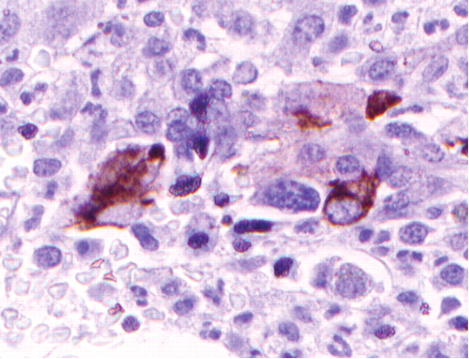

Question
Can we predict high-risk credit individuals by their financial traits?

Explore our data
| emp_title | emp_length | state | homeownership | annual_income | verified_income | debt_to_income | annual_income_joint | verification_income_joint | debt_to_income_joint | delinq_2y | months_since_last_delinq | earliest_credit_line | inquiries_last_12m | total_credit_lines | open_credit_lines | total_credit_limit | total_credit_utilized | num_collections_last_12m | num_historical_failed_to_pay | months_since_90d_late | current_accounts_delinq | total_collection_amount_ever | current_installment_accounts | accounts_opened_24m | months_since_last_credit_inquiry | num_satisfactory_accounts | num_accounts_120d_past_due | num_accounts_30d_past_due | num_active_debit_accounts | total_debit_limit | num_total_cc_accounts | num_open_cc_accounts | num_cc_carrying_balance | num_mort_accounts | account_never_delinq_percent | tax_liens | public_record_bankrupt | loan_purpose | application_type | loan_amount | term | interest_rate | installment | grade | sub_grade | issue_month | loan_status | initial_listing_status | disbursement_method | balance | paid_total | paid_principal | paid_interest | paid_late_fees | |
|---|---|---|---|---|---|---|---|---|---|---|---|---|---|---|---|---|---|---|---|---|---|---|---|---|---|---|---|---|---|---|---|---|---|---|---|---|---|---|---|---|---|---|---|---|---|---|---|---|---|---|---|---|---|---|---|
| 0 | global config engineer | 3.0 | NJ | MORTGAGE | 90000.0 | Verified | 18.01 | NaN | NaN | NaN | 0 | 38.0 | 2001 | 6 | 28 | 10 | 70795 | 38767 | 0 | 0 | 38.0 | 0 | 1250 | 2 | 5 | 5.0 | 10 | 0.0 | 0 | 2 | 11100 | 14 | 8 | 6 | 1 | 92.9 | 0 | 0 | moving | individual | 28000 | 60 | 14.07 | 652.53 | C | C3 | Mar-2018 | Current | whole | Cash | 27015.86 | 1999.33 | 984.14 | 1015.19 | 0.0 |
| 1 | warehouse office clerk | 10.0 | HI | RENT | 40000.0 | Not Verified | 5.04 | NaN | NaN | NaN | 0 | NaN | 1996 | 1 | 30 | 14 | 28800 | 4321 | 0 | 1 | NaN | 0 | 0 | 0 | 11 | 8.0 | 14 | 0.0 | 0 | 3 | 16500 | 24 | 14 | 4 | 0 | 100.0 | 0 | 1 | debt_consolidation | individual | 5000 | 36 | 12.61 | 167.54 | C | C1 | Feb-2018 | Current | whole | Cash | 4651.37 | 499.12 | 348.63 | 150.49 | 0.0 |
| 2 | assembly | 3.0 | WI | RENT | 40000.0 | Source Verified | 21.15 | NaN | NaN | NaN | 0 | 28.0 | 2006 | 4 | 31 | 10 | 24193 | 16000 | 0 | 0 | 28.0 | 0 | 432 | 1 | 13 | 7.0 | 10 | 0.0 | 0 | 3 | 4300 | 14 | 8 | 6 | 0 | 93.5 | 0 | 0 | other | individual | 2000 | 36 | 17.09 | 71.40 | D | D1 | Feb-2018 | Current | fractional | Cash | 1824.63 | 281.80 | 175.37 | 106.43 | 0.0 |
| 3 | customer service | 1.0 | PA | RENT | 30000.0 | Not Verified | 10.16 | NaN | NaN | NaN | 0 | NaN | 2007 | 0 | 4 | 4 | 25400 | 4997 | 0 | 1 | NaN | 0 | 0 | 1 | 1 | 15.0 | 4 | 0.0 | 0 | 2 | 19400 | 3 | 3 | 2 | 0 | 100.0 | 1 | 0 | debt_consolidation | individual | 21600 | 36 | 6.72 | 664.19 | A | A3 | Jan-2018 | Current | whole | Cash | 18853.26 | 3312.89 | 2746.74 | 566.15 | 0.0 |
| 4 | security supervisor | 10.0 | CA | RENT | 35000.0 | Verified | 57.96 | 57000.0 | Verified | 37.66 | 0 | NaN | 2008 | 7 | 22 | 16 | 69839 | 52722 | 0 | 0 | NaN | 0 | 0 | 1 | 6 | 4.0 | 16 | 0.0 | 0 | 10 | 32700 | 20 | 15 | 13 | 0 | 100.0 | 0 | 0 | credit_card | joint | 23000 | 36 | 14.07 | 786.87 | C | C3 | Mar-2018 | Current | whole | Cash | 21430.15 | 2324.65 | 1569.85 | 754.80 | 0.0 |
<class 'pandas.core.frame.DataFrame'>
RangeIndex: 10000 entries, 0 to 9999
Data columns (total 55 columns):
# Column Non-Null Count Dtype
--- ------ -------------- -----
0 emp_title 9167 non-null object
1 emp_length 9183 non-null float64
2 state 10000 non-null object
3 homeownership 10000 non-null object
4 annual_income 10000 non-null float64
5 verified_income 10000 non-null object
6 debt_to_income 9976 non-null float64
7 annual_income_joint 1495 non-null float64
8 verification_income_joint 1455 non-null object
9 debt_to_income_joint 1495 non-null float64
10 delinq_2y 10000 non-null int64
11 months_since_last_delinq 4342 non-null float64
12 earliest_credit_line 10000 non-null int64
13 inquiries_last_12m 10000 non-null int64
14 total_credit_lines 10000 non-null int64
15 open_credit_lines 10000 non-null int64
16 total_credit_limit 10000 non-null int64
17 total_credit_utilized 10000 non-null int64
18 num_collections_last_12m 10000 non-null int64
19 num_historical_failed_to_pay 10000 non-null int64
20 months_since_90d_late 2285 non-null float64
21 current_accounts_delinq 10000 non-null int64
22 total_collection_amount_ever 10000 non-null int64
23 current_installment_accounts 10000 non-null int64
24 accounts_opened_24m 10000 non-null int64
25 months_since_last_credit_inquiry 8729 non-null float64
26 num_satisfactory_accounts 10000 non-null int64
27 num_accounts_120d_past_due 9682 non-null float64
28 num_accounts_30d_past_due 10000 non-null int64
29 num_active_debit_accounts 10000 non-null int64
30 total_debit_limit 10000 non-null int64
31 num_total_cc_accounts 10000 non-null int64
32 num_open_cc_accounts 10000 non-null int64
33 num_cc_carrying_balance 10000 non-null int64
34 num_mort_accounts 10000 non-null int64
35 account_never_delinq_percent 10000 non-null float64
36 tax_liens 10000 non-null int64
37 public_record_bankrupt 10000 non-null int64
38 loan_purpose 10000 non-null object
39 application_type 10000 non-null object
40 loan_amount 10000 non-null int64
41 term 10000 non-null int64
42 interest_rate 10000 non-null float64
43 installment 10000 non-null float64
44 grade 10000 non-null object
45 sub_grade 10000 non-null object
46 issue_month 10000 non-null object
47 loan_status 10000 non-null object
48 initial_listing_status 10000 non-null object
49 disbursement_method 10000 non-null object
50 balance 10000 non-null float64
51 paid_total 10000 non-null float64
52 paid_principal 10000 non-null float64
53 paid_interest 10000 non-null float64
54 paid_late_fees 10000 non-null float64
dtypes: float64(17), int64(25), object(13)
memory usage: 4.2+ MB| emp_length | annual_income | debt_to_income | annual_income_joint | debt_to_income_joint | delinq_2y | months_since_last_delinq | earliest_credit_line | inquiries_last_12m | total_credit_lines | open_credit_lines | total_credit_limit | total_credit_utilized | num_collections_last_12m | num_historical_failed_to_pay | months_since_90d_late | current_accounts_delinq | total_collection_amount_ever | current_installment_accounts | accounts_opened_24m | months_since_last_credit_inquiry | num_satisfactory_accounts | num_accounts_120d_past_due | num_accounts_30d_past_due | num_active_debit_accounts | total_debit_limit | num_total_cc_accounts | num_open_cc_accounts | num_cc_carrying_balance | num_mort_accounts | account_never_delinq_percent | tax_liens | public_record_bankrupt | loan_amount | term | interest_rate | installment | balance | paid_total | paid_principal | paid_interest | paid_late_fees | |
|---|---|---|---|---|---|---|---|---|---|---|---|---|---|---|---|---|---|---|---|---|---|---|---|---|---|---|---|---|---|---|---|---|---|---|---|---|---|---|---|---|---|---|
| count | 9183.000000 | 1.000000e+04 | 9976.000000 | 1.495000e+03 | 1495.000000 | 10000.00000 | 4342.000000 | 10000.00000 | 10000.00000 | 10000.000000 | 10000.00000 | 1.000000e+04 | 10000.000000 | 10000.000000 | 10000.000000 | 2285.000000 | 10000.0000 | 10000.000000 | 10000.000000 | 10000.000000 | 8729.000000 | 10000.000000 | 9682.0 | 10000.0000 | 10000.000000 | 10000.000000 | 10000.000000 | 10000.000000 | 10000.000000 | 10000.000000 | 10000.000000 | 10000.000000 | 10000.000000 | 10000.000000 | 10000.000000 | 10000.000000 | 10000.000000 | 10000.000000 | 10000.000000 | 10000.000000 | 10000.000000 | 10000.000000 |
| mean | 5.930306 | 7.922215e+04 | 19.308192 | 1.279146e+05 | 19.979304 | 0.21600 | 36.760709 | 2001.29000 | 1.95820 | 22.679600 | 11.40440 | 1.836062e+05 | 51049.063100 | 0.013800 | 0.167100 | 46.112473 | 0.0001 | 184.334000 | 2.663600 | 4.376100 | 7.340703 | 11.379600 | 0.0 | 0.0001 | 3.595300 | 27357.410300 | 13.030000 | 8.095000 | 5.230500 | 1.383100 | 94.648990 | 0.043300 | 0.123800 | 16361.922500 | 43.272000 | 12.427524 | 476.205323 | 14458.916610 | 2494.234773 | 1894.448466 | 599.666781 | 0.119516 |
| std | 3.703734 | 6.473429e+04 | 15.004851 | 7.016838e+04 | 8.054781 | 0.68366 | 21.634939 | 7.79551 | 2.38013 | 11.885439 | 5.86828 | 1.876327e+05 | 53636.731172 | 0.126535 | 0.687768 | 21.748021 | 0.0100 | 2206.389859 | 2.935387 | 3.158583 | 5.981590 | 5.859705 | 0.0 | 0.0100 | 2.434689 | 26570.164081 | 7.874713 | 4.906606 | 3.327623 | 1.717274 | 9.155059 | 0.593852 | 0.337172 | 10301.956759 | 11.029877 | 5.001105 | 294.851627 | 9964.561865 | 3958.230365 | 3884.407175 | 517.328062 | 1.813468 |
| min | 0.000000 | 0.000000e+00 | 0.000000 | 1.920000e+04 | 0.320000 | 0.00000 | 1.000000 | 1963.00000 | 0.00000 | 2.000000 | 0.00000 | 0.000000e+00 | 0.000000 | 0.000000 | 0.000000 | 2.000000 | 0.0000 | 0.000000 | 0.000000 | 0.000000 | 0.000000 | 0.000000 | 0.0 | 0.0000 | 0.000000 | 0.000000 | 2.000000 | 0.000000 | 0.000000 | 0.000000 | 14.300000 | 0.000000 | 0.000000 | 1000.000000 | 36.000000 | 5.310000 | 30.750000 | 0.000000 | 0.000000 | 0.000000 | 0.000000 | 0.000000 |
| 25% | 2.000000 | 4.500000e+04 | 11.057500 | 8.683350e+04 | 14.160000 | 0.00000 | 19.000000 | 1997.00000 | 0.00000 | 14.000000 | 7.00000 | 5.159375e+04 | 19185.500000 | 0.000000 | 0.000000 | 29.000000 | 0.0000 | 0.000000 | 1.000000 | 2.000000 | 2.000000 | 7.000000 | 0.0 | 0.0000 | 2.000000 | 10000.000000 | 7.000000 | 5.000000 | 3.000000 | 0.000000 | 92.600000 | 0.000000 | 0.000000 | 8000.000000 | 36.000000 | 9.430000 | 256.040000 | 6679.065000 | 928.700000 | 587.100000 | 221.757500 | 0.000000 |
| 50% | 6.000000 | 6.500000e+04 | 17.570000 | 1.130000e+05 | 19.720000 | 0.00000 | 34.000000 | 2003.00000 | 1.00000 | 21.000000 | 10.00000 | 1.146670e+05 | 36927.000000 | 0.000000 | 0.000000 | 47.000000 | 0.0000 | 0.000000 | 2.000000 | 4.000000 | 6.000000 | 10.000000 | 0.0 | 0.0000 | 3.000000 | 19500.000000 | 11.000000 | 7.000000 | 5.000000 | 1.000000 | 100.000000 | 0.000000 | 0.000000 | 14500.000000 | 36.000000 | 11.980000 | 398.420000 | 12379.495000 | 1563.300000 | 984.990000 | 446.140000 | 0.000000 |
| 75% | 10.000000 | 9.500000e+04 | 25.002500 | 1.515455e+05 | 25.500000 | 0.00000 | 53.000000 | 2006.00000 | 3.00000 | 29.000000 | 14.00000 | 2.675500e+05 | 65421.000000 | 0.000000 | 0.000000 | 63.000000 | 0.0000 | 0.000000 | 3.000000 | 6.000000 | 11.000000 | 14.000000 | 0.0 | 0.0000 | 5.000000 | 36100.000000 | 17.000000 | 10.000000 | 7.000000 | 2.000000 | 100.000000 | 0.000000 | 0.000000 | 24000.000000 | 60.000000 | 15.050000 | 644.690000 | 20690.182500 | 2616.005000 | 1694.555000 | 825.420000 | 0.000000 |
| max | 10.000000 | 2.300000e+06 | 469.090000 | 1.100000e+06 | 39.980000 | 13.00000 | 118.000000 | 2015.00000 | 29.00000 | 87.000000 | 51.00000 | 3.386034e+06 | 942456.000000 | 3.000000 | 52.000000 | 128.000000 | 1.0000 | 199308.000000 | 35.000000 | 29.000000 | 24.000000 | 51.000000 | 0.0 | 1.0000 | 32.000000 | 386700.000000 | 66.000000 | 46.000000 | 43.000000 | 14.000000 | 100.000000 | 52.000000 | 3.000000 | 40000.000000 | 60.000000 | 30.940000 | 1566.590000 | 40000.000000 | 41630.443684 | 40000.000000 | 4216.440000 | 52.980000 |
| emp_title | state | homeownership | verified_income | verification_income_joint | loan_purpose | application_type | grade | sub_grade | issue_month | loan_status | initial_listing_status | disbursement_method | |
|---|---|---|---|---|---|---|---|---|---|---|---|---|---|
| count | 9167 | 10000 | 10000 | 10000 | 1455 | 10000 | 10000 | 10000 | 10000 | 10000 | 10000 | 10000 | 10000 |
| unique | 4741 | 50 | 3 | 3 | 3 | 12 | 2 | 7 | 32 | 3 | 6 | 2 | 2 |
| top | manager | CA | MORTGAGE | Source Verified | Not Verified | debt_consolidation | individual | B | B1 | Mar-2018 | Current | whole | Cash |
| freq | 218 | 1330 | 4789 | 4116 | 611 | 5144 | 8505 | 3037 | 647 | 3617 | 9375 | 8206 | 9284 |
Code
categorical_cols = loans.select_dtypes(include = ['object', 'category']).columns
category_analysis = {}
for col in categorical_cols:
counts = loans[col].value_counts()
proportions = loans[col].value_counts(normalize=True)
unique_levels = loans[col].unique()
category_analysis[col] = {
'Unique Levels': unique_levels,
'Counts': counts,
'Proportions': proportions
}
for col, data in category_analysis.items():
print(f"Analysis for {col}:\n")
print("Unique Levels:", data['Unique Levels'])
print("\nCounts:\n", data['Counts'])
print("\nProportions:\n", data['Proportions'])
print("\n" + "-"*50 + "\n")Analysis for emp_title:
Unique Levels: ['global config engineer ' 'warehouse office clerk' 'assembly' ...
'inspector/packer' 'da coordinator ' 'toolmaker']
Counts:
emp_title
manager 218
owner 204
teacher 201
driver 123
sales 97
registered nurse 88
rn 80
supervisor 79
truck driver 63
office manager 61
president 54
general manager 51
project manager 50
engineer 46
director 46
operations manager 43
nurse 33
software engineer 30
sales manager 30
technician 29
account manager 29
owner 29
accountant 29
analyst 28
machine operator 28
server 27
mechanic 27
ceo 24
foreman 24
consultant 24
supervisor 23
vice president 23
attorney 23
police officer 22
manager 21
store manager 20
director of operations 20
administrative assistant 19
cook 19
social worker 18
customer service 18
maintenance 18
professor 18
branch manager 18
counselor 17
executive assistant 17
secretary 17
welder 17
operator 17
assistant manager 17
bartender 17
administrator 17
it manager 17
electrician 17
clerk 16
paralegal 16
realtor 16
teacher 15
program manager 15
registered nurse 15
service manager 15
bus driver 14
controller 14
medical assistant 14
loan officer 14
carpenter 14
executive director 13
principal 13
cna 13
cashier 13
designer 12
sales consultant 12
lpn 12
security officer 12
pharmacist 12
captain 12
account executive 12
chef 12
receptionist 11
partner 11
management 11
mechanic 11
delivery driver 11
sales 10
driver 10
officer 10
business analyst 10
correctional officer 10
instructor 10
physician 10
maintenance 10
warehouse 10
service tech 10
legal assistant 10
laborer 9
team leader 9
assistant professor 9
associate 9
customer service rep 9
superintendent 9
nurse practitioner 9
it specialist 9
administrative assistant 9
district manager 9
bookkeeper 9
truck driver 9
pilot 8
finance manager 8
sales representative 8
project manager 8
graphic designer 8
machinist 8
corrections officer 8
case manager 8
underwriter 8
stocker 8
firefighter 8
customer service 8
financial analyst 8
project engineer 8
deputy sheriff 8
service technician 8
cfo 8
flight attendant 8
marketing 8
agent 8
insurance agent 8
nurse practitioner 7
pharmacy technician 7
senior manager 7
superintendent 7
director of sales 7
therapist 7
dental hygienist 7
tech 7
senior accountant 7
plumber 7
dispatcher 7
financial advisor 7
letter carrier 7
admin 7
cleaner 7
production manager 7
physical therapist 7
recruiter 7
customer service manager 7
assistant principal 7
property manager 7
pastor 7
systems administrator 7
sr project manager 7
technician 7
marketing manager 7
regional manager 7
forman 6
mechanical engineer 6
banker 6
sr software engineer 6
software developer 6
systems engineer 6
staff accountant 6
vp 6
foreman 6
program analyst 6
executive chef 6
loan processor 6
painter 6
director 6
managing director 6
sales associate 6
accounting 6
teller 6
physician assistant 6
program director 6
kitchen manager 6
inspector 6
educator 6
equipment operator 6
contractor 6
stylist 6
housekeeper 6
maintenance supervisor 6
management 6
warehouse manager 6
property manager 6
area manager 6
sales rep 6
operator 6
regional sales manager 6
plant manager 6
service technician 6
senior engineer 6
estimator 6
deputy 6
production 6
receptionist 6
credit analyst 5
electrician 5
field supervisor 5
assembly 5
owner operator 5
carpenter 5
customer service representative 5
office administrator 5
sales manager 5
investigator 5
installer 5
data analyst 5
dental assistant 5
custodian 5
coordinator 5
business manager 5
assembler 5
shipping 5
national sales manager 5
waitress 5
assistant 5
auditor 5
quality control 5
construction manager 5
administrative 5
principal consultant 5
mail carrier 5
faculty 5
personal banker 5
it 5
massage therapist 5
courier 5
hr specialist 5
data entry 5
program coordinator 5
senior consultant 5
assistant director 5
maintenance tech 5
material handler 5
assistant store manager 5
table games dealer 5
medical assistant 5
social worker 5
product manager 5
senior software engineer 4
network engineer 4
barista 4
special education teacher 4
lab tech 4
book keeper 4
sales associate 4
hair stylist 4
nanny 4
sales engineer 4
legal secretary 4
architect 4
project coordinator 4
operating engineer 4
librarian 4
customer success manager 4
marketing coordinator 4
administration 4
chemist 4
owner / operator 4
field service engineer 4
account manager 4
department manager 4
registrar 4
electrical engineer 4
pharmacist 4
senior analyst 4
sales director 4
claims adjuster 4
mail handler 4
associate professor 4
computer technician 4
shift manager 4
director of finance 4
court reporter 4
hr director 4
detailer 4
human resources manager 4
rural carrier 4
marketing director 4
programmer analyst 4
assistant manager 4
admin assistant 4
director of nursing 4
paramedic 4
cpa 4
auto tech 4
network technician 4
sr manager 4
finance 4
relationship manager 4
register nurse 4
school counselor 4
pharmacy technician 4
csr 4
customer service agent 4
systems analyst 4
housekeeping 4
programmer 4
respiratory therapist 4
school bus driver 4
grocery clerk 4
labor 4
president 4
territory manager 4
pipefitter 4
heavy equipment operator 4
owner/operator 4
inside sales 4
shipping manager 4
cashier 4
accounting manager 4
police 4
readiness nco 3
elevator mechanic 3
communications 3
clinical manager 3
attorney 3
recruiter 3
teacher/coach 3
certified medical assistant 3
automotive technician 3
executive assistant 3
lead architect 3
technical support 3
executive 3
pca 3
vp of operations 3
appraiser 3
svp 3
billing specialist 3
business analyst 3
logistics 3
hha 3
database administrator 3
care giver 3
lvn 3
trainer 3
lead teacher 3
lead 3
sales person 3
accounting 3
lease operator 3
solutions architect 3
nursing 3
specialist 3
hr supervisor 3
fire fighter 3
security guard 3
police officer 3
support manager 3
assistant parts manager 3
nurse manager 3
bus operator 3
audit manager 3
baker 3
correction officer 3
principal engineer 3
scheduler 3
co owner 3
co-owner 3
warehouse supervisor 3
senior vice president 3
cdl driver 3
medical records 3
music teacher 3
quality manager 3
sergeant first class 3
phlebotomist 3
sr developer 3
security supervisor 3
purchasing manager 3
staff rn 3
conductor 3
information technology 3
patrolman 3
photographer 3
owner/manager 3
system administrator 3
hr coordinator 3
marketing director 3
pta 3
service director 3
store manager 3
processor 3
billing clerk 3
branch manager 3
physician 3
maintenance mechanic 3
accounting clerk 3
assistant vice president 3
surgical tech 3
safety manager 3
plant manager 3
administrative secretary 3
special agent 3
qa analyst 3
senior project manager 3
doorman 3
hr manager 3
sales executive 3
coo 3
parts manager 3
purchasing 3
pharmacy manager 3
lead engineer 3
principal 3
accountant 3
medical doctor 3
home health aide 3
editor 3
sergeant 3
occupational therapist 3
handyman 3
server 3
soldier 3
quality assurance 3
receiving clerk 3
accounts payable 3
officer 3
district manager 3
engineering project manager 3
caregiver 3
personal trainer 3
network administrator 3
service advisor 3
office assistant 3
claims specialist 3
deputy clerk 3
machine operator 3
executive director 3
senior account manager 3
president & ceo 3
city carrier 3
shift supervisor 3
loan officer assistant 3
accounting assistant 3
machinist 3
road driver 3
admin asst 3
site manager 3
practice manager 3
paraprofessional 3
assistant general manager 3
production tech 3
sous chef 3
general manager 3
construction worker 3
process engineer 3
sales consultant 3
team member 3
court officer 3
senior loan officer 3
safety coordinator 3
software architect 3
dock worker 3
shop manager 3
senior associate 3
math teacher 3
security 3
dentist 3
office manager 3
forklift operator 3
lieutenant 3
food server 3
asst manager 2
customer service manager 2
accounts payable specialist 2
advisor 2
project specialist 2
business consultant 2
director of business affairs 2
head of finance 2
locksmith 2
project accountant 2
nail tech 2
division chief 2
it consultant 2
deli manager 2
solution architect 2
science teacher 2
rda 2
patient access 2
therapist 2
accounting associate 2
import agent 2
director of property management 2
quality 2
business office manager 2
sr network engineer 2
retail 2
technical support specialist 2
parts sales 2
guidance counselor 2
merchandiser 2
quality assurance manager 2
accounts receivable 2
pricing 2
heavy equipment operator 2
concierge 2
detective 2
budget analyst 2
corporal 2
sergeant 2
team manager 2
shipping and receiving 2
assistant 2
assistant bakery manager 2
traffic manager 2
registered dietitian 2
chaplain 2
civil engineer 2
human resources 2
management analyst 2
managing member 2
radiology manager 2
mortgage closer 2
it technician 2
facility manager 2
technition 2
rn case manager 2
assistant prosecutor 2
controller 2
comptroller 2
house keeping 2
boss 2
claims examiner 2
collector 2
mortgage loan officer 2
owner/president 2
military 2
gm 2
security 2
auto technician 2
ct tech 2
forman 2
technical specialist 2
manufacturing engineer 2
crane operator 2
bus operator 2
software consultant 2
executive producer 2
contracts manager 2
superintendant 2
vice president of sales 2
claims rep 2
sales mgr 2
sr account executive 2
assistant district attorney 2
salesman 2
mortgage underwriter 2
crew 2
receiving 2
landscaper 2
barber 2
substitute teacher 2
medical director 2
control room operator 2
studio manager 2
server engineer 2
library specialist 2
janitor 2
sr systems engineer 2
billing supervisor 2
emt 2
aircraft technician 2
president/owner 2
field service technician 2
automotive technician 2
it analyst 2
research associate 2
aviation safety inspector 2
engineer 2
military officer 2
equipment operator 2
network tech 2
director of operations 2
sr web developer 2
planner 2
assistant property manager 2
food service director 2
maintenance technician 2
operations manager 2
commodity broker 2
engineering technician 2
software support engineer 2
communications specialist 2
travel agent 2
professional truck driver 2
labor 2
charge nurse 2
broker/realtor 2
clerical 2
psychologist 2
fire captain 2
director of it 2
sr operations analyst 2
bartender 2
help desk 2
area sales manager 2
regional controller 2
speech pathologist 2
buyer 2
care coordinator 2
air traffic controller 2
senior systems architect 2
vp finance 2
software engineer 2
general sales manager 2
production specialist 2
certified pharmacy tech 2
office work 2
restaurant manager 2
escrow officer 2
paramedic 2
manufacturing associate 2
branch service manager 2
revenue manager 2
finance director 2
client service rep 2
operations supervisor 2
chief operating officer 2
licensed vocational nurse 2
sales representative 2
shop forman 2
admissions counselor 2
front office coordinator 2
associate attorney 2
family support worker 2
implementation consultant 2
marketing specialist 2
collections 2
graphic artist 2
sushi chef 2
overnight stocker 2
project mgr 2
maintenance engineer 2
janitor 2
department lead 2
csp 2
sole proprietor 2
senior business analyst 2
group leader 2
process technician 2
director of administration 2
ramp agent 2
production operator 2
retail manager 2
quality control manager 2
route salesman 2
credit manager 2
csa 2
development officer 2
maint 2
warehouse associate 2
nursing assistant 2
leadman 2
payroll mgr 2
district sales manager 2
treasurer 2
nurse anesthetist 2
press operator 2
construction inspector 2
inspector 2
feeder driver 2
welder 2
warehouse worker 2
home health aid 2
meat manager 2
cad manager 2
financial director 2
asst manager 2
transportation supervisor 2
actuary 2
legal assistant 2
sourcing manager 2
key holder 2
dealer 2
nurse 2
tool and die maker 2
teaching assistant 2
assistant professor 2
fulfillment associate 2
crew leader 2
medical coder 2
correctional officer 2
respiratory therapist 2
business development manager 2
weighmaster 2
communications manager 2
senior system engineer 2
assistant branch manager 2
line cook 2
firefighter 2
maintenance director 2
medical technologist 2
physical therapist assistant 2
porter 2
training manager 2
tech 2
web developer 2
creative director 2
physical therapist assistant 2
inside sales representative 2
line lead 2
senior programmer analyst 2
staff 2
cnc programmer 2
school administrator 2
dental assistant 2
parts mgr 2
personal trainer 2
journeyman 2
crane operator 2
zone manager 2
warehouse 2
technical account manager 2
accounts receivable manager 2
maintenance technician 2
senior data engineer 2
crna 2
corporate recruiter 2
operation manager 2
production scheduler 2
pharmacy tech 2
sales agent 2
it support 2
maintenance manager 2
production supervisor 2
shipping supervisor 2
account representative 2
electronic tech 2
otr driver 2
operations supervisor 2
regional director 2
bookkeeper 2
director of information technology 2
dispatch manager 2
maintenance mechanic 2
fleet manager 2
outside sales 2
warehouse associate 2
lead clerk 2
mortgage banker 2
supply chain manager 2
vp sales 2
shop foreman 2
vp of sales 2
human services 2
fire captain 2
radiologic technologist 2
finisher 2
communications officer 2
sales specialist 2
product specialist 2
operations analyst 2
shipping 2
cnc operator 2
title clerk 2
human resources director 2
it director 2
senior web developer 2
teachers aide 2
service advisor 2
senior quality analyst 2
paraprofessional 2
probation officer 2
senior mechanical engineer 2
sr business analyst 2
quality team leader 2
financial service representative 2
compliance manager 2
program coordinator 2
manicurist 2
cdl truck driver 2
meat cutter 2
repair technician 2
account executive 2
closer 2
health assistant 2
coordinator 2
asset protection 2
executive vice president 2
warranty administrator 2
chief financial officer 2
hr generalist 2
paralegal 2
real estate agent 2
inventory control 2
vice president 2
business development associate 2
field inspector 2
distribution manager 2
program officer 2
driller 2
assembly 2
data analyst ii 2
medical biller 2
accounting specialist 2
team lead 2
hr 2
enterprise account executive 2
real estate broker 2
civil engineer 2
project coordinator 2
logistics 2
electrical assembler 2
secretary 2
senior inspector 2
sales supervisor 2
client relations manager 2
director of sales 2
plumber 2
corrections officer 2
inventory 2
consultant 2
1sg 2
art teacher 2
retail sales 2
teacher aide 2
sales assistant 2
senior paralegal 2
lead teller 2
doorman 2
business systems analyst 2
customer service representative 2
contract manager 2
process operator 2
administrative associate 2
loader 2
union carpenter 2
employee 2
cardiac sonographer 2
student services coordinator 2
owner operator 2
radiology tech 1
office specialist ii 1
house patient care manager 1
senior associate engineer 1
executive vendor analyst 1
support coordinator 1
clinical supervisor/behavior analyst 1
development specialist 1
international trip planner 1
owner/retirement planning 1
branch sales and service representative 1
assembly technician 1
enrollment compliance rep 1
secretary/ treasurer 1
bakery manager 1
customer technical support supervisor 1
conducter 1
hospital police 1
supply chain project manager 1
marketing supervisor 1
industrial mechanic 1
logistics supervisor 1
staff financial analyst 1
application analyst 1
sports & recreation director 1
veterinary technician 1
network center tech 1
electronic technician 1
organizer 1
credit specialist 1
insurance rep 1
management executive 1
customer engineer 1
nurses aid 1
escrow officer/branch manager 1
neighborhood & housing specialist 1
offset printing operator 1
warranty admin 1
field tech 1
deputy cio/g6 1
artistic associate 1
communications operator 1
commercial manager 1
operations project analyst 1
car inspector 1
on-site manager 1
financial service represent 1
animal care technician 1
jewelry consultant 1
claims specialist 1
wholesale clerk 1
it support analyst 1
packing 1
deputy 1
nail specialist 1
minister of music & senior adults 1
developmental service worker 1
director of career services 1
oil operator 1
railroad engineer 1
evs 1
nanny/babysitter 1
fnp 1
corrective maintain tech 1
front end loader 1
network manager 1
first lieutenant 1
cad technician 1
journeyman mechanic 1
juvenile institutional officer 1
adjunct instructor (professor) 1
senior planner 1
backtender 1
optometrist 1
food associate 1
information systems manager 1
custodian 2 1
sr purchasing specialist 1
allied health division chair 1
operating partner/general manager 1
speech language therapist 1
ach operations 1
immigration enforcement agent 1
ccht 1
patient coordinator 1
merchandise 1
senior account analyst 1
field tech 1
braillist 1
x-ray technologist 1
shuttle driver 1
product owner 1
director of customer excellenc 1
air conditioning 1
power operations coordinator 1
security engineer 1
director of pfs 1
assistant director, budget & finance 1
senior logistics analyst 1
accounting clerk 1
director project management 1
government affairs director 1
night supervisor 1
sale representative 1
technical design manager 1
creative executive 1
benefits adminsitrator 1
fulfillment 1
coding manager 1
certified nursing assistsnt 1
loan administrator, avp 1
licenced practical nurse 1
senior team leader 1
clinical coordinator 1
ops manager 1
deployment coordinator 1
intake coordinaor 1
senior director of operations 1
head caretaker 1
registered nurse mgr 1
foreman/supervisor 1
vice president east coast closing 1
tax manager 1
bank regulator 1
cjief officer 1
director of sales operations 1
teller supervisor 1
security gard 1
property adjuster 1
musician 1
call center associate 1
cep 1
sales account executive 1
community housing coordinator 1
electro-mechanical tech 1
preschool teacher 1
owner, president 1
senior controller 1
record keeper 1
assistant section chief 1
emergency technician 1
staff field adjustor 1
retail sales consultant 1
pm 1
electronic maintenance 1
dean of paraprofessionals 1
regional account manager 1
e-5 alims 1
executive office administrator 1
contract admin 1
transmission operations coordinator 1
hr special projects manager 1
certified nurse aide 1
fork lift operator 1
storemanager 1
qa control 1
professor assistant 1
aircraft mechsnic 1
aviator pilot 1
owner - president 1
information processing technician 1
social media supervisor 1
signalman 1
director of nursing assistant 1
facilities technician 1
shipping and recieving 1
tailor/fitter 1
park supervisor 1 1
managing partner 1
processor/underwriter 1
compounder 1
purchasing clerk 1
business analysis 1
interior designer - sales 1
child welfare worker iii 1
senior collector 1
fueler 1
city superintendent 1
behavioral health unit supervisor 1
cosmetologist colorist 1
operations supervisor 1
principle software engineer 1
director of construction 1
service operations specialist 1
mlo 1
transportation director 1
managing member/owner 1
support supervisor 1
speech language pathologist 1
medicaid eligibility examiner ii 1
project manger 1
se 1
polive officer 1
cable/telephone technitian 1
inland marine underwriter 1
vp customer operations 1
global project manager 1
patient care liaison/triage tech/lead 1
srsupervisor 1
sr security analyst, grc 1
county counsel 1
shipping receiving clerk 1
life skills intructor 1
caseworker 1
hts 1
county engineer 1
radiologist 1
lead repair tech 1
senior technical coordinator 1
evp operations 1
corporate trainer 1
president and ceo 1
technical information specialist 1
food service 1
licensed barber 1
vp of lending 1
bar porter 1
commercial credit analyst 1
mechanical test manager 1
field service tech 1
mep reporting specialist 1
phone banker 1
insurance counselor 1
healthy social behavior specialist 1
is support 1
building automation technician 1
area director 1
sales/ cobbler 1
collection officer ii 1
sr school lunch helper 1
fulltime 1
mobile equipment operator 1
bulk mail technician 1
plumber/pipefitter 1
insurance/finanical coordinator 1
nursing assistant 1
seaman 1
payroll supervisor 1
avionics technician 1
night manager 1
lead custom technician 1
medical fellow 1
network &support specialist 1
operations lead 1
cash applications supervisor 1
linemen 1
specialist: hope operations 1
st john specialist 1
coating tech 1
mortgage servicing specialist 1
3rd shift plant manager 1
quality supervisor 1
facilities coordinator 1
1st grade teacher 1
computer programmer 1
school crossing guard 1
border patrol agent 1
speech language assistant 1
paraeducator iii 1
originator 1
live sound engineer 1
pdr technician 1
body tech 1
body mechanic 1
bulk cheese cutter 1
welder/supervisor 1
associate editor 1
national acct/business development mgr 1
accounts manager 1
business administrator 1
die maker 1
senior database administrator 1
check in lead 1
labor foreman 1
car salesmam 1
warehouseman 1
central supply clerk 1
operation 1
nursing attendant 1
customer delivery director 1
auto glass technician 1
sales/collections 1
asst finance director 1
digital advertising associate 1
accounting ar 1
bodyman 1
glazier 1
heavy equipment washing 1
postdoctoral researcher 1
marketer 1
a&d clerk 1
inspection tech 1
deckhand 1
senior storekeeper 1
commercial operations specialist 1
system/database administrator 1
credit directo 1
lecturer 1
master system tech 1
medical gas verifier 1
journeyman wireman 1
licensed practical nurse 1
technical manager 1
campus supervisor 1
school nurse 1
senior vp 1
jewelry sales consultant 1
ny district manager 1
sr teller 3 1
director, quality improvement 1
optical manager 1
plating tech 1
pharmasist 1
cio 1
desk sgt 1
cct 1
cdl-driver 1
director of case management 1
outside sales rep 1
sr consultant 1
pipelayer/construction laborer 1
marketing 1
inside account manager 1
registered rn 1
fts 1
product development 1
records 1
operations specialist 1
stocking 1
apparel sales lead/keyholder 1
early head start teacher 1
survey tech 1
owne 1
property manger 1
training chief 1
sr research compliance coordinator 1
freight coordinator 1
manager, sales operations 1
sales merchandiser 1
cnc machinist 1
director of research 1
chief of staff 1
senior technical specialist 1
finance and accounting 1
cable splicer 1
3rd shift supervisor 1
manager, l&d, nicu 1
trooper 1
live-in care giver 1
srbusiness system analyst 1
sales administrator 1
shop foremam 1
ownner 1
taxidriver 1
production associate 1
regional credit lead 1
plant utilities engineer 1
laboror 1
aftermarket 1
city traffic engineer 1
land technician 1
support engineer/web designer 1
warranty administrator 1
inside wireman 1
planning manager 1
health aid 1
purchase agent 1
anesthesiologist 1
laborer 1
admin asst 1
it qa 1
judge 1
supply chain administrator 1
field mechanic 1
biostatistician/epidemiologist 1
materials specialist ii 1
outreach director/pastor 1
patient services 1
sr accountant 1
senior donor relations officer 1
pacs admin 1
teacher/administrator 1
clinic manager 1
program leader 1
cnc programmer / operator 1
otr driver 1
utility porter 1
forklit operator 1
cnc programer 1
lead consulting data analyst 1
sales and marketing manager 1
civil servant 1
director of product development 1
kitchen 1
interior tech 1
multimedia producer 1
flight attendant 1
principle fellow 1
department executive one 1
internal audit contractor 1
vp enrollment 1
structure analyst 1
communications associate 1
senior erp consultant 1
sr sys admin 1
wealth mgmnt associate 1
asst mgr bts contract 1
svp of commercial operations 1
hazardous materials compliance officer 1
register nurse manager 1
registered cardiovascular technologist 1
railroad conductor 1
sr computer operator 1
pipewelder 1
business banking specialist 1
admissions coordinator 1
owner/operater 1
manager is - tier 1 nursing and pharmacy 1
inventory supervisor 1
interior designer 1
transportation operator 1
fulfillment manager 1
product line manager 1
ground worker 1
department head 1
director of donor society clubs 1
resource officer 1
financial administrator 1
food technician 1 1
project applications engineer 1
apprentice lineman 1
regular full time carrier 1
legal 1
learning systems analyst 1
forge fabrucator 1
food service leader 1
general mechanic g-12 1
electrical and instrument designer 1
fire alarm inspector 1
director of marketing 1
business specialist 1
senior assistant manager 1
hospitality services manager 1
supply specialist 1
floor layer 1
rental navigator 1
quality system specialist ii 1
public utility analyst ii 1
rehab manager 1
it student supervisor 1
senoir vendor support 1
flight medic 1
factory 1
director of pupil services 1
owner-consultant 1
pension ananlyst 1
patient access rep 1
funeral servicd assistant 1
asst teacher 1
chief operations officer 1
assistant dining room manager 1
operations coordinator 1
nurse consultant 1
technical writer 1
customer service engineer 1
it help desk 1
staff sergeant 1
rn-supervisor 1
classroom assistant 1
onsite electrostatic specialist painter 1
bolter 1
gate inspector 1
hs teacher/ college professor 1
talent development consultant 1
landscape designer/arborist 1
parts counter 1
coordinator of fire services 1
bank examiner 1
surveyor 1
truck drivet 1
sandwich maker 1
region sales manager 1
registered nurse / director of nursing 1
porter 1
lpc 1
lieutenant sheriff dept 1
overnight 1
real estate agent 1
production manufacturing 1
it senior analyst 1
battalion chief 1
strategy relationship manager 1
senior support representative 1
administrative support specialist 1
environmental serviceassociate 1
paraeducator 1
project assistant 1
sr architect - technology 1
referral specialist 1
shipfitter 1
college advisor 1
clinical representative iii 1
imaging services assistant 1
pizza cook 1
doctor of audiology 1
customer service manger 1
counselor 1
operatot 1
service director 1
medical billing manager 1
deli team leader/manager 1
quality engineer 1
office operations manager 1
quality control & compliance 1
well teck 1
dept of rehabilitation 1
senior mapping tech 1
vice president customer operations 1
maintence 1
customer advocate 1
sales,painter, assembly 1
tax paralegal 1
pipefitter superintendent 1
rn in surgery 1
chief technology officer 1
field service representatives 1
vice president/director of sales 1
maintenance superviser 1
correction officer 1
job manager 1
frontend manager 1
consumer advocate 1
direct support professional 1
sr it project manager 1
certified veterinary technician 1
senior csr 1
cdi specialist 1
design engineer 1
agriculture specialist 1
program integrity auditor 1
student success coach 1
patient service 1
senior principle associate 1
fireman 1
emergency truck driver 1
ceo team leader 1
cabinet builder 1
plant supervisor 1
csr dispatcger 1
packing 1
general manger 1
supervising engineering technician 1
corporate client manager 1
vp operations 1
mechanic truck driver 1
auto paint tech 1
resident physician 1
painter 2 1
health unit coordinator 1
relationship specialist 1
auto body technician 1
vet tech 1
saw operator 1
clinical specialist 1
master trainer 1
country manager 1
team lead production 1
senior product manager 1
parts person 1
grounds crew 1
senior maintenance tech 1
adjunct faculty 1
manager/hr 1
speech-language pathologist 1
accounting shared services coordinator 1
snr fin svcs rep 1
office manager/accountant 1
business anaylst 1
busdriver 1
secreatary 1
transportation manage 1
technical architect 1
application manager 1
it tech ii 1
asst mgr 1
tax law specialist 1
mri technologist 1
nutrition services 1
area sales leader 1
rn supervisor 1
operations analysts / server 1
territory mamanger 1
peersuport concelor 1
ct technologist 1
internal auditor 1
core layer 1
deliveries carrier 1
mra 1
senior manager of prevention services 1
train operator 1
national sales 1
cosmetologist 1
coordinator of admission 1
deputy warden 1
tool maker 1
atc 1
bdc manager 1
para professional 1
creative director, owner 1
sander 1
workforce development consultant 1
sr loan processor 1
sales representative t 1
films clerk 1
area director of sales 1
principal internal auditor 1
sports editor 1
adminiative asst 1
spray painter 1
attorney owner 1
design assistant 1
senior customer service 1
sleep tech 1
resource specialist/program manager 1
quality assurance engineer 1
stylist apprentice 1
certified teachers aid 1
area operation supervisor 1
vice president of engineering 1
cip compliance specialist 1
detective investigator 1
patent examiner 1
chief estimator 1
front office lead 1
construction glazer 1
haircutter 1
sr buyer 1
loan consultant 1
funeral director and supervisor 1
fiduciary trust officer 1
usda helper 1
nursing shift supervisor 1
order processing 1
process analyst 1
investor relations 1
medical imagining manager 1
er nurse - clinical trauma specialist 1
shipping and picking 1
dept manager 1
qa developer 1
assistant business administrator 1
accounting director 1
shop forman 1
sales & marketing 1
director transformation 1
ophthalmic technition 1
visual market manager 1
assembly line 1
process operator 1
compliance coordinator 1
human resources generalist 1
aro 1
credit administrator 1
fuel and lube technician 1
office lead 1
production artist/retoucher 1
rn/manager 1
director of detention services 1
cota 1
attorney at law 1
dietary 1
certifying scientist 1
aesthetican 1
district conservationist 1
it application architect 1
front end engineer 1
deputy chief of police 1
towtruck driver 1
cbp officer 1
field foreman 1
public health sanitarian ii 1
national account executive 1
patron services 1
distribution 1
tanker man 1
networks 1
real estate support staff 1
insurance processor 1
avp of edi 1
claims customer service 1
pressroom operator 1
sr principal consultant 1
wire technician 1
sr loan processor 1
americorp member 1
lending officer 1
tax clerk 1
shipping supervisor 1
svp operations 1
seafood clerk 1
certification clerk 1
msg 1
aftermarket expeditor 1
residential assistant manager 1
host 1
cadd 1
home health aide 1
learning experience facilitator 1
director of corporate operations 1
state trooper 1
constituent services representative 1
nails tech 1
relationship banker 1
vac/shift relief warehouse 1
emergency medical technician 1
prep touch up 1
operation specialist 1
director asset management 1
teacher assistent 1
bridge tender 1
direct staff 1
kindergarten teacher 1
systems administrator sr 1
senior claim examiner 1
consumer marketing director 1
sr toll collector 1
rn-icu 1
talent 1
certified tumor registrar 1
sales and support generalist 1
devops engineer 1
its5 1
maritime transportation specialist 1
hr sourcer 1
executive 1
technical 1
print project planner/estimator 1
section 8 coordinator 1
development 1
technology consultant iv 1
aviation analyst 1
title examiner 1
director of fitness 1
public utilities specialist 1
addiction specialist 1
department management 1
sr mech spec 1
legal asst 1
credit sales manager 1
para transit specialist 1
gis analyst 1
nuclear medicine 1
operator one 1
locker room attendant 1
staff sargent 1
sr loan officer 1
supervisor, production 1
soils laboratory technician 1
software sales 1
mc 1
human resource business partner 1
qc manager 1
accounting technician 1
director of information services 1
customer resolution manager 1
casualty rep adjuster 1
district hr mgr 1
coverage partner 1
senior merchandising manager 1
financial center operations manager 1
community improvement specialty officer 1
irb coordinaor 1
head pressman 1
ux development manager 1
supervisor/front end 1
mortgage specialist 1
360app specialist 1
student services senior professional 1
composite fabricator 1
sales/barista 1
postdoctoral research associate 1
client services 1
lpta 1
training store manager 1
electrical design engineer 1
hotel manager 1
strategic procurement sourcing mgr 1
corporate sales 1
super intendant 1
director of engineering 1
house manager 1
associate auditor 1
youth specialist 1
sprinkler foreman 1
intern 1
operation engineer 1
dist computer tech 1
realtor - independent contractor 1
operation 1
mgr it application 1
information assurance 1
parent partner 1
line driver 1
sr java analyst programmer 1
des support operations 1
market leader 1
contractor 1
certified nurse aide 1
risk operations 1
carpenter foreman 1
principle business solution architect 1
coding lead 1
global config engineer 1
sr application analyst 1
lead sales and service associate 1
bus monitor 1
supply tech 1
export ops supervisor 1
commercial cleaner 1
helo crew chief 1
senior network engineer 1
operating engineer 1
supervisor front desk 1
supervising attorney 1
crew member 1
snr project engineer 1
courier 1
active duty 1
systems engineer 1
svp chief design officer 1
passenger tire builder 1
blackjack dealer 1
finance mgr 1
car hauler 1
maintenance splicer 1
ceiling mechanic 1
shiping and receiving 1
utility porter 1
tech support specialist 1
residential ast 1
gs-6 1
sales assistant 1
training records specialist 1
security officer 1
construction wireman 1
mla 1
logistics specialist 1
vice president/market manager 1
medical technician 1
director of career center 1
haul truck driver 1
customer service advisor 1
strategic account director 1
techinology cooridinator 1
day care 1
sr social marketing strategist 1
lead systems administrator 1
installer/technician 1
maintenance tech 1
rn clinical informatics coordinator 1
housekeeping manager 1
house keeper 1
teacher'saide 1
conusultant 1
customer service/lpn 1
costing administrator 1
pm/pdm tech 1
broker 1
management & program analyst 1
corporate sales manager 1
web front-end designer 1
work yd 1
assistant manager of bus schedules 1
paraprofession 1
case worker 1
clinical report writer 1
speech pathologist supervisor 1
schedule coordinator 1
sr solution architect 1
accounting adminstrator 1
asst parts dept manager 1
retail and brand education specialist 1
gaming dealer 1
own truckdriver 1
pharmcist 1
managing attorney 1
senior enrollment specialist 1
form operator 1
vacation specialist 1
senior police officer 1
ssgt / e-5 1
accounts payable manager 1
warehouse clerk 1
events coordiantor 1
creative designer 1
customer relations manager 1
it supervisor 1
home attender 1
business loan counselor officer 1
project controls 1
mobile support analyst 1
software developper 1
network engineer 1
directional driller 1
special events and marketing assistant 1
patient access representative 1
inkjet lead operator 1
bank manager 1
police assistant 1
practice coordinator 1
track welder 1
police officer 2 1
interim dean of students 1
senior compounder operator 1
it professional 1
ecommerce, digital strategy 1
owner & operator 1
epic sr analyst 1
nutrition 1
salon leader 1
sr mechanical engineer 1
tv broadcaster 1
sr system analyst 1
notasked 1
body shop manager 1
dispatch 1
labor relations specialist 1
lawyer/partner 1
heavy equipment mechanic 1
qa project coordinator 1
senior security analyst 1
operator machine 1
program assistant 1
mro purchaser 1
signing associate 1
software 1
superintendent of schools 1
research health science specialist 1
educational aide 1
translations engineer 1
farm foreman 1
motor vehicle representative 1
cyber security specialist 1
bi analyst 1
coiled tubing supervisor 1
special forces warrant officer 1
partner physician 1
regional credit center assistant manager 1
quality assurance specialist 1
sr compensation analyst 1
line operator 1
cardiac tech 1
full time hub person 1
sales coordinator 1
claims advisor 1
senior speciailst 1
senior manager permitting 1
sales and marketing 1
quarry manager 1
assistant supervisor 1
screening supervisor 1
slot keyperson 1
rep 1
maintenence 1
production tempering assembly 1
public safety manager 1
mental health worker 1
vp-lending application manager 1
sr unix administrator 1
meatcutter helper 1
classification sergeant 1
vice president regional property mgr 1
exam coordinator/technology specialist 1
camp manager 1
dueno 1
executive ceo assistant 1
broker-associate 1
town manager 1
electrical contractor supervisor 1
chief inspector 1
information associat, sr 1
program mgr 1
public safety officer 1
vice president - operations 1
education site manager 1
lead mechanic 1
rental management 1
erp manager 1
mathematical statistician 1
assistant supervisor 1
home lending officer 1
vice principal 1
hvac service technician 1
youth development specialist 1
network installer 1
honor health 1
photography agent 1
salesperson - yearbooks 1
coin operator 1
r e appraiser 1
claims assistant 1
parking manager 1
supervisor, ada field surveillance 1
ach product consultant 1
hr/pr administrator 1
superintended 1
senior visual designer 1
project controls supervisor 1
billing & admin 1
card services supervisor 1
service plumber 1
early childhood teacher 1
coding facilitator 1
city council 1
realtor associate 1
legal instruments examiner 1
technical support analyst 1
contract specialist 1
lube manager 1
senior business process specialist iii 1
rv consultant specialist 1
school psychologist 1
accounting dept 1
quality assurane test and evaluation 1
mitigation manager 1
records management specialist 1
community director 1
software development support 1
electrical 1
cust svc 1
administrative/bookkeeper 1
relationship banker 1
medical lab tech 1
firefighter/technician 1
communications specialist 1
pharm tech 1
seafood manager 1
booth renter/stylist 1
sr security consultant 1
drover 1
legal processes coordinator 1
airline captain 1
central indiana analogies 1
sps 1
writer 1
independent contractor 1
city carrier assistant 1
b tech 1
manufacturing systems technician 1
corporate chef 1
operations mgr 1
call center director 1
announcer 1
director, executive search 1
collections representative 1
svp, public policy 1
mortgage loan processor 1
administrative services manager 1
food scientist 1
fire and safety engineer 1
engineering tech 1
benefits clerk 1
telecommunications 1
trainmaster 1
bim manager 1
auto worker 1
corporate operations director 1
help desk technician 1
aid 1
accounting spe 1
machinist/manager 1
assistant dir rn 1
elementary building engineer 1
houskeepeng 1
applications engineer 1
e7 1
frame builder 1
is specialist 1
implementation tech 1
jobsite supervision 1
talent acquisition manager 1
produce manager 1
specialist 2 1
sales represetative 1
purchasing aide 1
vehicle inventory 1
group it manager 1
adjunct professor 1
senior programmer/analyst 1
sergeant (e5) 1
ndt level 2 inspector 1
benefit consultant 1
registered nurse team leader 1
technical recruiter 1
agent 1
electronic assembly 1
systems integration manager 1
production 1
educational diagnostician 1
application specialist ii 1
federal agent 1
district partner 1
compliance business analyst iv 1
security analyst 1
project management director 1
division president 1
maitnence supervisor 1
roi 1
assistant human resources 1
senior graphic designer 1
employment training center director 1
machinist mate third class 1
dental hygenist 1
delivery drivers 1
vet assistant 1
editor/marketing director 1
bus opertor 1
qa supervisor 1
vp, business support 1
shipping/receiving supervisor 1
gunnersmate 1
technical sergeant 1
irrigation service technician 1
social ed teacher 1
utility worker i 1
executive secretary 1
lead bartender 1
applications developer 1
senior business development executive 1
hris manager 1
supplier development engineer 1
lab director 1
enterprise sales 1
work comp specialist 1
credentialing manager 1
business intelligence developer 1
field consultant 1
senior activities assistant 1
application developer 3 1
certified pharmacy technician 1
is 1
director of sales and marketing 1
e-commerce manager 1
client service representative 1
financial management techncian 1
telecom engineer 1
senior sales supervisor 1
manager/server 1
registered dental hygienist 1
quality inventory management tech 1
mailman 1
veterinary technician 1
financial expert 1
software engineer in test 1
car repairman 1
vp of residential management 1
reputation management program manager 1
firefighter/medic 1
alarm and detection technician 1
senior advisor 1
senior underwriter 1
field service rep 1
dining room facility attendant 1
deputy sheriff 1
supervisor / lead 1
massage therapist 1
worker 1
field operations business partner 1
it security project manager 1
mental health therapist 1
nail technician 1
senior radiologic technologist 1
finance/billing 1
market manager 1
manager mp&l 1
immigration paralegal 1
assistant clinical director 1
tire technician 1
provider enrollment 1
manager, store operations 1
operations 1
inspector/packer 1
da coordinator 1
stockman 1
regional finance leader 1
findlay terminal manager 1
dc tech 1
branch store managermarion n,c 1
program administator 1
lead automation developer 1
receiptionist 1
dean of students 1
branded editor 1
lead devops engineer 1
insurance underwriter 1
telemarketer 1
cardiothoracic sales specialist 1
baker 1
compensation practices manager 1
senior advisor t-2 apple 1
laborer foreman 1
hair dresser 1
histology technician 1
charger operator 1
integration tech iii 1
truck driving 1
nursing coordinator -admin ii 1
line haul driver 1
sales associates 1
warehouse assistant 1
project manager assistant 1
lawyer/owner 1
financial representative 1
regional revenue manager 1
tugboat captain 1
client billing coordinator 1
administrative specialist 1
sterile processing lead technician 1
maid 1
transportation 1
home care aide 1
lineman/field technician 1
occupational therapist - level 3 1
production operator 1
supervisor/cook 1
city clerk 1
production operation specialist 1
food services 1
service clerk 1
office assistants 1
cover driver 1
hr knowledgebase analyst 1
director of people operations 1
professional 1
mail handler 1
vice president, seo 1
technical director 1
sales clerk 1
evp 1
parts delivery person 1
owner/accountant 1
cad tech 1
stylist and consultant 1
patient transporter 1
realtor property manager 1
senior marketing analyst 1
transportation manager 1
paraprofessional 111 (therapeutic ) 1
vp philanthropy 1
devops 1
enginnering technician 1
hospital liaison 1
truck driver 1
medicare supervisor 1
director of dining services 1
producer 1
tier 1 tech support 1
research coordinator 1
radiologic technologist 1
test tech 1
system analyst 1
trial paralegal and realtor 1
regional telephony manager 1
qa supervisor 1
retail market manager 1
sarety security officer 1
produce clerk 1
store brand leader 1
sr claims examiner 1
night auditor 1
lexus service 1
teachers 1
carpinter 1
vp marketing promotions 1
services principal 1
manager, software delivery 1
aviation maintenance technician 1
assistant project manager 1
surgical nurse 1
maintainance 1
glasser 1
evaluation analyst 1
controls software engineer 1
vp, corporate reporting 1
human resources generalist 1
sqd leader 1
regional visual manager 1
land admin mgr 1
lending consultant 1
reporting administrator 1
director of marketing 1
service representative 1
lead lab technician 1
wealth management advisor 1
loan assistant/credit analyst 1
future executive sr sales director 1
senior clerk 1
owner/groomer 1
diesel tech 1
internet sales & marketing manager 1
sr claims specialist 1
care provider 1
senior drafting designer 1
manager/supervisor 1
superior court judge 1
sr oracle database administrator 1
para legal 1
sanitation 1
line worker 1
vp, channel sales & mktg 1
certified electrician 1
rx supervisor 1
bco 1
main banker 1
instructional support specialist 1
cheif executive officer 1
regional solutions manager 1
southeast market manager 1
visiting assistant professor 1
sr staffing consultant 1
recording secretary 1
investment analyst 1
provisions 1
finance clerk 1
rn care experience coordinator 1
at3 1
catering associate 1
field manager 1
nurse aide 1
okay 1
mechainc 1
sr storage engineer 1
technical specialists 1
manager customer service 1
director, food and nutrition 1
senior levle lead machinist 1
software quality engineer 1
chemical officer 1
client account coordinator 1
clinical therapist 1
builder 1
dsp 1
chief of police 1
control room operator 1
customer account specialist 1
federal law enforcement 1
community liaison 1
data network consultant 1
shipping clerck 1
shipping associate 1
doo 1
daycare 1
fixer 1
professional driver 1
minister 1
acct manager 1
mgr, bus operations/financial analysis 1
sheriff officer 1
order selector 1
tennis instructor/contract labor 1
corpsman 1
personal assistant 1
obedience trainer 1
community spport 1
ar receptist 1
operations manager 1
armed guard 1
iwtf operator 1
risk manager 1
building engineer 1
information tech specialist 4 1
assistant director of financial aid 1
logistics lead 1
city driver 1
head of customer success 1
concrete specialist/welder 1
media technician 1
clinical nurse 1
manager financial analysis & planning 1
route representative 1
hris/payroll specialist 1
office associate 1
chemical 1
lead network engineer 1
vp sales and marketing 1
crew member/ section leader 1
security technician 1
part sorter 1
senior advisor 1
plant supervisor 1
traffic coordinator 1
instructional designer 1
ar/gl accountant 1
automotive 1
investigative specialist 1
critical skills operator 1
scheduling coordinator 1
sr market research analyst 1
territory sales manager 1
production supervisor 1
senior medical billing specialist 1
sr mechanical designer 1
rgm 1
manager data analytics 1
joint venture partner 1
production graphics 1
utilization rev 1
undergound lineman 1
director of alumni engagement 1
it professional 1
senior or surgical coder 1
parts expeditor 1
extrusion manager 1
finance department 1
instructional assistant 1
customer service specialist 1
survey technician 1
qc techician 1
cpms operations administrator 1
automotive vertical manager 1
him specialist 1
floor health monitor 1
associate governmental program analyst 1
lead pm line cook 1
janitorial 1
compliance supervisor 1
secondary marketing/capital markets 1
upholsterer 1
lead electrician 1
beauty ambassador 1
licence specialist in school psychology 1
limousine driver 1
broadband tech 1
cto clerk 1
manufacturer 1
director of brand marketing 1
clinical team leader 1
senior dpo 1
fcns 1
food service management 1
land use officer 1
client services coordinator 1
shop manager 1
sr loan servicer 1
instructional assistant 1
operator 3 1
deliver driver 1
farmhand 1
avp 1
senior customer service specialist 1
public affairs officer 1
cash application specialist 1
hr/payroll director 1
battalion cheif 1
sr account manager 1
bio sci tech 1
electrical bench tester - lead 1
terminal analyst 1
prem tech 1
dr reg 1
technical sales engineer 1
senior bookkeeper 1
highway trasportation specialist ii 1
senior manager-hub 1
retail fin ancial specialist 1
court administrator iii 1
lab assistant ii 1
detective 1
script supervisor 1
laser technician 2 1
sheriff deputy/bailiff 1
acupuncturist 1
longshoreman 1
ad ops manager 1
sr electrical engineer 1
safety engineer 1
priest 1
coder 1
founder 1
manager, workforce optimization 1
lead teller ops specialist 1
insurance & claims manager 1
license banker 1
hvac teck 1
manager, product management 1
g1 sergeant major 1
forklift driver 1
director of warehousing 1
warranty/tech support 1
pipefitter journeyman 1
maneger 1
director - human resources 1
mail clerk 1
certified veterinary technician 1
property director 1
broadcast designer 1
gis tech 1
disability specialist 1
it product owner 1
work leader 1
collision technician 1
human resources director 1
dry film operator 1
extruder operator 1
economic and community developer 1
senior treasury analyst 1
regional sales manager` 1
recycling 1
composite shop lead 1
foreclosure clerk 1
humanitarian international worker 1
agency records manager 1
lead supervisor 1
msr 1
audio technician 1
attendance officer 1
health services administrator 1
kitchen helper 1
salesperson 1
maternity 1
nursecare 1
instructional support teacher 1
technical sales representative 1
benefits advisor 1
a&p mechanic 1
rt 1
pos 1
association manager 1
owner/ sales 1
welder fabricator 1
sr program administrator iii 1
transaction specialist 1
technical training coordinator 1
rocket technician 1
rubber-liner suupervisor 1
nurse tech 1
security administrator 1
service tegh 1
conversion operations 1
senior account executive 1
caregiver 1
environmental specialist 1
director retired educators 1
service cordinator 1
clerical asscociate ll 1
maintenance electrician 1
delivery driver 1
registar 1
home care worker 1
nurse's assistant 1
personal banker / teller 4 1
production management 1
registered nurse 2 1
maintenance porter 1
it devl manager 1
foreman electrician 1
clinical coordiantor 1
merchandising shift leader 1
roustabout 1
telecom/ fiber technician 1
project specialist 1
restaurant manager 1
teachers assistant 1
meteorologist 1
automobile technician 1
admin sec 1
operating clerk 1
strategic analysis 1
cutter 1
distribution 1
black jack dealer 1
store director 1
budget manager 1
senior electronics technician 1
supervisor inspection 1
lead floor tech 1
president, attorney 1
retail clerk 1
engineering expeditor 1
tool specialist 1
aircraft maintenance control 1
payroll processor 1
it administrator 1
director of coaching 1
human resource manager 1
security technician 1
managing consultant 1
field operator 1
sr procurement cost analyst 1
after school and day camp director 1
lead server 1
chemistry professor 1
power systems engineer 1
technical advisor 1
vp brand marketing 1
sole owner 1
gw2 1
grievance coordinator 1
r&d technician 1
logistics supervision 1
senior life underwriter 1
deputy section manager 1
floor tech 1
head of operations 1
banquet captain 1
owner / president 1
contract administrator 1
assessment specialist 1
coordinator, rehab services 1
computer tec 1
shipping and receiving 1
hardware engineer 1
flight chief 1
visual manager 1
marketing advisor 1
engineer/project manager 1
clerk/treasurer 1
payroll 1
sr data manager` 1
train engineer 1
staff development manager 1
property administrator 1
ssgt 1
director, it support operations 1
general amnger 1
network specialist ii 1
dental hygienist 1
director of female reproductive services 1
business officer 1
member services senior associate 1
senior bio med/ account manager 1
chemical process operator 1
post doctoral associate 1
english teacher 1
dental assistent 1
neighborhood development manager 1
vice president default services 1
electrical worker 1
lot operations 1
senior digital operator 1
senior master auto tech 1
transaction coordinator 1
qa lead 1
nail technician/ esthetician 1
director of revenue management 1
librarian assistant 1
collection development librarian 1
analytic researcher 1
intern pharmacist 1
supply chain specialists 1
business head 1
procurement manager 1
director, operations finance 1
director of engineering 1
facilities maintenance mgr 1
children's intensive case manager 1
special education teacher 1
medical transcriber 1
assistant director of nursing 1
deli and restaurant director 1
real estate broker/ owner 1
projects manager 1
cash office manager 1
service engineer 1
warden 1
manager fiscal operations 1
apraisal deputy 1
grooming apprentice 1
mailhandler 1
graduate researcher 1
certified recovery specialist 1
salesfloor 1
electrical maintenance 1
vice president of marketing / co founder 1
sewer worker 1
unit operator 1
resp therapist 1
attorney/member 1
office assistant iii 1
director of building services 1
administrative specialist ii 1
lead warehouse 1
sr sap software engineer 1
waiter 1
client support services 1
supervising officer 1 1
optician 1
subsurface data doecialist 1
platoon sgt 1
underground splicer 1
mgr - customer qa 1
medical claims examiner 1
advancement officer 1
manager, fraud dept 1
staff specialist 1
leasing manager 1
vp corprate communications 1
executive producer/on-air personality 1
corrections officers 3 1
fire hydrant tech 1
cake decorator 1
operators 1
telephone techician/ supervisor 1
rda 1
process associate 1
optical manager 1
wealth mgmt ops/realtor 1
visa and passport specialist 1
postmaster 1
vice president/training & development 1
interpreter 1
industrial engineer 2 1
skip tracer 1
post production supervisor 1
proposal coordinator 1
automation 1
delivery associate 1
transportation driver 1
engineering 1
title 1 interventions 1
director of strategic partnerships 1
mason 1
sample seamstress 1
sen project engineer 1
mailroom/ site manager 1
cap supervisor 1
lieutenant of police 1
chiropractor 1
admin assist 1
substitute 1
shift lead 1
steward 1
director of asset management 1
qa associate 1
nursing assistance gna 1
h b c cor 1
hospital sales rep 1
computer technical engineer 1
quality control inspector 1
event planner 1
police officer/investigator 1
merchandise 1
labor worker 1
day porter 1
web content manager 1
content marketing specialist 1
manager early career development 1
csr/checker 1
career and transition 1
technical engineer 1
drill instructor 1
qa/qc inspector 1
quality 1
human capital consultant 1
maintenance specialist 1
physical therapist/director of rehab 1
associate vice president 1
high way tech 1 1
penetration tester 1
senior title officer 1
lead service tech 1
dental pas tl 1
school secretary 1 1
nursing assistsnt 1
sr vice president 1
police officer /auto parts delivery 1
teaching fellow 1
senior officer specialist 1
systems engineer 4 1
project & property manager 1
billing/customer service 1
icare 1
owner opperator 1
ramp service man 1
fleet sales 1
pharmacy courier 1
pricing strategist 1
pilot 1
contractor sales 1
comgr 1
route driver 1
customer service/sales associate 1
chief communications officer 1
art fairs coordinator 1
technical support 1
medical education specialist 1
service assurance agent 1
mortgage lender 1
craneman 1
environmental consultant 1
doctor 1
powerlineman 1
family service worker ii 1
telecom analyst 1
full professor 1
director of catering 1
admissions coordinator 1
director of security 1
vp/portfolio manager 1
director of student services 1
rrt 1
labor relations analyst 1
vp risk manager 1
project controls specialist 1
recruiting manager 1
business systems analyst, senior 1
diet clerk 1
nurse assistant 1
area service manager 1
warehouse inventory 1
post-closer manager 1
forklift drive 1
medical transporter 1
nda technical programs manager 1
office manager/executive assistant 1
business analyst iii 1
premier banker 1
werehouse associated 1
construction manger 1
executive administrator 1
heavy loader operator 1
biomedical engineer 1
medical w 1
lead shipping 1
reviewer 1
national organizing manger 1
office manager/realtor 1
financial consultant 1
pct3 1
director of programs and education 1
provider 1
equipment sales 1
service tech 1
customer sevice 1
plumbing dept associate 1
senior property manager 1
tax analyst 1
food service worker 1
audiologist 1
quality analyst 1
shipping forklift driver 1
graphic design teacher 1
senior software developer 1
supply planner 1
hr dir 1
parts business development manager 1
regional sales director 1
it service technician 1
benefits/worklife manager 1
software developer ii 1
airport supervisor 1
bsa investigator 1
district service manager 1
probation corrections officer 1
family service specialist ii 1
entertainment coordinator 1
owner/ contractor for lowes 1
ehr applications analyst iii 1
software management directo 1
florist 1
special enforcement investigator 1
warehouse team member 1
front office supervisor 1
operations director 1
senior network lead engineer 1
annalyst 1
driver forklift 1
wfa 1 1
file clerk 1
load crew chief 1
lna 1
horticulturist 1
facility maintenance manager 1
sensor operator 1
senior vice president, sr rel manager 1
learning resource engineer 1
director of pharmacy 1
human resources mananger 1
mfg compl tech 1
mailhandler 1
core operator 1
edi analyst 1
administrative nursing supervisor 1
machinist/ supervisor 1
director of quality assurance 1
rehab officer 1
product specialist 1
youth supervisor 1
worker in kitchen 1
media manager 1
site superintendent 1
marketing strategist 1
coordinator 1
physicians secretary 1
tcr 1
unit manager 1
maint tech 1
programs servicing specialist ii 1
manager of it 1
accounts payable team leader 1
fraud investigator 1
event manager 1
dental technician 1
general manager asset services 1
library tech 1
denatl hygienist 1
engeneer 1
process laboratory technician 1
director of account management 1
helicopter mechanic 1
bh care planner 1
material handler 1
equipment coordinator 1
mechanical integration leaded 1
senior server engineer 1
radiology 1
area distributor manager 1
district supervisor 1
medical receptionist 1
cashier supervisor 1
lead automation engineer 1
pipe welder 1
senior case manager 1
gse mechanic 1
pharmacy 1
work and receivng dock 1
department administrator 1
construction foreman 1
sr manager, global payroll 1
employee health care specialist 1
graduate research associate 1
gs-11 logistics specialist 1
direct sales agent 1
surveyor tech ii 1
campus security officer 1
mri 1
ms3 1
butcher assistant 1
senior programmer 1
cardiovascular technician 1
money ctr 1
ea 1
home health aid cna 1
server deliver manager 1
sr facility services managers 1
exec asst fo ceo 1
technical writer iii 1
linkages site coordinator 1
tire building 1
audio visual technician 1
loader/unloader 1
stewart 1
background investigator 1
print operator 1
smt 1
sen network analyst 1
vice president ocean services 1
accounting clerk iv 1
owner/director 1
dir strategic accounts 1
rca professional 1
surgeon 1
lab manager/ dental assistant 1
family assistance analyst ii 1
admin aid 1
assistant principal 1
oral maxillofacial surgeon 1
education contractor 1
brand ambassador/promotional model 1
security offier 1
deputy of public works 1
business system technician 1
leasing professional 1
and assist 1
technichian 1
marine mechanic 1
field sales manager 1
clinical engineer 1
saws 1
ditect support proffessional 1
category coordinator 1
customer manager 1
college store coordinator 1
care nurse 1
senior lender specialist ii 1
water inspector 1
area sales director 1
director technology 1
funeral director 1
clinic manager 1
operations processing specialist 1
contracting officer 1
highway foreman 1
brand manager 1
ultrasound tech 1
rotary operator 1
cdl a driver warehouse tech 1
building manager 1
medical laboratory technologist 1
dsr 1
sr, mgr, global network services 1
lvn care coordinator 1
assistant general manager 1
svp, americas 1
parole agent iii 1
fixed assets analyst 1
facilities operations manager 1
help desk manager 1
massage therapoist 1
district manager 1
cashier/salesperson 1
sales director international 1
administrstor 1
medical laboratory scientist 1
network infrastructure engineer 1
shipping foreman 1
sheet metal journeyman 1
audio eng 1
scheduling 1
sales 1
international shipping agent 1
new accounts rep 1
senior superintendent 1
quality engineer 1
truck foremen 1
data coordinator 1
strategic account manager 1
clerk 1
senior manager 1
senior audit analyst 1
development engineer 1
lead sales associate 1
surgery assistant 1
autocad senior electrical designer 1
senior insurance sales rep 1
director of operations - women's basketb 1
human resources representative ii 1
practice director 1
sterile processor 1
qma 1
diver 1
lamination 1
design drafter 1
strategic planner 1
senior network systems programmer 1
supervisor (master of record) 1
sales and service fire protection 1
nursing supervisor 1
bartender/server 1
referee 1
advanced individual training instructor 1
regional rep 1
manager admin services 1
chief unified network communications brn 1
national strategic account manager 1
regional director of operations 1
stna 1
corporate business analyst 1
finance director 1
sql report developer 1
sales department supervisor 1
sales/service 1
regional operations manager 1
senior partner 1
claims adjuster 1
msw social worker 1
loss recovery specialist 1
purchasing assistance 1
self employed 1
de/sar underwriter 1
of counsel 1
investment lead 1
director of academic success center 1
underwriters assistant 1
retail associat 1
ct scan technologist 1
payroll secretary 1
assessment clerk 1
msa 1
support services assistant 1
senior fellow engineer 1
gm clerk/cashier 1
digital product manager 1
lunchroom supervisor 1
manager, fp&a 1
teaching fellow 1
dental hygienist 1
customer relations specialists 1
state regulatory 1
nurse technician 1
shift manager 1
empowerment leader 1
nurse/hbo technician 1
department chari 1
logistics spealist 1
area operator 1
administrative lead 1
senior field services rep 1
diesel mechanic 1
program specialist 1
revit coordinator / cad technician 1
sec/treas 1
research engineer 1
retail sales/support mgr 1
cnc machinist 1
owner agent 1
administrative officer 1
district operations manager 1
factory worker 1
transfer driver 1
art director 1
naval officer (future operations) 1
lockbox specialist iii 1
contractor - work from home 1
solutions engineer 1
university police 1
clinical tech 1
siu qc/qa analyst 1
sales engineering manager 1
facilities mechanic 1
customer support rep 1
machinest 1
senior product developer 1
senior qa analyst 1
direct support professional 1
gene regulation product and services man 1
service 1
sr pension administrator 1
phd student 1
referral representative 1
order specialist 1
bus driver 1
machine tender 1
retail banker 1
product owner 1
director of partner business 1
director of music 1
customer service supervisor 1
finace 1
specimen processor 1
fuel transport driver 1
flight coordinator 1
field supervision director insurance 1
vp of east coast operations 1
srsystems analyst 1
sr sales manager 1
supervisory it specialist 1
firefighter/paramedic 1
service analyst manager 1
mob technician 1
machinist/engineer 1
department maneger 1
client service specialist 1
dna extraction techologist iii 1
claim services mgr 1
operations engineer 1
vp & counsel 1
certified registered nurse anesthetist 1
logistic management specialist 1
sr mgr, na maintenance & facility eng 1
eeg technologist 1
a/c service technician 1
sr administrative assistant 1
sas consultant 1
application support analyst 1
pressman 1
health and safety officer 1
president / owner 1
distribution mechanic 1
sr director, risk management 1
payroll project analyst 1
fabrication manager 1
product support specialist 1
service operator 2 1
appliance technician 1
executive general manager 1
heart transplant coordinator 1
private health aid 1
solution architect senior manager 1
reporting analyst 1
record management specialist 1
ap coordinator 1
arborist 1
vet technician 1
deputy probation officer iii 1
content manager 1
filling lead 1
nail technician 1
cut up 1
after school day care 1
famil advocate 1
commercial maintenance tech 1
maternal child health specialist 1
creative services manager 1
par professional mentor 1
sr it consultant 1
assistant to the treasurer 1
certificated payroll professional 1
general contractor 1
senior salesforce developer/architect 1
retail sales associate 1
venue manager 1
tsr 1
cst certified surgical technician 1
housing specialist 1
school counselor 1
executive secretary 1
quality control technician 1
bench tech 1
special forces medic 1
it executive 1
office administrator 1
manager - solutions architect 1
maitenance 1
er physician 1
account representative 1
owner/office manager 1
lift driver 1
senior right of way agent 1
system engneer 1
brake line operator 1
asst customer service manager 1
plant operator 1
purchasing assistant 1
monorail tech 1
rehab tech 1
home manager 1
dependency case manager 1
city carrier 1
director of national accounts 1
senior business analyst 1
sheet metal worker/truck driver 1
front desk 1
patient care advocate 1
research coordinator 1
outside sales representative 1
special education secretary 1
production support 1
grants manager 1
medical records and medical billing 1
trimer and detail 1
medical assistance administrator 1
personal care assistant 1
corprecruiter 1
maintenance 1
project control specialist 1
sales leader 1
front office 1
csa iii 1
immigration officer 1
sales engineer specialist 1
psychometrician 1
director of property assets and finance 1
machinists 1
vacation replacement 1
nursing supervisor 1
senior internal auditor 1
strategy consultant 1
degreed nutritionist 1
collision technician 1
pbx operator 1
store worker 1
value stream leader 1
office mgr 1
packer handler 1
sound and comm installer 1
ma 1
sr business control specialist 1
resident physician 1
enterprise support manager 1
licensed lending officer 1
auto advisor supervisor 1
vp, technology 1
reporter 1
branch operations 1
application consultant 1
debt collector 1
western regional manager 1
bilingual case manager 1
design sales 1
administrative secretary 1
auto body estimator 1
claims clerk 1
staffing coordinator 1
modeler 1
it technical lead 1
automotive equipment mechanic 1
assist manager 1
senior transportation surveyor 1
engineering specialist 1
erse 4 1
analyst general 1
floor manager 1
compliance consultant 1
medical record qa 1
lead medical secretary 1
senior developer 1
customer service specialist 1
dental assistance/administration 1
maintenance supervisor 1
pse 1
front office 1
access service librarian 1
financial reporting manager 1
deputy director 1
tech 3 1
mio specialist 1
senior billing specialist 1
supply management specialist 1
tso 1
bakery 1
reservations agent 1
driver / warehouse 1
conference coordinator 1
lead line service tech 1
vision center sales 1
it analyst ii 1
owner/agent 1
service delivery manager 1
private investigator 1
sales and leasing agent 1
full time rn 1
supplier diversity 1
office managetr 1
parts dept / buyer 1
enterprise storage engineer 1
executive assistant/ accts coord 1
director of purchasing 1
yard master 1
mental health tech/ staff development 1
checker 1
family and community advocate 1
quality inspection 1
owner/builder 1
bc111 1
horticulture inspector 1
purchasing supervisor 1
assistant financial controller 1
baggage handler 1
content review specialist 1
human resources 1
software product manager 1
sgt 1
facilities technician 1
chief petty officer 1
administrative specialist 1
renal social worker 1
security bike officer 1
supply chain specialist 1
pct 1
lead hydraulic mechanic 1
music director 1
radiology department 1
law enforcement officer 1
lift truck operator 1
senior cad drafter 1
battery commander 1
assistant service manager 1
primary nurse case admin 1
vice president, regulatory affairs 1
general clerk 1
senior purchasing agent 1
settlement officer 1
relationship specialist 1
licensed nurse 1
project control 1
analyst 1
svp client management 1
h&s inspector 1
head baseball coach 1
hha 1
cyber warfare 1
poker dealer 1
route sales rep 1
6th grade teacher 1
management services director 1
cocktail 1
machine adjuster 1
felony collections officer 1
executive assistant/bookkeeper 1
patient transport 1
manager ge 1
rental consultant 1
live hanger 1
project engineer 1
assistant district attorney 1
wareworker 1
workers compensation 1
home provider 1
technology team leader 1
project associate 1
patient safety companion 1
community development officer 1
first level officer 1
management analyst 1
wrapper 1
disclosure specialists 1
hr analyst 1
loan analyst 1
senior research project manager 1
senior dba 1
pr representative 1
manager ii 1
hr data tech 1
department mananger 1
supervisory auditor 1
research specialist 1
direct support 1
inventory specialist, purchasing 1
legal advisor 1
sr program manager 1
rehabilitation counselor 1
beauty stylist 1
transportation/ cdl driver 1
financial clerk 1
safety monitor 1
roofer 1
program support clerk 1
community development manger 1
hr 1
vicepresident 1
survey designer 1
registered professional land surveyor 1
sheriff deputy 1
parts specialist 1
health technician 1
solutions manager 1
welder/fabricator 1
stylist/owner 1
shipping & receiving 1
managment 1
fixed assets manager 1
hub employee 1
technical solutions architecture manager 1
dentist 1
service representative 1
delivery merchandiser 1
dietary aide 1
engineer departnent 1
fbc 1
shipping clerk 1
claims investigator 1
executive customer service 1
engineering supervisor 1
lead software architect 1
ir technologist 1
engineer tech 1
sales manger 1
claims examiner ii 1
patternmaker / designer 1
senior chemist 1
civil engineering tech 1
district technology support analyst 1
sr rest engineer 1
patient care coordinator 1
personal asst 1
humans resources 1
insurance verification coordinator 1
family skill specialist 1
programs manager 1
associate 1
satellite network engineer 1
prep cook 1
transportation specialist 1
sr programmer 1
meat wrapper 1
regional account manager 1
accounts receivable coordinator 1
srv analysts 1
night operations manager 1
reciever 1
senior cohort sales advisor 1
quantitative modeller 1
store associate 1
iss rep 1
lineman 1
tank relocation specialist 1
locomotive engineer 1
hr director 1
administrative assistant-requisitions 1
supervisory passport specialist 1
vp global business development 1
chief solutions officer 1
chefs 1
farmer 1
lpn 1
enterprise product manager 1
account supervisor 1
full charge book keeper 1
service specialist 1
veterans service representative 1
vp aquisitions 1
software development engineer in test 1
set designer 1
senior teller 1
service expert 1
user access manager 1
technology coordinator 1
extruder 1
auto damage appraiser 1
sr, examiner 1
account supporr 1
medical billing 1
deli steward 1
rx lab tecg 1
ptl 1
copywriter 1
depart head 1
sr culinary manager 1
asmt 1
document control specialist 1
painter 1
patient financial services 1
master inspecter 1
merchandise and lnventory leader 1
computer repair consultant 1
director of financial services 1
feeder 1
clinical coordinator 1
head of shopper engagement 1
assistant to internet director 1
vice president, sales and marketing 1
crew chief 1
asst to the director of theatre 1
composite tehnician 1
senior accounts payable clerk 1
master driver 1
rca 1
cabinet maker/installer 1
benefits representative 1
superintendent -customer operations 1
sr engineer 1
petroleum operator 1
driver/crane opeator 1
qa auditor 1
supervisor of technical trades 1
construction manager 1
import booking and pricing rep 1
education specialist 1
account administrator 1
qc lead 1
planning supervisor 1
senior engagement lead 1
bank teller 1
field service engineer 1
automotive service lane manager 1
military officer captain 1
home equity specialist 1
accounting supervisor 1
video management 1
claims adjudicator 1
interpreter/translator/school enrolment 1
medical billing account rep 1
escrow manager 1
senior technically writer 1
security supervisor 1
parts 1
4th person 1
respiratory therapist & sleep lab tech 1
onsite medical 1
operational risk manager 1
maintenance adm assistant 1
program analyst 1
surveyor/cadd tech 1
associated 1
inventory control specialist 1
sr direct supoort professional 1
hospitalist 1
armed protection officer 1
supplies clerk 1
loan consultant 1
bank coordinator 1
senior recruiter 1
reader advisor 1
director of support services 1
police recruit 1
hes advisor 1
sr admin assistant 1
hvac technician 1
nurse assistant 1
gourmet food server 1
deputy assessor 1
head of product design 1
business analysis/csu manager 1
assistant registrar-graduation 1
hydrologist 1
regional manager 1
telecommunications tech 1
services coordinator 1
renewal specialist 1
associate medical director 1
junior graphic designer 1
ceo president 1
group creative director 1
forming operator 1
large format printing lead 1
technical sales rep 1
pretreatment technician 1
manager - projects 1
autocad 1
formulation scientist 1
dockworker 1
consulting database specialist 1
house officer 1
vp hr 1
shade assembler 1
certified peer specialist 1
medical asst 1
pmo manager 1
manger/barber 1
electronic engineer 1
interior concept designer 1
lead driver 1
residential coordinator 1
kitchen designer 1
officer of corporation 1
contract specialist 1
realtor / assistant 1
documentation supervisor 1
research technician 1
mechanic/owner 1
commercial insurance broker 1
field operations supervisor 1
hvac mechanic 1
engineer assistant 1
journeyman union plumber 1
customs specialist 1
assistant controller 1
office manager/ bookkeeper 1
physician extender 1
yard specialist 1
dean of humanities and the arts 1
crisis counselor 1
senior mechanical assembler 1
microbiology labratory security 1
telecommunications analyst 1
medical secretary 1
financial service specialist 1
cook / server 1
setup operator 1
research programmer / analyst 1
rapid prototyping manager 1
warehouse general 1
pharmacy tech 1
aviation inspector 1
healthcare coordinator 1
unexploded ordnance technician 2 1
order fulfillment coordinator 1
supervisor medical assisant 1
systems technician 1
gm manager 1
retired 1
master certified spanish interpreter 1
president of media division 1
invoice 1
professor of english 1
caretaker 1
commercial loader 1
process sample lab tech 1
finance manager/ hr manager 1
insurance consultant agent 1
tech support 1
sr training specialist 1
regional vice president 1
licensed mental health counselor 1
technical support representative 1
deputy manager 1
merchandise processor 1
cable technician 1
optics r&d lab manager 1
certified nursing assistant 1
tool builder 1
avp, business development 1
ramp service employee 1
field service/customer service tech 1
forms and records analyst 1
research & development 1
staff rn 2 1
relationship manager 1
jrotc instructor 1
messenger 1
runner 1
legal assistant/paralegal 1
assistant service department manager 1
mixer operator 1
branch sales officer 1
fleet manager/route check in supervisor 1
lab technician 1
purchasing agent 1
lead application soa architect 1
aircraft mechanic 1
jeweler 1
lead operator 1
order manager 1
facility administrator 1
chaplain/bereavement 1
compliance specialist ii 1
tax director 1
research faculty associate 1
executive assistant to the director 1
vice president sales 1
forlkift opperator 1
edi specialist 1
solo practitioner 1
command master chief 1
investment & planning analyst 1
community bank president 1
hot end fiberizer 1
mortgage loan administrator 1
ophthalmic technician 1
driver/operator 1
staffing manager 1
work houseman 1
transportation services 1
pipe fitter 1
program analyst iii 1
ramen chef 1
cfm specialist 1
equal employment officer 1
senior systems analyst 1
data scientist/ developer 1
bookkeeping/audit 1
er receptionist 1
clinical nurse supervisor 1
radiation therapist 1
asm - managee 1
route safety and compliance manager 1
purchasing agent i 1
bdc rep 1
pr director 1
sr appraiser 1
bestro 1
plan sponsor service consultant 1
k9 sgt 1
support 1
premise technician 1
inventory analyst 1
sr it business analyst 1
senior executive chef 1
vp tech support andtraining 1
vp & chief compliance officer 1
fiscal assistant 1
patient account coordinator 1
ramp agent 1
client advisor 1
registration coordinator 1
new property coordinator 1
validation engineering advisor 1
apps dev consultant 1
metal fabricator 1
network security engineer 1
supervisor call center 1
colonel 1
security guard 1
commercial loan underwriter 1
package driver 1
claims supervisor 1
sales professional 1
office manager` 1
cto 1
assistant director 1
logistics nco 1
vocational counselor 1
system engineer 1
teaching assistant iii 1
medical deliver driver 1
load builder 1
managment systems support 1
asset protection specialist 1
housekeeping supervisor 1
attorney - member 1
sr manager operations support 1
production coordinator 1
registered nurse,charge 1
data architect 1
caregiver coordinator 1
electrical engineer technician ii 1
specimen processor 1
propane clerk 1
warehouseman 1
agency owner-president 1
educator 1
stock guy 1
radiology technologisty 1
user experience researcher 1
crew bus driver 1
financial services officer 1
billing rep 1
vice president of operations 1
senior technical support engineer 1
airman 1
parts 1
mammography supervisor 1
problem manager 1
tfs tech 1
aasp 1
senior auditor 1
divisional secretary (coo) 1
owner/partner 1
admin 1
chief cyber operations 1
mechanical sustaining engineer 1
case managet loan 1
graduate assistant 1
full stack developer 1
dispatcher 1
help desk analyst 1
marketing support specialist 1
vocational rehabilitation counselor 1
assistant librarian 1
field biologist 1
selling specialist 1
manager, data surveys 1
rn clinical educator 1
sports manager, ad sales marketing 1
executive assistant/office manager 1
director international relations 1
commercial analyst 1
alarm technician 1
caregiver & geiger 1
c&c operator 1
credit support specialist 1
custodial 1
corporate ehs officer 1
payroll administration 1
electronic tech iv 1
hairstylist 1
senior banker 1
licensed staff agent 1
pharmaceutical sales rep 1
campus safety officer 1
law enforcement/traffic control 1
client service manager 1
superviser 1
mechanical designer 1
reservation sales representative 1
right of way agent 1
department manager 1
chief nursing officer 1
clinical care manager 1
financial officer 1
anesthesia tech 1
maintenance superintendent 1
service drive manager 1
teacher /specialist 1
general maintenance 1
regional hr manager 1
sales account manager 1
motor vehicle operator 1
medical support assistant 1
editorial director 1
sr operations manager 1
regional asset manager 1
correctional probation sr officer 1
assistant office manager 1
production and warehouse 1
call center manager 1
used car director 1
business process compliance 1
owner principle broker 1
quota analyst 1
asst project coordinator 1
dog groomer 1
vice president emergency services 1
youthdevelopment 1
bartender/manager 1
real estate 1
community outreach & development manager 1
sales/it consulting 1
supervisory msa 1
sr account executive 1
interior designer 1
asst mngr 1
mortgage lending administrator 1
manufacturing 1
dental asst 1
continuous improvement 1
custidian 1
network architect 1
cigarette selector 2 1
cpc medical coder 1
overnight flight coordinator 1
nutrition nurse navigator 1
fork lift mechanic 1
ltl truck driver 1
supply chain supervisor 1
presidnet 1
senior writer 1
plant lead 1
camera repair technician 1
rural delivery 1
director of global compliance 1
director of property operations 1
vp interior design 1
facilities officer 1
bookkeeper and human resources 1
sales chat banker 1
desk clerk 1
psychiatrist 1
package car driver 1
finance & insurance manager 1
operater 1
practitioner 1
printing services operator 1
enviromental services 1
cdt 1
programming manager 1
product expert 1
sales recruiter 1
personal shopper 1
senior design engineer 1
human resources supervisor 1
compliance specialist 1
receiving unloader 1
clinical care coordinator/lpn 1
cnc operator 1
hvac service technician 1
paint dept lead 1
director, special events 1
senior brand manager 1
senior publicist 1
project manager/project engineer 1
master mechanic 1
assistant ad communications 1
associate director 1
manager system integration 1
sales supervision manager 1
draftsman 1
clerk specialist 1
sales/food clerk 1
daycare teacher 1
assistant plant manager 1
business development 1
director of learning & performance 1
route truck driver 1
associate brand manager 1
workout officer 1
loss prevention 1
technologist 1
network admin 1
senior content strategist 1
broker associate 1
sterilization tech 1
director of clinic operations 1
personal training director 1
director, field operations 1
second shift supervisor operations 1
virtual solutions support specialist 1
sales support 1
pet stylist 1
general services supervisor 1
over the road driver 1
grant specialist 1
web design 1
police detecitve 1
qa engineer 1
equipment manager 1
testing technician 1
bin checker 1
retail associate 1
warehouse/ office worker 1
counter parts rep 1
brigade s1 1
tenant interviewer 1
attorney/shareholder 1
chemical tech 1
structural drafter 1
psr 2 1
safety technician 1
regulatory analyst 1
securitas officer 1
logistic specialist chief petty officer 1
instructional designer 1
lead representative 1
smts software engineer 1
move order specialist 1
cfssii 1
vp operations and technical services 1
executive vp and general counsel 1
receptionist / client services 1
admin/reception 1
ducts installer 1
family nurse practitioner 1
director, product management & engineeri 1
social media assistant 1
social services coordinator 1
director of public works 1
associate broker 1
juvenile program manager 1
finance associate 1
workforce analyst 1
behavioral health coordinator 1
regional underwriting manager 1
vp fp&a 1
vp institutional sales 1
network engineer 3 1
medical record 1
asset management accountant 1
lfs/lpa2 vendor support 1
freight engineer 1
receiver 1
manager of people operations 1
owner/broker 1
code instructor 1
tax auditor 1
budget officer 1
communication specialist 1
warehouse office clerk 1
sr commercial account manager 1
home care provider 1
business agent 1
direct care aide 1
journeyman electrician 1
mercedes benz consultant 1
director, support 1
hr administrator 1
area sales manager se 1
swing driver 1
2nd shift supervisor 1
website developer 1
hvac service tech 1
partner, coordinator of development 1
impulse specialist 1
technical support program analyst 1
sr it system eng 1
corrections police officer 1
technical artist 1
director of finance and administration 1
director of marketing and communications 1
alternative marketing 1
sr programmer analyst 1
vice president of healthcare alliances 1
cmm programmer 1
ff/dairy specialist 1
electrican 1
manufacturing quality manager 1
first sergeant 1
portfolio revenue manager 1
waiter/server 1
recruiting sfc 1
field support consultant 1
director strategic accounts 1
nursing director 1
sr enterprise messaging administrator 1
loan funder 1
data programmer lead 1
cytotechnologist 1
clinical lab scientist 1
carrier 1
aaiii 1
airman 1
executive director, oaug 1
sterile technician 1
human resources assistant 1
tint technician 1
business advisor 1
medical sales rep 1
school van driver 1
payroll 1
rehab referral and intake specialist 1
order processing manager 1
machine operator 1
parts & service director 1
deputy director 1
owner / broker 1
attendant 1
communications director 1
assitant director of operations 1
construction 1
pricing and reporting analyst 1
technician iii 1
fiber technician 1
radiology technologist 1
operations manager ii 1
master therapist 1
lifeguard 1
assoc head coach 1
customer retention representative 1
chemical blender 1
licensed profession counselor 1
sole member 1
firefighter/emt 1
assistant manager - onboarding 1
travel advisor 1
director of development 1
solution engineer 1
inside sales supervisor 1
lab supervisor(mt) 1
orderfiller 1
professor/staff 1
owners 1
assistant state attorney 1
teacher and retired administrator 1
pharmacy buyer 1
experienced associate 1
estimating manager 1
maintenance worker ii 1
international operations manager 1
claims analyst 1
director of parent and school community 1
community health/public health rn 1
loan officer 1
production associate 1
sr scientist 1
content analyst 1
consulting business consultant 1
maintenance hvac tech 1
selector 1
compliance assurance manager 1
registered urse 1
sr cake decorator 1
lcdr 1
sonographer 1
senior trainer 1
senior teller 1
accounting associates 1
eeo lead officer 1
grant manager 1
supervisor/ shovel operator 1
loan officer/asst vice president 1
senior maintenance 1
criminal history 1
assistant director of events 1
lead sale agent 1
process technician sr sppec 1
business management associate 1
skilled trade 1
provider relations consultant 1
banquet bartender 1
technical lead 1
vp - project manager 1
loan assistant 1
director of food & nutrition 1
crr 1
sr computer repair 1
road mechanic 1
child protective specialist 1
qa 1
mall security supervisor 1
doctor of chiropractic 1
owner/stylist 1
i&c specialist 1
bell captain 1
hris analyst 1
dir of admin & bldg services 1
sys administrator advisor 1
admin/manager 1
grain clerk 1
branch administrator 1
team leader 1
cheese maker 1
beverage manager 1
golf course supt 1
research technician 1
manager, branch services 1
clinical laboratory scientist 1
custodian 1
social service director 1
environmental systems supervisor 1
senior supervisor 1
owner/sales rep 1
account associate 1
caterer 1
assistant propmaster 1
public health nurse senior 1
hcc coder 1
director of facilities and logistics 1
sr housing counselor 1
senior army instructor 1
church administrator 1
service consultant 1
logistics management specialist 1
financial management 1
partner development manager 1
statistician 1
income manteinance caseworker 1
field representative 1
parts tech 1
associate pastor 1
rdaef 1
project consultant 1
asst to ceo 1
professional support employee 1
drilling fluids engineer 1
vp, digital operations 1
title specialist 1
cardiothoracic surgery physician assist 1
surgical assistant 1
freight team member 1
clinical assistant 1
staff coordinator 1
molder 3 1
sr business system analyst 1
emergency management specialist 1
nut ricin technician 1
case manager/social worker 1
lead frontend engineer 1
food service supervisor 1
police lieutenant 1
director for engineering 1
nail 1
assistant controller 1
computer tech 1
property assessor 1
country benefits manager 1
worship pastor 1
notary 1
sales operation 1
training nco 1
vp of finance and administration 1
sport science 1
insurance producer 1
service analyst 1
maanger 1
cna 1
flight dispatcher 1
director special events 1
psychology associate senior 1
seamstress 1
quality assurance lead 1
patient care technician 1
audit 1
drain tech 1
parole 1
material coordinator 1
freight broker 1
director marketing 1
member 1
heavy equipment operated 1
procurement account manager 1
org driver 1
operations management 1
auto body mechanic 1
package handler 1
pst 1
lawn care owner 1
repair man 1
staff assistant to the dean 1
director of supply chain operations 1
program development director 1
distribution associate 1
tree spraying & pruning 1
hvac tech 1
hr consultant/staffing specialist 1
order speacailist 1
implemetation specialist 1
trucker 1
senior wind technician 1
vinyl repair 1
personal banker 1
paraeducator 1
front office manager 1
power production manager 1
pediatrician 1
billing lead 1
executive pastor 1
digital marketing manager 1
claim specialist 1
teacher aid 1
project managet 1
senior accountant 1
product man 1
senior visual merchandising manager 1
technision 1
key holder 1
venturcap investment group 1
lead its specialist 1
road maintenance 1
regulatory/safety & pharmaco vigilance a 1
executive adminstrative 1
purchasing director 1
stocker 1
e5 1
regional staff nurse 1
director of student finance 1
traffic systems specialist/electrician 1
outside sales 1
realtor, abr, cbr 1
fabricator 1
rvp 1
vault cashier 1
drywall taper 1
language instructor 1
senior technical analyst 1
cleaning business 1
senior lean analysts 1
patient care coordinator 1
sr instructional designer 1
sr director it&s 1
senior accountant, cca 1
correctional lieutenant 1
police detective 1
human resources specialist 1
refrigeration mechanic 1
cyber security analyst ii 1
claims 1
field engineer 1
veteran services representative 1
uc 1
rsr driver dc 1
chief engineer 1
vice president client manager 1
lead processor 1
rigger 1
paint repair assembly 2 1
workflow consultant 1
owner/advertiser 1
dental hygienst 1
order selecter 1
web/graphic designer 1
government operations consultant 1
wood work and painting 1
inside sales / customer service 1
integrations isd team lead 1
project accountant 2 1
director/paramedic 1
fire sprinkler technician 1
product development engineer- ford 1
guest service agent 1
account exec 1
business development officer 1
hr consultant 1
machine oper 1
production control manager 1
adminstrative assisant 1
executive manger 1
information security officer 1
director, client engagement 1
911 dispatcher 1
assistant chief of health and safety 1
ics- data- manager 1
physician assistant 1
electrical spare coordinator 1
research assistant 1
package handler 1
lead maintenance tech 1
business analyst/salesforce admin 1
deli/bakery manager 1
general counsel 1
construction plumber 1
fuels systems journeyman 1
store mgr 1
support specialist 1
department supervisor 1
strategic medical planner 1
school health nurse 1
proyect manager 1
claims dept 1
pipeliner 1
i & c technician 1
sales manager/bus development officer 1
patient financial counselor 1
stability coordinator 1
income developement specialist 1
patrol sergeant 1
mortgage processor 1
support broker 1
head age group coach 1
senior designer 1
senior it auditor 1
mk attendant 1
credit review manager 1
practice leader 1
prepress supervisor 1
group leader hi-lo operator 1
business analyst v 1
director of laser sales 1
senior implementation analyst 1
nuclear planner 1
repair agent 1
flight supervisor 1
assembly mechanic 1
database manager 1
salesman 1
dietery 1
operation's manager 1
landscaper 1
criminal finanacial obligaions senor 1
maintenance tech 6 1
manager of global sales 1
surveyor 1
qulity specialists 1
sprinkler fitter 1
freight worker 1
wine steward 1
rn 1
digital ad ops manager 1
assistant teacher 1
medical billing 1
parts dept 1
hardware analyst 2 1
tire technician 1
lead technologist 1
building maintenance 1
senior chemist ii 1
law enforcement records tech 1
set up technician 1
estimating coordinator 1
tile tech 1
education and design analyst 1
warehouse supervisior 1
director of surgical av 1
facility maintenance 1
human resource sergeant 1
showroom manager 1
customer management 1
principal user experience engineer 1
millwright 1
maint mannager 1
case manager 1
federal work-study 1
project manager/ developer 1
digital content specialist 1
technical support manager 1
tech suppo 1
loan originator 1
technology coordinator 1
assistant teacher 1
security tech 1
assistant managee 1
automation engineer 1
system manager, quality- rn 1
loan administrator 1
cooler service technician 1
unit clerk 1
project lead in it 1
communication agent 1
construction inspector ii 1
executive assistant to the dean 1
senior regional property manager 1
developmental specialist 1
maintenance mechanic/control specialist 1
territorial sales rep 1
principal customer care analyst 1
concierge specialist 1
it system administrator 1
mamager 1
landfill attendant 1
farm manager 1
pre verification specialist 1
certified nurse assistant 1
fork lift driver 1
receptionist, intake,driver 1
director, enterprise solutions 1
machinen operarto cnc 1
licensed optician 1
sr shelf edge analyst 1
itd 1
electronics technician 1
assistant store manager 1
cantor 1
software tech 1
butcher 1
civil engineer 2 1
wheel tech 1
network operations center analyst 1
ramp lead 1
staffing consultant 1
associate project manager 1
assistant head 1
writer producer scripps interactive 1
principal secretary 1
painter/blaster 1
oven operator 1
teachrr 1
yard driver 1
city councilor 1
quality review specialist 1
glazier 1
executive admin 1
training specialist 1
e-9 1
medical dosimetrist 1
instructor asst 1
a&p technician 1
proofreader 1
detention transportion officer 1
senior closer 1
centrel supply manager 1
evs lead 1
project support manager 1
biller and collector 1
freelance electrician 1
carpenter foreman 1
medical coding auditor 1
atm technician 1
vp of automotive operations 1
juvenile probation officer 1
system analyst 1
fund operations analyst 1
early collector 1
mgmt 1
cna/hha 1
contract specialist ii 1
senior communications specialist 1
insurance broker 1
sandblaster 1
claims imaging technician 1
architectural detailer 1
stylest 1
program director 1
cyber specialist 1
head teller 1
planning asso 1
client service rep ii 1
general maintenance iii 1
underwriter/agent 1
front desk receptionist guard 1
automotive mechanic 1
lead respiratory therapist 1
service department manager 1
licensing specialist 1
client services mgr 1
ceo/vp of opns 1
asistence eng 1
practice specialist 1
sr planning & analysis anst 1
training manager 1
plant protection technician 1
tooling designer 1
buyer i 1
time and travel coordinator 1
sr financial analyst 1
storeroom attendant 1
night shift associate 1
sr network administrator 1
vp security specialist 1
program chair 1
family nurse practitioner 1
law enforcement 1
barach manager 1
health care 1
sales/front-line underwriting 1
senior juvenile institutions officer 1
partner attorney 1
lead parts technician 1
assistant complex manager 1
financial aid counselor 1
parts technician 1
managet 1
psychiatric social clerk i 1
sanitation specialist 1
category gaming manager 1
expo, cashier, shift lead 1
supply technician 1
systems administrator 1
hvac tech 1
driver/ 1
banquets setup supervisor 1
general partner 1
district level administor 1
supervisor spd 1
registered nurse supervisor 1
admission's co-ordinator 1
director of training 1
firefighter emt 1
appliance specialist 1
cmo 1
configuration analyst 1
system director 1
rc 1
21 dealer 1
custom protection officer 1
lvnurse 1
project architect 1
executive vp 1
hr mgr 1
senior legistics 1
fragrance specialist 1
eligibility specialist 1
a,b operater 1
key accounts manager 1
senior customer care associate 1
attraction attendant 1
computer operator specialist 1
welding foreman 1
medication aide 1
veterans technician 1
asst terminal manager 1
administrative assistant ii 1
eligibility 1
test engineer 1
cems technician 1
dir of tech services 1
adjunct instructor 1
hr manager 1
esthetician 1
nnp 1
supervisor security specialist 1
project design engineer 1
banquet supervisor 1
license practical nurse 1
animal groomer 1
transmission supervisor 1
telecommunications technician 1
retail associate manager 1
shipping coordinator 1
technical support engineer 1
utilization manager reviewer 1
director of bi and analytics 1
financial center manager 1
customer account analyst 1
automation engineering manager 1
maintenance/parts 1
senior staff analysy 1
engineering manager 1
director of human resources 1
boilers operator 1
construction laborer 1
payroll tech 1
commercial driver 1
facility maintanace 1
mro supervisor 1
director of nursing 1
financial aide accounts technician 1
regional it security manager 1
training developer 1
radio operator 1
sr admin specialist 1
supeintendent 1
st fraud specialist 1
funding manager 1
corporate bookkeeper 1
forklift operator 1
motorman 1
account receivables 1
repairman 1
service technicia 1
professor/faculty media adviser 1
compliance / ops support 1
eligibility supervisor 1
store training manager 1
director of transportation 1
supervisor/installer 1
cardiac perfusionist 1
motor vehicle representative 1
account rep 1
supervisor tempering 1
sr client service associate 1
global sales director 1
special projects administrator 1
fumigation tech 1
membership associate 1
district judge 1
principal analyst 1
meat and poultry inspector 1
parts inspector 1
lot tech/porter 1
flight nurse 1
combo psc/hub 1
stamping quality control 1
project coordinator contractor 1
team lead 1
health plan data analytics 1
office services 1
nuclear medicine tech 1
middle school science teacher 1
lead tech 1
foundation executive 1
machanic 1
attorney/partner 1
surgery scheduler 1
legal assistant & payroll 1
veterans counselor 1
prep & flow team leader 1
cell director/operator_3 1
social worker sercoordinator 1
tenant services director 1
justice of the peace judge 1
ui ux designer 1
orthodontist, owner 1
receptionist/clerk 1
team leader 1
vp client services 1
nuclear medicine tech 1
retail store manager 1
technical support specialist 1
scientist 1
operations manager - core 1
mechanic shop foreman 1
office manager/legal assistant 1
patent attorney 1
senior vp contact center operations na 1
concrete placement 1
c&su program administrator 1
director of technology 1
system admin 1
evidence technician 1
senior detention officer 1
sr crew member 1
finance assistant 1
director of accounting 1
master trainer 1
maintenance technician 1
director of global sourcing 1
processing supervisor 1
lead wingman 1
cna/hha hospice 1
assistant general counsel 1
senior film processor 1
valet 1
fraud rep 1
beer lead 1
business office coordinator 1
program anaylst 1
customer relations 1
assembler 2 1
dds 1
bindery machine operator 1
irrigation tech 1
packaging 1
sfc 1
5th year apprentice 1
head of business development 1
sales/photographer 1
field support revenue accountant 1
sr software developer 1
teacher and district librarian 1
pse mail processing clerk 1
lab tester 1
fa 1
princioal 1
correctional counselo iii 1
cardiovascular technologist 1
managed repair representative 1
communication design 1
cook-bloomfield, meat associate walmart 1
documentation specialist 1
technicician 2 1
director of business & economic develop 1
customer service associate 1
complex ops associate 1
asmbler 1
software engineer ii 1
care advocate 1
certified registered nurse anesthestist 1
sales department 1
tool supervisor 1
community relations 1
bar manager 1
retention 1
senior advisor architecture 1
personal asst 1
surgical assistant 1
national director military division 1
private equity analyst 1
helper 1
videographer 1
sr info security analyst 1
senior legal counsel 1
pe teaching fellow 1
sr clinical applications analyst 1
junior accountant 1
transplant coordinator 1
ceo & president 1
cvs analyst 1
accounts receivable 1
chief scientist 1
patient representative 1
sales operations 1
building technican 1
lab tech trainer 1
tea2 1
msgt 1
medical technologistt 1
sr millwright 1
tmf specialist 1
general surgery resident 1
call center supervisor 1
turban operator 1
rural mail carrier 1
human services specialist iii 1
asst branch manager 1
sales ins agent 1
legal collector 1
supervisor transportation security offic 1
online developer 1
production planner 1
owner services manager 1
tractor trailer driver 1
local support provider iii 1
technical rep 1
water system foreman 1
perishables assistant 1
underwriting service specialist 1
press brake operator 1
business development 1
it lead 1
phelbotomist 1
gas service tech 1
commercial lender 1
sr claims adjustor 1
inventory control mgr 1
ld teacher computer science 1
wic manager 1
mechanical maintenance 1
payroll manager/ar 1
lead tradesman 1
simpsonville campus admin 1
director-owner 1
special education paraprofessional 1
hvac installer 1
scheduling manager 1
director of quality 1
national registrar 1
sr business specialist 1
loan originator assistant 1
store management 1
nurse case manager 1
postdoctoral fellow 1
vp, operations 1
clinical advisor behavirol health 1
hydrogeologist 1
tow boat pilot 1
school secretary 1
lead graphic designer 1
account services representative 1
billing coordinator 1
recruiting coordinator & sourcer 1
senior social worker 1
registered nurse / emergency dept 1
director of housekeeping 1
pt specialist 1
military police 1
customer service re 1
gneral manager 1
patient access 1
solution architect 1
dpw supervisor 1
ed 1
rating veterans service representative 1
c n a 1
splicer 1
assistant business agent 1
licensed sales professional 1
rn director 1
advanced refining inspector 1
signing instructional 1
supply chain 1
it helpdesk support 1
executive receptionint 1
project administrator 1
lp nurse 1
human resources business partner 1
commercial receivable specialist 1
hospice nurse 1
night merch 1
equipment mechanic 1
sonographer 1
children's social worker 1
service writer 1
correctional sergeant 1
culity control 1
service deli 1
inflight 1
quality assurance tech 1
gulf coast territorial manager 1
head athletic trainer 1
program project manager 1
inventory cordinator 1
product development chemist 1
sr pm 1
service engineer 1
director of business dev 1
sr it manager 1
health professions recruiter 1
rn, clinical coordinator 1
comfort consultant 1
owner/consultant 1
material ro 1
senior director 1
test technician 1
learning strategist 1
compliance officer 1
intelligent analyst 1
senior computer operator 1
senior designer 1
rv tech 1
financial manager 1
environmental service 1
chief marketing officer 1
coal miner 1
senior linguist 1
senior field engineer 1
cash poster 1
senior government underwriter 1
dealer success consultant 1
treatment advocate 1
boat captain 1
service techician 1
uber driver 1
hr recruitment 1
discharge planner 1
recreational therapist 1
asst bartender / food runner 1
senior integrator sales 1
locomotive engineer 1
managers 1
sr director, procurement/attorney 1
academic affairs coordinator 1
phlebotomy supervisor 1
corporate tax director 1
captain-fire department 1
intervention specialist 1
coffee roaster 1
toolmaker 1
Name: count, dtype: int64
Proportions:
emp_title
manager 0.023781
owner 0.022254
teacher 0.021926
driver 0.013418
sales 0.010581
registered nurse 0.009600
rn 0.008727
supervisor 0.008618
truck driver 0.006872
office manager 0.006654
president 0.005891
general manager 0.005563
project manager 0.005454
engineer 0.005018
director 0.005018
operations manager 0.004691
nurse 0.003600
software engineer 0.003273
sales manager 0.003273
technician 0.003164
account manager 0.003164
owner 0.003164
accountant 0.003164
analyst 0.003054
machine operator 0.003054
server 0.002945
mechanic 0.002945
ceo 0.002618
foreman 0.002618
consultant 0.002618
supervisor 0.002509
vice president 0.002509
attorney 0.002509
police officer 0.002400
manager 0.002291
store manager 0.002182
director of operations 0.002182
administrative assistant 0.002073
cook 0.002073
social worker 0.001964
customer service 0.001964
maintenance 0.001964
professor 0.001964
branch manager 0.001964
counselor 0.001854
executive assistant 0.001854
secretary 0.001854
welder 0.001854
operator 0.001854
assistant manager 0.001854
bartender 0.001854
administrator 0.001854
it manager 0.001854
electrician 0.001854
clerk 0.001745
paralegal 0.001745
realtor 0.001745
teacher 0.001636
program manager 0.001636
registered nurse 0.001636
service manager 0.001636
bus driver 0.001527
controller 0.001527
medical assistant 0.001527
loan officer 0.001527
carpenter 0.001527
executive director 0.001418
principal 0.001418
cna 0.001418
cashier 0.001418
designer 0.001309
sales consultant 0.001309
lpn 0.001309
security officer 0.001309
pharmacist 0.001309
captain 0.001309
account executive 0.001309
chef 0.001309
receptionist 0.001200
partner 0.001200
management 0.001200
mechanic 0.001200
delivery driver 0.001200
sales 0.001091
driver 0.001091
officer 0.001091
business analyst 0.001091
correctional officer 0.001091
instructor 0.001091
physician 0.001091
maintenance 0.001091
warehouse 0.001091
service tech 0.001091
legal assistant 0.001091
laborer 0.000982
team leader 0.000982
assistant professor 0.000982
associate 0.000982
customer service rep 0.000982
superintendent 0.000982
nurse practitioner 0.000982
it specialist 0.000982
administrative assistant 0.000982
district manager 0.000982
bookkeeper 0.000982
truck driver 0.000982
pilot 0.000873
finance manager 0.000873
sales representative 0.000873
project manager 0.000873
graphic designer 0.000873
machinist 0.000873
corrections officer 0.000873
case manager 0.000873
underwriter 0.000873
stocker 0.000873
firefighter 0.000873
customer service 0.000873
financial analyst 0.000873
project engineer 0.000873
deputy sheriff 0.000873
service technician 0.000873
cfo 0.000873
flight attendant 0.000873
marketing 0.000873
agent 0.000873
insurance agent 0.000873
nurse practitioner 0.000764
pharmacy technician 0.000764
senior manager 0.000764
superintendent 0.000764
director of sales 0.000764
therapist 0.000764
dental hygienist 0.000764
tech 0.000764
senior accountant 0.000764
plumber 0.000764
dispatcher 0.000764
financial advisor 0.000764
letter carrier 0.000764
admin 0.000764
cleaner 0.000764
production manager 0.000764
physical therapist 0.000764
recruiter 0.000764
customer service manager 0.000764
assistant principal 0.000764
property manager 0.000764
pastor 0.000764
systems administrator 0.000764
sr project manager 0.000764
technician 0.000764
marketing manager 0.000764
regional manager 0.000764
forman 0.000655
mechanical engineer 0.000655
banker 0.000655
sr software engineer 0.000655
software developer 0.000655
systems engineer 0.000655
staff accountant 0.000655
vp 0.000655
foreman 0.000655
program analyst 0.000655
executive chef 0.000655
loan processor 0.000655
painter 0.000655
director 0.000655
managing director 0.000655
sales associate 0.000655
accounting 0.000655
teller 0.000655
physician assistant 0.000655
program director 0.000655
kitchen manager 0.000655
inspector 0.000655
educator 0.000655
equipment operator 0.000655
contractor 0.000655
stylist 0.000655
housekeeper 0.000655
maintenance supervisor 0.000655
management 0.000655
warehouse manager 0.000655
property manager 0.000655
area manager 0.000655
sales rep 0.000655
operator 0.000655
regional sales manager 0.000655
plant manager 0.000655
service technician 0.000655
senior engineer 0.000655
estimator 0.000655
deputy 0.000655
production 0.000655
receptionist 0.000655
credit analyst 0.000545
electrician 0.000545
field supervisor 0.000545
assembly 0.000545
owner operator 0.000545
carpenter 0.000545
customer service representative 0.000545
office administrator 0.000545
sales manager 0.000545
investigator 0.000545
installer 0.000545
data analyst 0.000545
dental assistant 0.000545
custodian 0.000545
coordinator 0.000545
business manager 0.000545
assembler 0.000545
shipping 0.000545
national sales manager 0.000545
waitress 0.000545
assistant 0.000545
auditor 0.000545
quality control 0.000545
construction manager 0.000545
administrative 0.000545
principal consultant 0.000545
mail carrier 0.000545
faculty 0.000545
personal banker 0.000545
it 0.000545
massage therapist 0.000545
courier 0.000545
hr specialist 0.000545
data entry 0.000545
program coordinator 0.000545
senior consultant 0.000545
assistant director 0.000545
maintenance tech 0.000545
material handler 0.000545
assistant store manager 0.000545
table games dealer 0.000545
medical assistant 0.000545
social worker 0.000545
product manager 0.000545
senior software engineer 0.000436
network engineer 0.000436
barista 0.000436
special education teacher 0.000436
lab tech 0.000436
book keeper 0.000436
sales associate 0.000436
hair stylist 0.000436
nanny 0.000436
sales engineer 0.000436
legal secretary 0.000436
architect 0.000436
project coordinator 0.000436
operating engineer 0.000436
librarian 0.000436
customer success manager 0.000436
marketing coordinator 0.000436
administration 0.000436
chemist 0.000436
owner / operator 0.000436
field service engineer 0.000436
account manager 0.000436
department manager 0.000436
registrar 0.000436
electrical engineer 0.000436
pharmacist 0.000436
senior analyst 0.000436
sales director 0.000436
claims adjuster 0.000436
mail handler 0.000436
associate professor 0.000436
computer technician 0.000436
shift manager 0.000436
director of finance 0.000436
court reporter 0.000436
hr director 0.000436
detailer 0.000436
human resources manager 0.000436
rural carrier 0.000436
marketing director 0.000436
programmer analyst 0.000436
assistant manager 0.000436
admin assistant 0.000436
director of nursing 0.000436
paramedic 0.000436
cpa 0.000436
auto tech 0.000436
network technician 0.000436
sr manager 0.000436
finance 0.000436
relationship manager 0.000436
register nurse 0.000436
school counselor 0.000436
pharmacy technician 0.000436
csr 0.000436
customer service agent 0.000436
systems analyst 0.000436
housekeeping 0.000436
programmer 0.000436
respiratory therapist 0.000436
school bus driver 0.000436
grocery clerk 0.000436
labor 0.000436
president 0.000436
territory manager 0.000436
pipefitter 0.000436
heavy equipment operator 0.000436
owner/operator 0.000436
inside sales 0.000436
shipping manager 0.000436
cashier 0.000436
accounting manager 0.000436
police 0.000436
readiness nco 0.000327
elevator mechanic 0.000327
communications 0.000327
clinical manager 0.000327
attorney 0.000327
recruiter 0.000327
teacher/coach 0.000327
certified medical assistant 0.000327
automotive technician 0.000327
executive assistant 0.000327
lead architect 0.000327
technical support 0.000327
executive 0.000327
pca 0.000327
vp of operations 0.000327
appraiser 0.000327
svp 0.000327
billing specialist 0.000327
business analyst 0.000327
logistics 0.000327
hha 0.000327
database administrator 0.000327
care giver 0.000327
lvn 0.000327
trainer 0.000327
lead teacher 0.000327
lead 0.000327
sales person 0.000327
accounting 0.000327
lease operator 0.000327
solutions architect 0.000327
nursing 0.000327
specialist 0.000327
hr supervisor 0.000327
fire fighter 0.000327
security guard 0.000327
police officer 0.000327
support manager 0.000327
assistant parts manager 0.000327
nurse manager 0.000327
bus operator 0.000327
audit manager 0.000327
baker 0.000327
correction officer 0.000327
principal engineer 0.000327
scheduler 0.000327
co owner 0.000327
co-owner 0.000327
warehouse supervisor 0.000327
senior vice president 0.000327
cdl driver 0.000327
medical records 0.000327
music teacher 0.000327
quality manager 0.000327
sergeant first class 0.000327
phlebotomist 0.000327
sr developer 0.000327
security supervisor 0.000327
purchasing manager 0.000327
staff rn 0.000327
conductor 0.000327
information technology 0.000327
patrolman 0.000327
photographer 0.000327
owner/manager 0.000327
system administrator 0.000327
hr coordinator 0.000327
marketing director 0.000327
pta 0.000327
service director 0.000327
store manager 0.000327
processor 0.000327
billing clerk 0.000327
branch manager 0.000327
physician 0.000327
maintenance mechanic 0.000327
accounting clerk 0.000327
assistant vice president 0.000327
surgical tech 0.000327
safety manager 0.000327
plant manager 0.000327
administrative secretary 0.000327
special agent 0.000327
qa analyst 0.000327
senior project manager 0.000327
doorman 0.000327
hr manager 0.000327
sales executive 0.000327
coo 0.000327
parts manager 0.000327
purchasing 0.000327
pharmacy manager 0.000327
lead engineer 0.000327
principal 0.000327
accountant 0.000327
medical doctor 0.000327
home health aide 0.000327
editor 0.000327
sergeant 0.000327
occupational therapist 0.000327
handyman 0.000327
server 0.000327
soldier 0.000327
quality assurance 0.000327
receiving clerk 0.000327
accounts payable 0.000327
officer 0.000327
district manager 0.000327
engineering project manager 0.000327
caregiver 0.000327
personal trainer 0.000327
network administrator 0.000327
service advisor 0.000327
office assistant 0.000327
claims specialist 0.000327
deputy clerk 0.000327
machine operator 0.000327
executive director 0.000327
senior account manager 0.000327
president & ceo 0.000327
city carrier 0.000327
shift supervisor 0.000327
loan officer assistant 0.000327
accounting assistant 0.000327
machinist 0.000327
road driver 0.000327
admin asst 0.000327
site manager 0.000327
practice manager 0.000327
paraprofessional 0.000327
assistant general manager 0.000327
production tech 0.000327
sous chef 0.000327
general manager 0.000327
construction worker 0.000327
process engineer 0.000327
sales consultant 0.000327
team member 0.000327
court officer 0.000327
senior loan officer 0.000327
safety coordinator 0.000327
software architect 0.000327
dock worker 0.000327
shop manager 0.000327
senior associate 0.000327
math teacher 0.000327
security 0.000327
dentist 0.000327
office manager 0.000327
forklift operator 0.000327
lieutenant 0.000327
food server 0.000327
asst manager 0.000218
customer service manager 0.000218
accounts payable specialist 0.000218
advisor 0.000218
project specialist 0.000218
business consultant 0.000218
director of business affairs 0.000218
head of finance 0.000218
locksmith 0.000218
project accountant 0.000218
nail tech 0.000218
division chief 0.000218
it consultant 0.000218
deli manager 0.000218
solution architect 0.000218
science teacher 0.000218
rda 0.000218
patient access 0.000218
therapist 0.000218
accounting associate 0.000218
import agent 0.000218
director of property management 0.000218
quality 0.000218
business office manager 0.000218
sr network engineer 0.000218
retail 0.000218
technical support specialist 0.000218
parts sales 0.000218
guidance counselor 0.000218
merchandiser 0.000218
quality assurance manager 0.000218
accounts receivable 0.000218
pricing 0.000218
heavy equipment operator 0.000218
concierge 0.000218
detective 0.000218
budget analyst 0.000218
corporal 0.000218
sergeant 0.000218
team manager 0.000218
shipping and receiving 0.000218
assistant 0.000218
assistant bakery manager 0.000218
traffic manager 0.000218
registered dietitian 0.000218
chaplain 0.000218
civil engineer 0.000218
human resources 0.000218
management analyst 0.000218
managing member 0.000218
radiology manager 0.000218
mortgage closer 0.000218
it technician 0.000218
facility manager 0.000218
technition 0.000218
rn case manager 0.000218
assistant prosecutor 0.000218
controller 0.000218
comptroller 0.000218
house keeping 0.000218
boss 0.000218
claims examiner 0.000218
collector 0.000218
mortgage loan officer 0.000218
owner/president 0.000218
military 0.000218
gm 0.000218
security 0.000218
auto technician 0.000218
ct tech 0.000218
forman 0.000218
technical specialist 0.000218
manufacturing engineer 0.000218
crane operator 0.000218
bus operator 0.000218
software consultant 0.000218
executive producer 0.000218
contracts manager 0.000218
superintendant 0.000218
vice president of sales 0.000218
claims rep 0.000218
sales mgr 0.000218
sr account executive 0.000218
assistant district attorney 0.000218
salesman 0.000218
mortgage underwriter 0.000218
crew 0.000218
receiving 0.000218
landscaper 0.000218
barber 0.000218
substitute teacher 0.000218
medical director 0.000218
control room operator 0.000218
studio manager 0.000218
server engineer 0.000218
library specialist 0.000218
janitor 0.000218
sr systems engineer 0.000218
billing supervisor 0.000218
emt 0.000218
aircraft technician 0.000218
president/owner 0.000218
field service technician 0.000218
automotive technician 0.000218
it analyst 0.000218
research associate 0.000218
aviation safety inspector 0.000218
engineer 0.000218
military officer 0.000218
equipment operator 0.000218
network tech 0.000218
director of operations 0.000218
sr web developer 0.000218
planner 0.000218
assistant property manager 0.000218
food service director 0.000218
maintenance technician 0.000218
operations manager 0.000218
commodity broker 0.000218
engineering technician 0.000218
software support engineer 0.000218
communications specialist 0.000218
travel agent 0.000218
professional truck driver 0.000218
labor 0.000218
charge nurse 0.000218
broker/realtor 0.000218
clerical 0.000218
psychologist 0.000218
fire captain 0.000218
director of it 0.000218
sr operations analyst 0.000218
bartender 0.000218
help desk 0.000218
area sales manager 0.000218
regional controller 0.000218
speech pathologist 0.000218
buyer 0.000218
care coordinator 0.000218
air traffic controller 0.000218
senior systems architect 0.000218
vp finance 0.000218
software engineer 0.000218
general sales manager 0.000218
production specialist 0.000218
certified pharmacy tech 0.000218
office work 0.000218
restaurant manager 0.000218
escrow officer 0.000218
paramedic 0.000218
manufacturing associate 0.000218
branch service manager 0.000218
revenue manager 0.000218
finance director 0.000218
client service rep 0.000218
operations supervisor 0.000218
chief operating officer 0.000218
licensed vocational nurse 0.000218
sales representative 0.000218
shop forman 0.000218
admissions counselor 0.000218
front office coordinator 0.000218
associate attorney 0.000218
family support worker 0.000218
implementation consultant 0.000218
marketing specialist 0.000218
collections 0.000218
graphic artist 0.000218
sushi chef 0.000218
overnight stocker 0.000218
project mgr 0.000218
maintenance engineer 0.000218
janitor 0.000218
department lead 0.000218
csp 0.000218
sole proprietor 0.000218
senior business analyst 0.000218
group leader 0.000218
process technician 0.000218
director of administration 0.000218
ramp agent 0.000218
production operator 0.000218
retail manager 0.000218
quality control manager 0.000218
route salesman 0.000218
credit manager 0.000218
csa 0.000218
development officer 0.000218
maint 0.000218
warehouse associate 0.000218
nursing assistant 0.000218
leadman 0.000218
payroll mgr 0.000218
district sales manager 0.000218
treasurer 0.000218
nurse anesthetist 0.000218
press operator 0.000218
construction inspector 0.000218
inspector 0.000218
feeder driver 0.000218
welder 0.000218
warehouse worker 0.000218
home health aid 0.000218
meat manager 0.000218
cad manager 0.000218
financial director 0.000218
asst manager 0.000218
transportation supervisor 0.000218
actuary 0.000218
legal assistant 0.000218
sourcing manager 0.000218
key holder 0.000218
dealer 0.000218
nurse 0.000218
tool and die maker 0.000218
teaching assistant 0.000218
assistant professor 0.000218
fulfillment associate 0.000218
crew leader 0.000218
medical coder 0.000218
correctional officer 0.000218
respiratory therapist 0.000218
business development manager 0.000218
weighmaster 0.000218
communications manager 0.000218
senior system engineer 0.000218
assistant branch manager 0.000218
line cook 0.000218
firefighter 0.000218
maintenance director 0.000218
medical technologist 0.000218
physical therapist assistant 0.000218
porter 0.000218
training manager 0.000218
tech 0.000218
web developer 0.000218
creative director 0.000218
physical therapist assistant 0.000218
inside sales representative 0.000218
line lead 0.000218
senior programmer analyst 0.000218
staff 0.000218
cnc programmer 0.000218
school administrator 0.000218
dental assistant 0.000218
parts mgr 0.000218
personal trainer 0.000218
journeyman 0.000218
crane operator 0.000218
zone manager 0.000218
warehouse 0.000218
technical account manager 0.000218
accounts receivable manager 0.000218
maintenance technician 0.000218
senior data engineer 0.000218
crna 0.000218
corporate recruiter 0.000218
operation manager 0.000218
production scheduler 0.000218
pharmacy tech 0.000218
sales agent 0.000218
it support 0.000218
maintenance manager 0.000218
production supervisor 0.000218
shipping supervisor 0.000218
account representative 0.000218
electronic tech 0.000218
otr driver 0.000218
operations supervisor 0.000218
regional director 0.000218
bookkeeper 0.000218
director of information technology 0.000218
dispatch manager 0.000218
maintenance mechanic 0.000218
fleet manager 0.000218
outside sales 0.000218
warehouse associate 0.000218
lead clerk 0.000218
mortgage banker 0.000218
supply chain manager 0.000218
vp sales 0.000218
shop foreman 0.000218
vp of sales 0.000218
human services 0.000218
fire captain 0.000218
radiologic technologist 0.000218
finisher 0.000218
communications officer 0.000218
sales specialist 0.000218
product specialist 0.000218
operations analyst 0.000218
shipping 0.000218
cnc operator 0.000218
title clerk 0.000218
human resources director 0.000218
it director 0.000218
senior web developer 0.000218
teachers aide 0.000218
service advisor 0.000218
senior quality analyst 0.000218
paraprofessional 0.000218
probation officer 0.000218
senior mechanical engineer 0.000218
sr business analyst 0.000218
quality team leader 0.000218
financial service representative 0.000218
compliance manager 0.000218
program coordinator 0.000218
manicurist 0.000218
cdl truck driver 0.000218
meat cutter 0.000218
repair technician 0.000218
account executive 0.000218
closer 0.000218
health assistant 0.000218
coordinator 0.000218
asset protection 0.000218
executive vice president 0.000218
warranty administrator 0.000218
chief financial officer 0.000218
hr generalist 0.000218
paralegal 0.000218
real estate agent 0.000218
inventory control 0.000218
vice president 0.000218
business development associate 0.000218
field inspector 0.000218
distribution manager 0.000218
program officer 0.000218
driller 0.000218
assembly 0.000218
data analyst ii 0.000218
medical biller 0.000218
accounting specialist 0.000218
team lead 0.000218
hr 0.000218
enterprise account executive 0.000218
real estate broker 0.000218
civil engineer 0.000218
project coordinator 0.000218
logistics 0.000218
electrical assembler 0.000218
secretary 0.000218
senior inspector 0.000218
sales supervisor 0.000218
client relations manager 0.000218
director of sales 0.000218
plumber 0.000218
corrections officer 0.000218
inventory 0.000218
consultant 0.000218
1sg 0.000218
art teacher 0.000218
retail sales 0.000218
teacher aide 0.000218
sales assistant 0.000218
senior paralegal 0.000218
lead teller 0.000218
doorman 0.000218
business systems analyst 0.000218
customer service representative 0.000218
contract manager 0.000218
process operator 0.000218
administrative associate 0.000218
loader 0.000218
union carpenter 0.000218
employee 0.000218
cardiac sonographer 0.000218
student services coordinator 0.000218
owner operator 0.000218
radiology tech 0.000109
office specialist ii 0.000109
house patient care manager 0.000109
senior associate engineer 0.000109
executive vendor analyst 0.000109
support coordinator 0.000109
clinical supervisor/behavior analyst 0.000109
development specialist 0.000109
international trip planner 0.000109
owner/retirement planning 0.000109
branch sales and service representative 0.000109
assembly technician 0.000109
enrollment compliance rep 0.000109
secretary/ treasurer 0.000109
bakery manager 0.000109
customer technical support supervisor 0.000109
conducter 0.000109
hospital police 0.000109
supply chain project manager 0.000109
marketing supervisor 0.000109
industrial mechanic 0.000109
logistics supervisor 0.000109
staff financial analyst 0.000109
application analyst 0.000109
sports & recreation director 0.000109
veterinary technician 0.000109
network center tech 0.000109
electronic technician 0.000109
organizer 0.000109
credit specialist 0.000109
insurance rep 0.000109
management executive 0.000109
customer engineer 0.000109
nurses aid 0.000109
escrow officer/branch manager 0.000109
neighborhood & housing specialist 0.000109
offset printing operator 0.000109
warranty admin 0.000109
field tech 0.000109
deputy cio/g6 0.000109
artistic associate 0.000109
communications operator 0.000109
commercial manager 0.000109
operations project analyst 0.000109
car inspector 0.000109
on-site manager 0.000109
financial service represent 0.000109
animal care technician 0.000109
jewelry consultant 0.000109
claims specialist 0.000109
wholesale clerk 0.000109
it support analyst 0.000109
packing 0.000109
deputy 0.000109
nail specialist 0.000109
minister of music & senior adults 0.000109
developmental service worker 0.000109
director of career services 0.000109
oil operator 0.000109
railroad engineer 0.000109
evs 0.000109
nanny/babysitter 0.000109
fnp 0.000109
corrective maintain tech 0.000109
front end loader 0.000109
network manager 0.000109
first lieutenant 0.000109
cad technician 0.000109
journeyman mechanic 0.000109
juvenile institutional officer 0.000109
adjunct instructor (professor) 0.000109
senior planner 0.000109
backtender 0.000109
optometrist 0.000109
food associate 0.000109
information systems manager 0.000109
custodian 2 0.000109
sr purchasing specialist 0.000109
allied health division chair 0.000109
operating partner/general manager 0.000109
speech language therapist 0.000109
ach operations 0.000109
immigration enforcement agent 0.000109
ccht 0.000109
patient coordinator 0.000109
merchandise 0.000109
senior account analyst 0.000109
field tech 0.000109
braillist 0.000109
x-ray technologist 0.000109
shuttle driver 0.000109
product owner 0.000109
director of customer excellenc 0.000109
air conditioning 0.000109
power operations coordinator 0.000109
security engineer 0.000109
director of pfs 0.000109
assistant director, budget & finance 0.000109
senior logistics analyst 0.000109
accounting clerk 0.000109
director project management 0.000109
government affairs director 0.000109
night supervisor 0.000109
sale representative 0.000109
technical design manager 0.000109
creative executive 0.000109
benefits adminsitrator 0.000109
fulfillment 0.000109
coding manager 0.000109
certified nursing assistsnt 0.000109
loan administrator, avp 0.000109
licenced practical nurse 0.000109
senior team leader 0.000109
clinical coordinator 0.000109
ops manager 0.000109
deployment coordinator 0.000109
intake coordinaor 0.000109
senior director of operations 0.000109
head caretaker 0.000109
registered nurse mgr 0.000109
foreman/supervisor 0.000109
vice president east coast closing 0.000109
tax manager 0.000109
bank regulator 0.000109
cjief officer 0.000109
director of sales operations 0.000109
teller supervisor 0.000109
security gard 0.000109
property adjuster 0.000109
musician 0.000109
call center associate 0.000109
cep 0.000109
sales account executive 0.000109
community housing coordinator 0.000109
electro-mechanical tech 0.000109
preschool teacher 0.000109
owner, president 0.000109
senior controller 0.000109
record keeper 0.000109
assistant section chief 0.000109
emergency technician 0.000109
staff field adjustor 0.000109
retail sales consultant 0.000109
pm 0.000109
electronic maintenance 0.000109
dean of paraprofessionals 0.000109
regional account manager 0.000109
e-5 alims 0.000109
executive office administrator 0.000109
contract admin 0.000109
transmission operations coordinator 0.000109
hr special projects manager 0.000109
certified nurse aide 0.000109
fork lift operator 0.000109
storemanager 0.000109
qa control 0.000109
professor assistant 0.000109
aircraft mechsnic 0.000109
aviator pilot 0.000109
owner - president 0.000109
information processing technician 0.000109
social media supervisor 0.000109
signalman 0.000109
director of nursing assistant 0.000109
facilities technician 0.000109
shipping and recieving 0.000109
tailor/fitter 0.000109
park supervisor 1 0.000109
managing partner 0.000109
processor/underwriter 0.000109
compounder 0.000109
purchasing clerk 0.000109
business analysis 0.000109
interior designer - sales 0.000109
child welfare worker iii 0.000109
senior collector 0.000109
fueler 0.000109
city superintendent 0.000109
behavioral health unit supervisor 0.000109
cosmetologist colorist 0.000109
operations supervisor 0.000109
principle software engineer 0.000109
director of construction 0.000109
service operations specialist 0.000109
mlo 0.000109
transportation director 0.000109
managing member/owner 0.000109
support supervisor 0.000109
speech language pathologist 0.000109
medicaid eligibility examiner ii 0.000109
project manger 0.000109
se 0.000109
polive officer 0.000109
cable/telephone technitian 0.000109
inland marine underwriter 0.000109
vp customer operations 0.000109
global project manager 0.000109
patient care liaison/triage tech/lead 0.000109
srsupervisor 0.000109
sr security analyst, grc 0.000109
county counsel 0.000109
shipping receiving clerk 0.000109
life skills intructor 0.000109
caseworker 0.000109
hts 0.000109
county engineer 0.000109
radiologist 0.000109
lead repair tech 0.000109
senior technical coordinator 0.000109
evp operations 0.000109
corporate trainer 0.000109
president and ceo 0.000109
technical information specialist 0.000109
food service 0.000109
licensed barber 0.000109
vp of lending 0.000109
bar porter 0.000109
commercial credit analyst 0.000109
mechanical test manager 0.000109
field service tech 0.000109
mep reporting specialist 0.000109
phone banker 0.000109
insurance counselor 0.000109
healthy social behavior specialist 0.000109
is support 0.000109
building automation technician 0.000109
area director 0.000109
sales/ cobbler 0.000109
collection officer ii 0.000109
sr school lunch helper 0.000109
fulltime 0.000109
mobile equipment operator 0.000109
bulk mail technician 0.000109
plumber/pipefitter 0.000109
insurance/finanical coordinator 0.000109
nursing assistant 0.000109
seaman 0.000109
payroll supervisor 0.000109
avionics technician 0.000109
night manager 0.000109
lead custom technician 0.000109
medical fellow 0.000109
network &support specialist 0.000109
operations lead 0.000109
cash applications supervisor 0.000109
linemen 0.000109
specialist: hope operations 0.000109
st john specialist 0.000109
coating tech 0.000109
mortgage servicing specialist 0.000109
3rd shift plant manager 0.000109
quality supervisor 0.000109
facilities coordinator 0.000109
1st grade teacher 0.000109
computer programmer 0.000109
school crossing guard 0.000109
border patrol agent 0.000109
speech language assistant 0.000109
paraeducator iii 0.000109
originator 0.000109
live sound engineer 0.000109
pdr technician 0.000109
body tech 0.000109
body mechanic 0.000109
bulk cheese cutter 0.000109
welder/supervisor 0.000109
associate editor 0.000109
national acct/business development mgr 0.000109
accounts manager 0.000109
business administrator 0.000109
die maker 0.000109
senior database administrator 0.000109
check in lead 0.000109
labor foreman 0.000109
car salesmam 0.000109
warehouseman 0.000109
central supply clerk 0.000109
operation 0.000109
nursing attendant 0.000109
customer delivery director 0.000109
auto glass technician 0.000109
sales/collections 0.000109
asst finance director 0.000109
digital advertising associate 0.000109
accounting ar 0.000109
bodyman 0.000109
glazier 0.000109
heavy equipment washing 0.000109
postdoctoral researcher 0.000109
marketer 0.000109
a&d clerk 0.000109
inspection tech 0.000109
deckhand 0.000109
senior storekeeper 0.000109
commercial operations specialist 0.000109
system/database administrator 0.000109
credit directo 0.000109
lecturer 0.000109
master system tech 0.000109
medical gas verifier 0.000109
journeyman wireman 0.000109
licensed practical nurse 0.000109
technical manager 0.000109
campus supervisor 0.000109
school nurse 0.000109
senior vp 0.000109
jewelry sales consultant 0.000109
ny district manager 0.000109
sr teller 3 0.000109
director, quality improvement 0.000109
optical manager 0.000109
plating tech 0.000109
pharmasist 0.000109
cio 0.000109
desk sgt 0.000109
cct 0.000109
cdl-driver 0.000109
director of case management 0.000109
outside sales rep 0.000109
sr consultant 0.000109
pipelayer/construction laborer 0.000109
marketing 0.000109
inside account manager 0.000109
registered rn 0.000109
fts 0.000109
product development 0.000109
records 0.000109
operations specialist 0.000109
stocking 0.000109
apparel sales lead/keyholder 0.000109
early head start teacher 0.000109
survey tech 0.000109
owne 0.000109
property manger 0.000109
training chief 0.000109
sr research compliance coordinator 0.000109
freight coordinator 0.000109
manager, sales operations 0.000109
sales merchandiser 0.000109
cnc machinist 0.000109
director of research 0.000109
chief of staff 0.000109
senior technical specialist 0.000109
finance and accounting 0.000109
cable splicer 0.000109
3rd shift supervisor 0.000109
manager, l&d, nicu 0.000109
trooper 0.000109
live-in care giver 0.000109
srbusiness system analyst 0.000109
sales administrator 0.000109
shop foremam 0.000109
ownner 0.000109
taxidriver 0.000109
production associate 0.000109
regional credit lead 0.000109
plant utilities engineer 0.000109
laboror 0.000109
aftermarket 0.000109
city traffic engineer 0.000109
land technician 0.000109
support engineer/web designer 0.000109
warranty administrator 0.000109
inside wireman 0.000109
planning manager 0.000109
health aid 0.000109
purchase agent 0.000109
anesthesiologist 0.000109
laborer 0.000109
admin asst 0.000109
it qa 0.000109
judge 0.000109
supply chain administrator 0.000109
field mechanic 0.000109
biostatistician/epidemiologist 0.000109
materials specialist ii 0.000109
outreach director/pastor 0.000109
patient services 0.000109
sr accountant 0.000109
senior donor relations officer 0.000109
pacs admin 0.000109
teacher/administrator 0.000109
clinic manager 0.000109
program leader 0.000109
cnc programmer / operator 0.000109
otr driver 0.000109
utility porter 0.000109
forklit operator 0.000109
cnc programer 0.000109
lead consulting data analyst 0.000109
sales and marketing manager 0.000109
civil servant 0.000109
director of product development 0.000109
kitchen 0.000109
interior tech 0.000109
multimedia producer 0.000109
flight attendant 0.000109
principle fellow 0.000109
department executive one 0.000109
internal audit contractor 0.000109
vp enrollment 0.000109
structure analyst 0.000109
communications associate 0.000109
senior erp consultant 0.000109
sr sys admin 0.000109
wealth mgmnt associate 0.000109
asst mgr bts contract 0.000109
svp of commercial operations 0.000109
hazardous materials compliance officer 0.000109
register nurse manager 0.000109
registered cardiovascular technologist 0.000109
railroad conductor 0.000109
sr computer operator 0.000109
pipewelder 0.000109
business banking specialist 0.000109
admissions coordinator 0.000109
owner/operater 0.000109
manager is - tier 1 nursing and pharmacy 0.000109
inventory supervisor 0.000109
interior designer 0.000109
transportation operator 0.000109
fulfillment manager 0.000109
product line manager 0.000109
ground worker 0.000109
department head 0.000109
director of donor society clubs 0.000109
resource officer 0.000109
financial administrator 0.000109
food technician 1 0.000109
project applications engineer 0.000109
apprentice lineman 0.000109
regular full time carrier 0.000109
legal 0.000109
learning systems analyst 0.000109
forge fabrucator 0.000109
food service leader 0.000109
general mechanic g-12 0.000109
electrical and instrument designer 0.000109
fire alarm inspector 0.000109
director of marketing 0.000109
business specialist 0.000109
senior assistant manager 0.000109
hospitality services manager 0.000109
supply specialist 0.000109
floor layer 0.000109
rental navigator 0.000109
quality system specialist ii 0.000109
public utility analyst ii 0.000109
rehab manager 0.000109
it student supervisor 0.000109
senoir vendor support 0.000109
flight medic 0.000109
factory 0.000109
director of pupil services 0.000109
owner-consultant 0.000109
pension ananlyst 0.000109
patient access rep 0.000109
funeral servicd assistant 0.000109
asst teacher 0.000109
chief operations officer 0.000109
assistant dining room manager 0.000109
operations coordinator 0.000109
nurse consultant 0.000109
technical writer 0.000109
customer service engineer 0.000109
it help desk 0.000109
staff sergeant 0.000109
rn-supervisor 0.000109
classroom assistant 0.000109
onsite electrostatic specialist painter 0.000109
bolter 0.000109
gate inspector 0.000109
hs teacher/ college professor 0.000109
talent development consultant 0.000109
landscape designer/arborist 0.000109
parts counter 0.000109
coordinator of fire services 0.000109
bank examiner 0.000109
surveyor 0.000109
truck drivet 0.000109
sandwich maker 0.000109
region sales manager 0.000109
registered nurse / director of nursing 0.000109
porter 0.000109
lpc 0.000109
lieutenant sheriff dept 0.000109
overnight 0.000109
real estate agent 0.000109
production manufacturing 0.000109
it senior analyst 0.000109
battalion chief 0.000109
strategy relationship manager 0.000109
senior support representative 0.000109
administrative support specialist 0.000109
environmental serviceassociate 0.000109
paraeducator 0.000109
project assistant 0.000109
sr architect - technology 0.000109
referral specialist 0.000109
shipfitter 0.000109
college advisor 0.000109
clinical representative iii 0.000109
imaging services assistant 0.000109
pizza cook 0.000109
doctor of audiology 0.000109
customer service manger 0.000109
counselor 0.000109
operatot 0.000109
service director 0.000109
medical billing manager 0.000109
deli team leader/manager 0.000109
quality engineer 0.000109
office operations manager 0.000109
quality control & compliance 0.000109
well teck 0.000109
dept of rehabilitation 0.000109
senior mapping tech 0.000109
vice president customer operations 0.000109
maintence 0.000109
customer advocate 0.000109
sales,painter, assembly 0.000109
tax paralegal 0.000109
pipefitter superintendent 0.000109
rn in surgery 0.000109
chief technology officer 0.000109
field service representatives 0.000109
vice president/director of sales 0.000109
maintenance superviser 0.000109
correction officer 0.000109
job manager 0.000109
frontend manager 0.000109
consumer advocate 0.000109
direct support professional 0.000109
sr it project manager 0.000109
certified veterinary technician 0.000109
senior csr 0.000109
cdi specialist 0.000109
design engineer 0.000109
agriculture specialist 0.000109
program integrity auditor 0.000109
student success coach 0.000109
patient service 0.000109
senior principle associate 0.000109
fireman 0.000109
emergency truck driver 0.000109
ceo team leader 0.000109
cabinet builder 0.000109
plant supervisor 0.000109
csr dispatcger 0.000109
packing 0.000109
general manger 0.000109
supervising engineering technician 0.000109
corporate client manager 0.000109
vp operations 0.000109
mechanic truck driver 0.000109
auto paint tech 0.000109
resident physician 0.000109
painter 2 0.000109
health unit coordinator 0.000109
relationship specialist 0.000109
auto body technician 0.000109
vet tech 0.000109
saw operator 0.000109
clinical specialist 0.000109
master trainer 0.000109
country manager 0.000109
team lead production 0.000109
senior product manager 0.000109
parts person 0.000109
grounds crew 0.000109
senior maintenance tech 0.000109
adjunct faculty 0.000109
manager/hr 0.000109
speech-language pathologist 0.000109
accounting shared services coordinator 0.000109
snr fin svcs rep 0.000109
office manager/accountant 0.000109
business anaylst 0.000109
busdriver 0.000109
secreatary 0.000109
transportation manage 0.000109
technical architect 0.000109
application manager 0.000109
it tech ii 0.000109
asst mgr 0.000109
tax law specialist 0.000109
mri technologist 0.000109
nutrition services 0.000109
area sales leader 0.000109
rn supervisor 0.000109
operations analysts / server 0.000109
territory mamanger 0.000109
peersuport concelor 0.000109
ct technologist 0.000109
internal auditor 0.000109
core layer 0.000109
deliveries carrier 0.000109
mra 0.000109
senior manager of prevention services 0.000109
train operator 0.000109
national sales 0.000109
cosmetologist 0.000109
coordinator of admission 0.000109
deputy warden 0.000109
tool maker 0.000109
atc 0.000109
bdc manager 0.000109
para professional 0.000109
creative director, owner 0.000109
sander 0.000109
workforce development consultant 0.000109
sr loan processor 0.000109
sales representative t 0.000109
films clerk 0.000109
area director of sales 0.000109
principal internal auditor 0.000109
sports editor 0.000109
adminiative asst 0.000109
spray painter 0.000109
attorney owner 0.000109
design assistant 0.000109
senior customer service 0.000109
sleep tech 0.000109
resource specialist/program manager 0.000109
quality assurance engineer 0.000109
stylist apprentice 0.000109
certified teachers aid 0.000109
area operation supervisor 0.000109
vice president of engineering 0.000109
cip compliance specialist 0.000109
detective investigator 0.000109
patent examiner 0.000109
chief estimator 0.000109
front office lead 0.000109
construction glazer 0.000109
haircutter 0.000109
sr buyer 0.000109
loan consultant 0.000109
funeral director and supervisor 0.000109
fiduciary trust officer 0.000109
usda helper 0.000109
nursing shift supervisor 0.000109
order processing 0.000109
process analyst 0.000109
investor relations 0.000109
medical imagining manager 0.000109
er nurse - clinical trauma specialist 0.000109
shipping and picking 0.000109
dept manager 0.000109
qa developer 0.000109
assistant business administrator 0.000109
accounting director 0.000109
shop forman 0.000109
sales & marketing 0.000109
director transformation 0.000109
ophthalmic technition 0.000109
visual market manager 0.000109
assembly line 0.000109
process operator 0.000109
compliance coordinator 0.000109
human resources generalist 0.000109
aro 0.000109
credit administrator 0.000109
fuel and lube technician 0.000109
office lead 0.000109
production artist/retoucher 0.000109
rn/manager 0.000109
director of detention services 0.000109
cota 0.000109
attorney at law 0.000109
dietary 0.000109
certifying scientist 0.000109
aesthetican 0.000109
district conservationist 0.000109
it application architect 0.000109
front end engineer 0.000109
deputy chief of police 0.000109
towtruck driver 0.000109
cbp officer 0.000109
field foreman 0.000109
public health sanitarian ii 0.000109
national account executive 0.000109
patron services 0.000109
distribution 0.000109
tanker man 0.000109
networks 0.000109
real estate support staff 0.000109
insurance processor 0.000109
avp of edi 0.000109
claims customer service 0.000109
pressroom operator 0.000109
sr principal consultant 0.000109
wire technician 0.000109
sr loan processor 0.000109
americorp member 0.000109
lending officer 0.000109
tax clerk 0.000109
shipping supervisor 0.000109
svp operations 0.000109
seafood clerk 0.000109
certification clerk 0.000109
msg 0.000109
aftermarket expeditor 0.000109
residential assistant manager 0.000109
host 0.000109
cadd 0.000109
home health aide 0.000109
learning experience facilitator 0.000109
director of corporate operations 0.000109
state trooper 0.000109
constituent services representative 0.000109
nails tech 0.000109
relationship banker 0.000109
vac/shift relief warehouse 0.000109
emergency medical technician 0.000109
prep touch up 0.000109
operation specialist 0.000109
director asset management 0.000109
teacher assistent 0.000109
bridge tender 0.000109
direct staff 0.000109
kindergarten teacher 0.000109
systems administrator sr 0.000109
senior claim examiner 0.000109
consumer marketing director 0.000109
sr toll collector 0.000109
rn-icu 0.000109
talent 0.000109
certified tumor registrar 0.000109
sales and support generalist 0.000109
devops engineer 0.000109
its5 0.000109
maritime transportation specialist 0.000109
hr sourcer 0.000109
executive 0.000109
technical 0.000109
print project planner/estimator 0.000109
section 8 coordinator 0.000109
development 0.000109
technology consultant iv 0.000109
aviation analyst 0.000109
title examiner 0.000109
director of fitness 0.000109
public utilities specialist 0.000109
addiction specialist 0.000109
department management 0.000109
sr mech spec 0.000109
legal asst 0.000109
credit sales manager 0.000109
para transit specialist 0.000109
gis analyst 0.000109
nuclear medicine 0.000109
operator one 0.000109
locker room attendant 0.000109
staff sargent 0.000109
sr loan officer 0.000109
supervisor, production 0.000109
soils laboratory technician 0.000109
software sales 0.000109
mc 0.000109
human resource business partner 0.000109
qc manager 0.000109
accounting technician 0.000109
director of information services 0.000109
customer resolution manager 0.000109
casualty rep adjuster 0.000109
district hr mgr 0.000109
coverage partner 0.000109
senior merchandising manager 0.000109
financial center operations manager 0.000109
community improvement specialty officer 0.000109
irb coordinaor 0.000109
head pressman 0.000109
ux development manager 0.000109
supervisor/front end 0.000109
mortgage specialist 0.000109
360app specialist 0.000109
student services senior professional 0.000109
composite fabricator 0.000109
sales/barista 0.000109
postdoctoral research associate 0.000109
client services 0.000109
lpta 0.000109
training store manager 0.000109
electrical design engineer 0.000109
hotel manager 0.000109
strategic procurement sourcing mgr 0.000109
corporate sales 0.000109
super intendant 0.000109
director of engineering 0.000109
house manager 0.000109
associate auditor 0.000109
youth specialist 0.000109
sprinkler foreman 0.000109
intern 0.000109
operation engineer 0.000109
dist computer tech 0.000109
realtor - independent contractor 0.000109
operation 0.000109
mgr it application 0.000109
information assurance 0.000109
parent partner 0.000109
line driver 0.000109
sr java analyst programmer 0.000109
des support operations 0.000109
market leader 0.000109
contractor 0.000109
certified nurse aide 0.000109
risk operations 0.000109
carpenter foreman 0.000109
principle business solution architect 0.000109
coding lead 0.000109
global config engineer 0.000109
sr application analyst 0.000109
lead sales and service associate 0.000109
bus monitor 0.000109
supply tech 0.000109
export ops supervisor 0.000109
commercial cleaner 0.000109
helo crew chief 0.000109
senior network engineer 0.000109
operating engineer 0.000109
supervisor front desk 0.000109
supervising attorney 0.000109
crew member 0.000109
snr project engineer 0.000109
courier 0.000109
active duty 0.000109
systems engineer 0.000109
svp chief design officer 0.000109
passenger tire builder 0.000109
blackjack dealer 0.000109
finance mgr 0.000109
car hauler 0.000109
maintenance splicer 0.000109
ceiling mechanic 0.000109
shiping and receiving 0.000109
utility porter 0.000109
tech support specialist 0.000109
residential ast 0.000109
gs-6 0.000109
sales assistant 0.000109
training records specialist 0.000109
security officer 0.000109
construction wireman 0.000109
mla 0.000109
logistics specialist 0.000109
vice president/market manager 0.000109
medical technician 0.000109
director of career center 0.000109
haul truck driver 0.000109
customer service advisor 0.000109
strategic account director 0.000109
techinology cooridinator 0.000109
day care 0.000109
sr social marketing strategist 0.000109
lead systems administrator 0.000109
installer/technician 0.000109
maintenance tech 0.000109
rn clinical informatics coordinator 0.000109
housekeeping manager 0.000109
house keeper 0.000109
teacher'saide 0.000109
conusultant 0.000109
customer service/lpn 0.000109
costing administrator 0.000109
pm/pdm tech 0.000109
broker 0.000109
management & program analyst 0.000109
corporate sales manager 0.000109
web front-end designer 0.000109
work yd 0.000109
assistant manager of bus schedules 0.000109
paraprofession 0.000109
case worker 0.000109
clinical report writer 0.000109
speech pathologist supervisor 0.000109
schedule coordinator 0.000109
sr solution architect 0.000109
accounting adminstrator 0.000109
asst parts dept manager 0.000109
retail and brand education specialist 0.000109
gaming dealer 0.000109
own truckdriver 0.000109
pharmcist 0.000109
managing attorney 0.000109
senior enrollment specialist 0.000109
form operator 0.000109
vacation specialist 0.000109
senior police officer 0.000109
ssgt / e-5 0.000109
accounts payable manager 0.000109
warehouse clerk 0.000109
events coordiantor 0.000109
creative designer 0.000109
customer relations manager 0.000109
it supervisor 0.000109
home attender 0.000109
business loan counselor officer 0.000109
project controls 0.000109
mobile support analyst 0.000109
software developper 0.000109
network engineer 0.000109
directional driller 0.000109
special events and marketing assistant 0.000109
patient access representative 0.000109
inkjet lead operator 0.000109
bank manager 0.000109
police assistant 0.000109
practice coordinator 0.000109
track welder 0.000109
police officer 2 0.000109
interim dean of students 0.000109
senior compounder operator 0.000109
it professional 0.000109
ecommerce, digital strategy 0.000109
owner & operator 0.000109
epic sr analyst 0.000109
nutrition 0.000109
salon leader 0.000109
sr mechanical engineer 0.000109
tv broadcaster 0.000109
sr system analyst 0.000109
notasked 0.000109
body shop manager 0.000109
dispatch 0.000109
labor relations specialist 0.000109
lawyer/partner 0.000109
heavy equipment mechanic 0.000109
qa project coordinator 0.000109
senior security analyst 0.000109
operator machine 0.000109
program assistant 0.000109
mro purchaser 0.000109
signing associate 0.000109
software 0.000109
superintendent of schools 0.000109
research health science specialist 0.000109
educational aide 0.000109
translations engineer 0.000109
farm foreman 0.000109
motor vehicle representative 0.000109
cyber security specialist 0.000109
bi analyst 0.000109
coiled tubing supervisor 0.000109
special forces warrant officer 0.000109
partner physician 0.000109
regional credit center assistant manager 0.000109
quality assurance specialist 0.000109
sr compensation analyst 0.000109
line operator 0.000109
cardiac tech 0.000109
full time hub person 0.000109
sales coordinator 0.000109
claims advisor 0.000109
senior speciailst 0.000109
senior manager permitting 0.000109
sales and marketing 0.000109
quarry manager 0.000109
assistant supervisor 0.000109
screening supervisor 0.000109
slot keyperson 0.000109
rep 0.000109
maintenence 0.000109
production tempering assembly 0.000109
public safety manager 0.000109
mental health worker 0.000109
vp-lending application manager 0.000109
sr unix administrator 0.000109
meatcutter helper 0.000109
classification sergeant 0.000109
vice president regional property mgr 0.000109
exam coordinator/technology specialist 0.000109
camp manager 0.000109
dueno 0.000109
executive ceo assistant 0.000109
broker-associate 0.000109
town manager 0.000109
electrical contractor supervisor 0.000109
chief inspector 0.000109
information associat, sr 0.000109
program mgr 0.000109
public safety officer 0.000109
vice president - operations 0.000109
education site manager 0.000109
lead mechanic 0.000109
rental management 0.000109
erp manager 0.000109
mathematical statistician 0.000109
assistant supervisor 0.000109
home lending officer 0.000109
vice principal 0.000109
hvac service technician 0.000109
youth development specialist 0.000109
network installer 0.000109
honor health 0.000109
photography agent 0.000109
salesperson - yearbooks 0.000109
coin operator 0.000109
r e appraiser 0.000109
claims assistant 0.000109
parking manager 0.000109
supervisor, ada field surveillance 0.000109
ach product consultant 0.000109
hr/pr administrator 0.000109
superintended 0.000109
senior visual designer 0.000109
project controls supervisor 0.000109
billing & admin 0.000109
card services supervisor 0.000109
service plumber 0.000109
early childhood teacher 0.000109
coding facilitator 0.000109
city council 0.000109
realtor associate 0.000109
legal instruments examiner 0.000109
technical support analyst 0.000109
contract specialist 0.000109
lube manager 0.000109
senior business process specialist iii 0.000109
rv consultant specialist 0.000109
school psychologist 0.000109
accounting dept 0.000109
quality assurane test and evaluation 0.000109
mitigation manager 0.000109
records management specialist 0.000109
community director 0.000109
software development support 0.000109
electrical 0.000109
cust svc 0.000109
administrative/bookkeeper 0.000109
relationship banker 0.000109
medical lab tech 0.000109
firefighter/technician 0.000109
communications specialist 0.000109
pharm tech 0.000109
seafood manager 0.000109
booth renter/stylist 0.000109
sr security consultant 0.000109
drover 0.000109
legal processes coordinator 0.000109
airline captain 0.000109
central indiana analogies 0.000109
sps 0.000109
writer 0.000109
independent contractor 0.000109
city carrier assistant 0.000109
b tech 0.000109
manufacturing systems technician 0.000109
corporate chef 0.000109
operations mgr 0.000109
call center director 0.000109
announcer 0.000109
director, executive search 0.000109
collections representative 0.000109
svp, public policy 0.000109
mortgage loan processor 0.000109
administrative services manager 0.000109
food scientist 0.000109
fire and safety engineer 0.000109
engineering tech 0.000109
benefits clerk 0.000109
telecommunications 0.000109
trainmaster 0.000109
bim manager 0.000109
auto worker 0.000109
corporate operations director 0.000109
help desk technician 0.000109
aid 0.000109
accounting spe 0.000109
machinist/manager 0.000109
assistant dir rn 0.000109
elementary building engineer 0.000109
houskeepeng 0.000109
applications engineer 0.000109
e7 0.000109
frame builder 0.000109
is specialist 0.000109
implementation tech 0.000109
jobsite supervision 0.000109
talent acquisition manager 0.000109
produce manager 0.000109
specialist 2 0.000109
sales represetative 0.000109
purchasing aide 0.000109
vehicle inventory 0.000109
group it manager 0.000109
adjunct professor 0.000109
senior programmer/analyst 0.000109
sergeant (e5) 0.000109
ndt level 2 inspector 0.000109
benefit consultant 0.000109
registered nurse team leader 0.000109
technical recruiter 0.000109
agent 0.000109
electronic assembly 0.000109
systems integration manager 0.000109
production 0.000109
educational diagnostician 0.000109
application specialist ii 0.000109
federal agent 0.000109
district partner 0.000109
compliance business analyst iv 0.000109
security analyst 0.000109
project management director 0.000109
division president 0.000109
maitnence supervisor 0.000109
roi 0.000109
assistant human resources 0.000109
senior graphic designer 0.000109
employment training center director 0.000109
machinist mate third class 0.000109
dental hygenist 0.000109
delivery drivers 0.000109
vet assistant 0.000109
editor/marketing director 0.000109
bus opertor 0.000109
qa supervisor 0.000109
vp, business support 0.000109
shipping/receiving supervisor 0.000109
gunnersmate 0.000109
technical sergeant 0.000109
irrigation service technician 0.000109
social ed teacher 0.000109
utility worker i 0.000109
executive secretary 0.000109
lead bartender 0.000109
applications developer 0.000109
senior business development executive 0.000109
hris manager 0.000109
supplier development engineer 0.000109
lab director 0.000109
enterprise sales 0.000109
work comp specialist 0.000109
credentialing manager 0.000109
business intelligence developer 0.000109
field consultant 0.000109
senior activities assistant 0.000109
application developer 3 0.000109
certified pharmacy technician 0.000109
is 0.000109
director of sales and marketing 0.000109
e-commerce manager 0.000109
client service representative 0.000109
financial management techncian 0.000109
telecom engineer 0.000109
senior sales supervisor 0.000109
manager/server 0.000109
registered dental hygienist 0.000109
quality inventory management tech 0.000109
mailman 0.000109
veterinary technician 0.000109
financial expert 0.000109
software engineer in test 0.000109
car repairman 0.000109
vp of residential management 0.000109
reputation management program manager 0.000109
firefighter/medic 0.000109
alarm and detection technician 0.000109
senior advisor 0.000109
senior underwriter 0.000109
field service rep 0.000109
dining room facility attendant 0.000109
deputy sheriff 0.000109
supervisor / lead 0.000109
massage therapist 0.000109
worker 0.000109
field operations business partner 0.000109
it security project manager 0.000109
mental health therapist 0.000109
nail technician 0.000109
senior radiologic technologist 0.000109
finance/billing 0.000109
market manager 0.000109
manager mp&l 0.000109
immigration paralegal 0.000109
assistant clinical director 0.000109
tire technician 0.000109
provider enrollment 0.000109
manager, store operations 0.000109
operations 0.000109
inspector/packer 0.000109
da coordinator 0.000109
stockman 0.000109
regional finance leader 0.000109
findlay terminal manager 0.000109
dc tech 0.000109
branch store managermarion n,c 0.000109
program administator 0.000109
lead automation developer 0.000109
receiptionist 0.000109
dean of students 0.000109
branded editor 0.000109
lead devops engineer 0.000109
insurance underwriter 0.000109
telemarketer 0.000109
cardiothoracic sales specialist 0.000109
baker 0.000109
compensation practices manager 0.000109
senior advisor t-2 apple 0.000109
laborer foreman 0.000109
hair dresser 0.000109
histology technician 0.000109
charger operator 0.000109
integration tech iii 0.000109
truck driving 0.000109
nursing coordinator -admin ii 0.000109
line haul driver 0.000109
sales associates 0.000109
warehouse assistant 0.000109
project manager assistant 0.000109
lawyer/owner 0.000109
financial representative 0.000109
regional revenue manager 0.000109
tugboat captain 0.000109
client billing coordinator 0.000109
administrative specialist 0.000109
sterile processing lead technician 0.000109
maid 0.000109
transportation 0.000109
home care aide 0.000109
lineman/field technician 0.000109
occupational therapist - level 3 0.000109
production operator 0.000109
supervisor/cook 0.000109
city clerk 0.000109
production operation specialist 0.000109
food services 0.000109
service clerk 0.000109
office assistants 0.000109
cover driver 0.000109
hr knowledgebase analyst 0.000109
director of people operations 0.000109
professional 0.000109
mail handler 0.000109
vice president, seo 0.000109
technical director 0.000109
sales clerk 0.000109
evp 0.000109
parts delivery person 0.000109
owner/accountant 0.000109
cad tech 0.000109
stylist and consultant 0.000109
patient transporter 0.000109
realtor property manager 0.000109
senior marketing analyst 0.000109
transportation manager 0.000109
paraprofessional 111 (therapeutic ) 0.000109
vp philanthropy 0.000109
devops 0.000109
enginnering technician 0.000109
hospital liaison 0.000109
truck driver 0.000109
medicare supervisor 0.000109
director of dining services 0.000109
producer 0.000109
tier 1 tech support 0.000109
research coordinator 0.000109
radiologic technologist 0.000109
test tech 0.000109
system analyst 0.000109
trial paralegal and realtor 0.000109
regional telephony manager 0.000109
qa supervisor 0.000109
retail market manager 0.000109
sarety security officer 0.000109
produce clerk 0.000109
store brand leader 0.000109
sr claims examiner 0.000109
night auditor 0.000109
lexus service 0.000109
teachers 0.000109
carpinter 0.000109
vp marketing promotions 0.000109
services principal 0.000109
manager, software delivery 0.000109
aviation maintenance technician 0.000109
assistant project manager 0.000109
surgical nurse 0.000109
maintainance 0.000109
glasser 0.000109
evaluation analyst 0.000109
controls software engineer 0.000109
vp, corporate reporting 0.000109
human resources generalist 0.000109
sqd leader 0.000109
regional visual manager 0.000109
land admin mgr 0.000109
lending consultant 0.000109
reporting administrator 0.000109
director of marketing 0.000109
service representative 0.000109
lead lab technician 0.000109
wealth management advisor 0.000109
loan assistant/credit analyst 0.000109
future executive sr sales director 0.000109
senior clerk 0.000109
owner/groomer 0.000109
diesel tech 0.000109
internet sales & marketing manager 0.000109
sr claims specialist 0.000109
care provider 0.000109
senior drafting designer 0.000109
manager/supervisor 0.000109
superior court judge 0.000109
sr oracle database administrator 0.000109
para legal 0.000109
sanitation 0.000109
line worker 0.000109
vp, channel sales & mktg 0.000109
certified electrician 0.000109
rx supervisor 0.000109
bco 0.000109
main banker 0.000109
instructional support specialist 0.000109
cheif executive officer 0.000109
regional solutions manager 0.000109
southeast market manager 0.000109
visiting assistant professor 0.000109
sr staffing consultant 0.000109
recording secretary 0.000109
investment analyst 0.000109
provisions 0.000109
finance clerk 0.000109
rn care experience coordinator 0.000109
at3 0.000109
catering associate 0.000109
field manager 0.000109
nurse aide 0.000109
okay 0.000109
mechainc 0.000109
sr storage engineer 0.000109
technical specialists 0.000109
manager customer service 0.000109
director, food and nutrition 0.000109
senior levle lead machinist 0.000109
software quality engineer 0.000109
chemical officer 0.000109
client account coordinator 0.000109
clinical therapist 0.000109
builder 0.000109
dsp 0.000109
chief of police 0.000109
control room operator 0.000109
customer account specialist 0.000109
federal law enforcement 0.000109
community liaison 0.000109
data network consultant 0.000109
shipping clerck 0.000109
shipping associate 0.000109
doo 0.000109
daycare 0.000109
fixer 0.000109
professional driver 0.000109
minister 0.000109
acct manager 0.000109
mgr, bus operations/financial analysis 0.000109
sheriff officer 0.000109
order selector 0.000109
tennis instructor/contract labor 0.000109
corpsman 0.000109
personal assistant 0.000109
obedience trainer 0.000109
community spport 0.000109
ar receptist 0.000109
operations manager 0.000109
armed guard 0.000109
iwtf operator 0.000109
risk manager 0.000109
building engineer 0.000109
information tech specialist 4 0.000109
assistant director of financial aid 0.000109
logistics lead 0.000109
city driver 0.000109
head of customer success 0.000109
concrete specialist/welder 0.000109
media technician 0.000109
clinical nurse 0.000109
manager financial analysis & planning 0.000109
route representative 0.000109
hris/payroll specialist 0.000109
office associate 0.000109
chemical 0.000109
lead network engineer 0.000109
vp sales and marketing 0.000109
crew member/ section leader 0.000109
security technician 0.000109
part sorter 0.000109
senior advisor 0.000109
plant supervisor 0.000109
traffic coordinator 0.000109
instructional designer 0.000109
ar/gl accountant 0.000109
automotive 0.000109
investigative specialist 0.000109
critical skills operator 0.000109
scheduling coordinator 0.000109
sr market research analyst 0.000109
territory sales manager 0.000109
production supervisor 0.000109
senior medical billing specialist 0.000109
sr mechanical designer 0.000109
rgm 0.000109
manager data analytics 0.000109
joint venture partner 0.000109
production graphics 0.000109
utilization rev 0.000109
undergound lineman 0.000109
director of alumni engagement 0.000109
it professional 0.000109
senior or surgical coder 0.000109
parts expeditor 0.000109
extrusion manager 0.000109
finance department 0.000109
instructional assistant 0.000109
customer service specialist 0.000109
survey technician 0.000109
qc techician 0.000109
cpms operations administrator 0.000109
automotive vertical manager 0.000109
him specialist 0.000109
floor health monitor 0.000109
associate governmental program analyst 0.000109
lead pm line cook 0.000109
janitorial 0.000109
compliance supervisor 0.000109
secondary marketing/capital markets 0.000109
upholsterer 0.000109
lead electrician 0.000109
beauty ambassador 0.000109
licence specialist in school psychology 0.000109
limousine driver 0.000109
broadband tech 0.000109
cto clerk 0.000109
manufacturer 0.000109
director of brand marketing 0.000109
clinical team leader 0.000109
senior dpo 0.000109
fcns 0.000109
food service management 0.000109
land use officer 0.000109
client services coordinator 0.000109
shop manager 0.000109
sr loan servicer 0.000109
instructional assistant 0.000109
operator 3 0.000109
deliver driver 0.000109
farmhand 0.000109
avp 0.000109
senior customer service specialist 0.000109
public affairs officer 0.000109
cash application specialist 0.000109
hr/payroll director 0.000109
battalion cheif 0.000109
sr account manager 0.000109
bio sci tech 0.000109
electrical bench tester - lead 0.000109
terminal analyst 0.000109
prem tech 0.000109
dr reg 0.000109
technical sales engineer 0.000109
senior bookkeeper 0.000109
highway trasportation specialist ii 0.000109
senior manager-hub 0.000109
retail fin ancial specialist 0.000109
court administrator iii 0.000109
lab assistant ii 0.000109
detective 0.000109
script supervisor 0.000109
laser technician 2 0.000109
sheriff deputy/bailiff 0.000109
acupuncturist 0.000109
longshoreman 0.000109
ad ops manager 0.000109
sr electrical engineer 0.000109
safety engineer 0.000109
priest 0.000109
coder 0.000109
founder 0.000109
manager, workforce optimization 0.000109
lead teller ops specialist 0.000109
insurance & claims manager 0.000109
license banker 0.000109
hvac teck 0.000109
manager, product management 0.000109
g1 sergeant major 0.000109
forklift driver 0.000109
director of warehousing 0.000109
warranty/tech support 0.000109
pipefitter journeyman 0.000109
maneger 0.000109
director - human resources 0.000109
mail clerk 0.000109
certified veterinary technician 0.000109
property director 0.000109
broadcast designer 0.000109
gis tech 0.000109
disability specialist 0.000109
it product owner 0.000109
work leader 0.000109
collision technician 0.000109
human resources director 0.000109
dry film operator 0.000109
extruder operator 0.000109
economic and community developer 0.000109
senior treasury analyst 0.000109
regional sales manager` 0.000109
recycling 0.000109
composite shop lead 0.000109
foreclosure clerk 0.000109
humanitarian international worker 0.000109
agency records manager 0.000109
lead supervisor 0.000109
msr 0.000109
audio technician 0.000109
attendance officer 0.000109
health services administrator 0.000109
kitchen helper 0.000109
salesperson 0.000109
maternity 0.000109
nursecare 0.000109
instructional support teacher 0.000109
technical sales representative 0.000109
benefits advisor 0.000109
a&p mechanic 0.000109
rt 0.000109
pos 0.000109
association manager 0.000109
owner/ sales 0.000109
welder fabricator 0.000109
sr program administrator iii 0.000109
transaction specialist 0.000109
technical training coordinator 0.000109
rocket technician 0.000109
rubber-liner suupervisor 0.000109
nurse tech 0.000109
security administrator 0.000109
service tegh 0.000109
conversion operations 0.000109
senior account executive 0.000109
caregiver 0.000109
environmental specialist 0.000109
director retired educators 0.000109
service cordinator 0.000109
clerical asscociate ll 0.000109
maintenance electrician 0.000109
delivery driver 0.000109
registar 0.000109
home care worker 0.000109
nurse's assistant 0.000109
personal banker / teller 4 0.000109
production management 0.000109
registered nurse 2 0.000109
maintenance porter 0.000109
it devl manager 0.000109
foreman electrician 0.000109
clinical coordiantor 0.000109
merchandising shift leader 0.000109
roustabout 0.000109
telecom/ fiber technician 0.000109
project specialist 0.000109
restaurant manager 0.000109
teachers assistant 0.000109
meteorologist 0.000109
automobile technician 0.000109
admin sec 0.000109
operating clerk 0.000109
strategic analysis 0.000109
cutter 0.000109
distribution 0.000109
black jack dealer 0.000109
store director 0.000109
budget manager 0.000109
senior electronics technician 0.000109
supervisor inspection 0.000109
lead floor tech 0.000109
president, attorney 0.000109
retail clerk 0.000109
engineering expeditor 0.000109
tool specialist 0.000109
aircraft maintenance control 0.000109
payroll processor 0.000109
it administrator 0.000109
director of coaching 0.000109
human resource manager 0.000109
security technician 0.000109
managing consultant 0.000109
field operator 0.000109
sr procurement cost analyst 0.000109
after school and day camp director 0.000109
lead server 0.000109
chemistry professor 0.000109
power systems engineer 0.000109
technical advisor 0.000109
vp brand marketing 0.000109
sole owner 0.000109
gw2 0.000109
grievance coordinator 0.000109
r&d technician 0.000109
logistics supervision 0.000109
senior life underwriter 0.000109
deputy section manager 0.000109
floor tech 0.000109
head of operations 0.000109
banquet captain 0.000109
owner / president 0.000109
contract administrator 0.000109
assessment specialist 0.000109
coordinator, rehab services 0.000109
computer tec 0.000109
shipping and receiving 0.000109
hardware engineer 0.000109
flight chief 0.000109
visual manager 0.000109
marketing advisor 0.000109
engineer/project manager 0.000109
clerk/treasurer 0.000109
payroll 0.000109
sr data manager` 0.000109
train engineer 0.000109
staff development manager 0.000109
property administrator 0.000109
ssgt 0.000109
director, it support operations 0.000109
general amnger 0.000109
network specialist ii 0.000109
dental hygienist 0.000109
director of female reproductive services 0.000109
business officer 0.000109
member services senior associate 0.000109
senior bio med/ account manager 0.000109
chemical process operator 0.000109
post doctoral associate 0.000109
english teacher 0.000109
dental assistent 0.000109
neighborhood development manager 0.000109
vice president default services 0.000109
electrical worker 0.000109
lot operations 0.000109
senior digital operator 0.000109
senior master auto tech 0.000109
transaction coordinator 0.000109
qa lead 0.000109
nail technician/ esthetician 0.000109
director of revenue management 0.000109
librarian assistant 0.000109
collection development librarian 0.000109
analytic researcher 0.000109
intern pharmacist 0.000109
supply chain specialists 0.000109
business head 0.000109
procurement manager 0.000109
director, operations finance 0.000109
director of engineering 0.000109
facilities maintenance mgr 0.000109
children's intensive case manager 0.000109
special education teacher 0.000109
medical transcriber 0.000109
assistant director of nursing 0.000109
deli and restaurant director 0.000109
real estate broker/ owner 0.000109
projects manager 0.000109
cash office manager 0.000109
service engineer 0.000109
warden 0.000109
manager fiscal operations 0.000109
apraisal deputy 0.000109
grooming apprentice 0.000109
mailhandler 0.000109
graduate researcher 0.000109
certified recovery specialist 0.000109
salesfloor 0.000109
electrical maintenance 0.000109
vice president of marketing / co founder 0.000109
sewer worker 0.000109
unit operator 0.000109
resp therapist 0.000109
attorney/member 0.000109
office assistant iii 0.000109
director of building services 0.000109
administrative specialist ii 0.000109
lead warehouse 0.000109
sr sap software engineer 0.000109
waiter 0.000109
client support services 0.000109
supervising officer 1 0.000109
optician 0.000109
subsurface data doecialist 0.000109
platoon sgt 0.000109
underground splicer 0.000109
mgr - customer qa 0.000109
medical claims examiner 0.000109
advancement officer 0.000109
manager, fraud dept 0.000109
staff specialist 0.000109
leasing manager 0.000109
vp corprate communications 0.000109
executive producer/on-air personality 0.000109
corrections officers 3 0.000109
fire hydrant tech 0.000109
cake decorator 0.000109
operators 0.000109
telephone techician/ supervisor 0.000109
rda 0.000109
process associate 0.000109
optical manager 0.000109
wealth mgmt ops/realtor 0.000109
visa and passport specialist 0.000109
postmaster 0.000109
vice president/training & development 0.000109
interpreter 0.000109
industrial engineer 2 0.000109
skip tracer 0.000109
post production supervisor 0.000109
proposal coordinator 0.000109
automation 0.000109
delivery associate 0.000109
transportation driver 0.000109
engineering 0.000109
title 1 interventions 0.000109
director of strategic partnerships 0.000109
mason 0.000109
sample seamstress 0.000109
sen project engineer 0.000109
mailroom/ site manager 0.000109
cap supervisor 0.000109
lieutenant of police 0.000109
chiropractor 0.000109
admin assist 0.000109
substitute 0.000109
shift lead 0.000109
steward 0.000109
director of asset management 0.000109
qa associate 0.000109
nursing assistance gna 0.000109
h b c cor 0.000109
hospital sales rep 0.000109
computer technical engineer 0.000109
quality control inspector 0.000109
event planner 0.000109
police officer/investigator 0.000109
merchandise 0.000109
labor worker 0.000109
day porter 0.000109
web content manager 0.000109
content marketing specialist 0.000109
manager early career development 0.000109
csr/checker 0.000109
career and transition 0.000109
technical engineer 0.000109
drill instructor 0.000109
qa/qc inspector 0.000109
quality 0.000109
human capital consultant 0.000109
maintenance specialist 0.000109
physical therapist/director of rehab 0.000109
associate vice president 0.000109
high way tech 1 0.000109
penetration tester 0.000109
senior title officer 0.000109
lead service tech 0.000109
dental pas tl 0.000109
school secretary 1 0.000109
nursing assistsnt 0.000109
sr vice president 0.000109
police officer /auto parts delivery 0.000109
teaching fellow 0.000109
senior officer specialist 0.000109
systems engineer 4 0.000109
project & property manager 0.000109
billing/customer service 0.000109
icare 0.000109
owner opperator 0.000109
ramp service man 0.000109
fleet sales 0.000109
pharmacy courier 0.000109
pricing strategist 0.000109
pilot 0.000109
contractor sales 0.000109
comgr 0.000109
route driver 0.000109
customer service/sales associate 0.000109
chief communications officer 0.000109
art fairs coordinator 0.000109
technical support 0.000109
medical education specialist 0.000109
service assurance agent 0.000109
mortgage lender 0.000109
craneman 0.000109
environmental consultant 0.000109
doctor 0.000109
powerlineman 0.000109
family service worker ii 0.000109
telecom analyst 0.000109
full professor 0.000109
director of catering 0.000109
admissions coordinator 0.000109
director of security 0.000109
vp/portfolio manager 0.000109
director of student services 0.000109
rrt 0.000109
labor relations analyst 0.000109
vp risk manager 0.000109
project controls specialist 0.000109
recruiting manager 0.000109
business systems analyst, senior 0.000109
diet clerk 0.000109
nurse assistant 0.000109
area service manager 0.000109
warehouse inventory 0.000109
post-closer manager 0.000109
forklift drive 0.000109
medical transporter 0.000109
nda technical programs manager 0.000109
office manager/executive assistant 0.000109
business analyst iii 0.000109
premier banker 0.000109
werehouse associated 0.000109
construction manger 0.000109
executive administrator 0.000109
heavy loader operator 0.000109
biomedical engineer 0.000109
medical w 0.000109
lead shipping 0.000109
reviewer 0.000109
national organizing manger 0.000109
office manager/realtor 0.000109
financial consultant 0.000109
pct3 0.000109
director of programs and education 0.000109
provider 0.000109
equipment sales 0.000109
service tech 0.000109
customer sevice 0.000109
plumbing dept associate 0.000109
senior property manager 0.000109
tax analyst 0.000109
food service worker 0.000109
audiologist 0.000109
quality analyst 0.000109
shipping forklift driver 0.000109
graphic design teacher 0.000109
senior software developer 0.000109
supply planner 0.000109
hr dir 0.000109
parts business development manager 0.000109
regional sales director 0.000109
it service technician 0.000109
benefits/worklife manager 0.000109
software developer ii 0.000109
airport supervisor 0.000109
bsa investigator 0.000109
district service manager 0.000109
probation corrections officer 0.000109
family service specialist ii 0.000109
entertainment coordinator 0.000109
owner/ contractor for lowes 0.000109
ehr applications analyst iii 0.000109
software management directo 0.000109
florist 0.000109
special enforcement investigator 0.000109
warehouse team member 0.000109
front office supervisor 0.000109
operations director 0.000109
senior network lead engineer 0.000109
annalyst 0.000109
driver forklift 0.000109
wfa 1 0.000109
file clerk 0.000109
load crew chief 0.000109
lna 0.000109
horticulturist 0.000109
facility maintenance manager 0.000109
sensor operator 0.000109
senior vice president, sr rel manager 0.000109
learning resource engineer 0.000109
director of pharmacy 0.000109
human resources mananger 0.000109
mfg compl tech 0.000109
mailhandler 0.000109
core operator 0.000109
edi analyst 0.000109
administrative nursing supervisor 0.000109
machinist/ supervisor 0.000109
director of quality assurance 0.000109
rehab officer 0.000109
product specialist 0.000109
youth supervisor 0.000109
worker in kitchen 0.000109
media manager 0.000109
site superintendent 0.000109
marketing strategist 0.000109
coordinator 0.000109
physicians secretary 0.000109
tcr 0.000109
unit manager 0.000109
maint tech 0.000109
programs servicing specialist ii 0.000109
manager of it 0.000109
accounts payable team leader 0.000109
fraud investigator 0.000109
event manager 0.000109
dental technician 0.000109
general manager asset services 0.000109
library tech 0.000109
denatl hygienist 0.000109
engeneer 0.000109
process laboratory technician 0.000109
director of account management 0.000109
helicopter mechanic 0.000109
bh care planner 0.000109
material handler 0.000109
equipment coordinator 0.000109
mechanical integration leaded 0.000109
senior server engineer 0.000109
radiology 0.000109
area distributor manager 0.000109
district supervisor 0.000109
medical receptionist 0.000109
cashier supervisor 0.000109
lead automation engineer 0.000109
pipe welder 0.000109
senior case manager 0.000109
gse mechanic 0.000109
pharmacy 0.000109
work and receivng dock 0.000109
department administrator 0.000109
construction foreman 0.000109
sr manager, global payroll 0.000109
employee health care specialist 0.000109
graduate research associate 0.000109
gs-11 logistics specialist 0.000109
direct sales agent 0.000109
surveyor tech ii 0.000109
campus security officer 0.000109
mri 0.000109
ms3 0.000109
butcher assistant 0.000109
senior programmer 0.000109
cardiovascular technician 0.000109
money ctr 0.000109
ea 0.000109
home health aid cna 0.000109
server deliver manager 0.000109
sr facility services managers 0.000109
exec asst fo ceo 0.000109
technical writer iii 0.000109
linkages site coordinator 0.000109
tire building 0.000109
audio visual technician 0.000109
loader/unloader 0.000109
stewart 0.000109
background investigator 0.000109
print operator 0.000109
smt 0.000109
sen network analyst 0.000109
vice president ocean services 0.000109
accounting clerk iv 0.000109
owner/director 0.000109
dir strategic accounts 0.000109
rca professional 0.000109
surgeon 0.000109
lab manager/ dental assistant 0.000109
family assistance analyst ii 0.000109
admin aid 0.000109
assistant principal 0.000109
oral maxillofacial surgeon 0.000109
education contractor 0.000109
brand ambassador/promotional model 0.000109
security offier 0.000109
deputy of public works 0.000109
business system technician 0.000109
leasing professional 0.000109
and assist 0.000109
technichian 0.000109
marine mechanic 0.000109
field sales manager 0.000109
clinical engineer 0.000109
saws 0.000109
ditect support proffessional 0.000109
category coordinator 0.000109
customer manager 0.000109
college store coordinator 0.000109
care nurse 0.000109
senior lender specialist ii 0.000109
water inspector 0.000109
area sales director 0.000109
director technology 0.000109
funeral director 0.000109
clinic manager 0.000109
operations processing specialist 0.000109
contracting officer 0.000109
highway foreman 0.000109
brand manager 0.000109
ultrasound tech 0.000109
rotary operator 0.000109
cdl a driver warehouse tech 0.000109
building manager 0.000109
medical laboratory technologist 0.000109
dsr 0.000109
sr, mgr, global network services 0.000109
lvn care coordinator 0.000109
assistant general manager 0.000109
svp, americas 0.000109
parole agent iii 0.000109
fixed assets analyst 0.000109
facilities operations manager 0.000109
help desk manager 0.000109
massage therapoist 0.000109
district manager 0.000109
cashier/salesperson 0.000109
sales director international 0.000109
administrstor 0.000109
medical laboratory scientist 0.000109
network infrastructure engineer 0.000109
shipping foreman 0.000109
sheet metal journeyman 0.000109
audio eng 0.000109
scheduling 0.000109
sales 0.000109
international shipping agent 0.000109
new accounts rep 0.000109
senior superintendent 0.000109
quality engineer 0.000109
truck foremen 0.000109
data coordinator 0.000109
strategic account manager 0.000109
clerk 0.000109
senior manager 0.000109
senior audit analyst 0.000109
development engineer 0.000109
lead sales associate 0.000109
surgery assistant 0.000109
autocad senior electrical designer 0.000109
senior insurance sales rep 0.000109
director of operations - women's basketb 0.000109
human resources representative ii 0.000109
practice director 0.000109
sterile processor 0.000109
qma 0.000109
diver 0.000109
lamination 0.000109
design drafter 0.000109
strategic planner 0.000109
senior network systems programmer 0.000109
supervisor (master of record) 0.000109
sales and service fire protection 0.000109
nursing supervisor 0.000109
bartender/server 0.000109
referee 0.000109
advanced individual training instructor 0.000109
regional rep 0.000109
manager admin services 0.000109
chief unified network communications brn 0.000109
national strategic account manager 0.000109
regional director of operations 0.000109
stna 0.000109
corporate business analyst 0.000109
finance director 0.000109
sql report developer 0.000109
sales department supervisor 0.000109
sales/service 0.000109
regional operations manager 0.000109
senior partner 0.000109
claims adjuster 0.000109
msw social worker 0.000109
loss recovery specialist 0.000109
purchasing assistance 0.000109
self employed 0.000109
de/sar underwriter 0.000109
of counsel 0.000109
investment lead 0.000109
director of academic success center 0.000109
underwriters assistant 0.000109
retail associat 0.000109
ct scan technologist 0.000109
payroll secretary 0.000109
assessment clerk 0.000109
msa 0.000109
support services assistant 0.000109
senior fellow engineer 0.000109
gm clerk/cashier 0.000109
digital product manager 0.000109
lunchroom supervisor 0.000109
manager, fp&a 0.000109
teaching fellow 0.000109
dental hygienist 0.000109
customer relations specialists 0.000109
state regulatory 0.000109
nurse technician 0.000109
shift manager 0.000109
empowerment leader 0.000109
nurse/hbo technician 0.000109
department chari 0.000109
logistics spealist 0.000109
area operator 0.000109
administrative lead 0.000109
senior field services rep 0.000109
diesel mechanic 0.000109
program specialist 0.000109
revit coordinator / cad technician 0.000109
sec/treas 0.000109
research engineer 0.000109
retail sales/support mgr 0.000109
cnc machinist 0.000109
owner agent 0.000109
administrative officer 0.000109
district operations manager 0.000109
factory worker 0.000109
transfer driver 0.000109
art director 0.000109
naval officer (future operations) 0.000109
lockbox specialist iii 0.000109
contractor - work from home 0.000109
solutions engineer 0.000109
university police 0.000109
clinical tech 0.000109
siu qc/qa analyst 0.000109
sales engineering manager 0.000109
facilities mechanic 0.000109
customer support rep 0.000109
machinest 0.000109
senior product developer 0.000109
senior qa analyst 0.000109
direct support professional 0.000109
gene regulation product and services man 0.000109
service 0.000109
sr pension administrator 0.000109
phd student 0.000109
referral representative 0.000109
order specialist 0.000109
bus driver 0.000109
machine tender 0.000109
retail banker 0.000109
product owner 0.000109
director of partner business 0.000109
director of music 0.000109
customer service supervisor 0.000109
finace 0.000109
specimen processor 0.000109
fuel transport driver 0.000109
flight coordinator 0.000109
field supervision director insurance 0.000109
vp of east coast operations 0.000109
srsystems analyst 0.000109
sr sales manager 0.000109
supervisory it specialist 0.000109
firefighter/paramedic 0.000109
service analyst manager 0.000109
mob technician 0.000109
machinist/engineer 0.000109
department maneger 0.000109
client service specialist 0.000109
dna extraction techologist iii 0.000109
claim services mgr 0.000109
operations engineer 0.000109
vp & counsel 0.000109
certified registered nurse anesthetist 0.000109
logistic management specialist 0.000109
sr mgr, na maintenance & facility eng 0.000109
eeg technologist 0.000109
a/c service technician 0.000109
sr administrative assistant 0.000109
sas consultant 0.000109
application support analyst 0.000109
pressman 0.000109
health and safety officer 0.000109
president / owner 0.000109
distribution mechanic 0.000109
sr director, risk management 0.000109
payroll project analyst 0.000109
fabrication manager 0.000109
product support specialist 0.000109
service operator 2 0.000109
appliance technician 0.000109
executive general manager 0.000109
heart transplant coordinator 0.000109
private health aid 0.000109
solution architect senior manager 0.000109
reporting analyst 0.000109
record management specialist 0.000109
ap coordinator 0.000109
arborist 0.000109
vet technician 0.000109
deputy probation officer iii 0.000109
content manager 0.000109
filling lead 0.000109
nail technician 0.000109
cut up 0.000109
after school day care 0.000109
famil advocate 0.000109
commercial maintenance tech 0.000109
maternal child health specialist 0.000109
creative services manager 0.000109
par professional mentor 0.000109
sr it consultant 0.000109
assistant to the treasurer 0.000109
certificated payroll professional 0.000109
general contractor 0.000109
senior salesforce developer/architect 0.000109
retail sales associate 0.000109
venue manager 0.000109
tsr 0.000109
cst certified surgical technician 0.000109
housing specialist 0.000109
school counselor 0.000109
executive secretary 0.000109
quality control technician 0.000109
bench tech 0.000109
special forces medic 0.000109
it executive 0.000109
office administrator 0.000109
manager - solutions architect 0.000109
maitenance 0.000109
er physician 0.000109
account representative 0.000109
owner/office manager 0.000109
lift driver 0.000109
senior right of way agent 0.000109
system engneer 0.000109
brake line operator 0.000109
asst customer service manager 0.000109
plant operator 0.000109
purchasing assistant 0.000109
monorail tech 0.000109
rehab tech 0.000109
home manager 0.000109
dependency case manager 0.000109
city carrier 0.000109
director of national accounts 0.000109
senior business analyst 0.000109
sheet metal worker/truck driver 0.000109
front desk 0.000109
patient care advocate 0.000109
research coordinator 0.000109
outside sales representative 0.000109
special education secretary 0.000109
production support 0.000109
grants manager 0.000109
medical records and medical billing 0.000109
trimer and detail 0.000109
medical assistance administrator 0.000109
personal care assistant 0.000109
corprecruiter 0.000109
maintenance 0.000109
project control specialist 0.000109
sales leader 0.000109
front office 0.000109
csa iii 0.000109
immigration officer 0.000109
sales engineer specialist 0.000109
psychometrician 0.000109
director of property assets and finance 0.000109
machinists 0.000109
vacation replacement 0.000109
nursing supervisor 0.000109
senior internal auditor 0.000109
strategy consultant 0.000109
degreed nutritionist 0.000109
collision technician 0.000109
pbx operator 0.000109
store worker 0.000109
value stream leader 0.000109
office mgr 0.000109
packer handler 0.000109
sound and comm installer 0.000109
ma 0.000109
sr business control specialist 0.000109
resident physician 0.000109
enterprise support manager 0.000109
licensed lending officer 0.000109
auto advisor supervisor 0.000109
vp, technology 0.000109
reporter 0.000109
branch operations 0.000109
application consultant 0.000109
debt collector 0.000109
western regional manager 0.000109
bilingual case manager 0.000109
design sales 0.000109
administrative secretary 0.000109
auto body estimator 0.000109
claims clerk 0.000109
staffing coordinator 0.000109
modeler 0.000109
it technical lead 0.000109
automotive equipment mechanic 0.000109
assist manager 0.000109
senior transportation surveyor 0.000109
engineering specialist 0.000109
erse 4 0.000109
analyst general 0.000109
floor manager 0.000109
compliance consultant 0.000109
medical record qa 0.000109
lead medical secretary 0.000109
senior developer 0.000109
customer service specialist 0.000109
dental assistance/administration 0.000109
maintenance supervisor 0.000109
pse 0.000109
front office 0.000109
access service librarian 0.000109
financial reporting manager 0.000109
deputy director 0.000109
tech 3 0.000109
mio specialist 0.000109
senior billing specialist 0.000109
supply management specialist 0.000109
tso 0.000109
bakery 0.000109
reservations agent 0.000109
driver / warehouse 0.000109
conference coordinator 0.000109
lead line service tech 0.000109
vision center sales 0.000109
it analyst ii 0.000109
owner/agent 0.000109
service delivery manager 0.000109
private investigator 0.000109
sales and leasing agent 0.000109
full time rn 0.000109
supplier diversity 0.000109
office managetr 0.000109
parts dept / buyer 0.000109
enterprise storage engineer 0.000109
executive assistant/ accts coord 0.000109
director of purchasing 0.000109
yard master 0.000109
mental health tech/ staff development 0.000109
checker 0.000109
family and community advocate 0.000109
quality inspection 0.000109
owner/builder 0.000109
bc111 0.000109
horticulture inspector 0.000109
purchasing supervisor 0.000109
assistant financial controller 0.000109
baggage handler 0.000109
content review specialist 0.000109
human resources 0.000109
software product manager 0.000109
sgt 0.000109
facilities technician 0.000109
chief petty officer 0.000109
administrative specialist 0.000109
renal social worker 0.000109
security bike officer 0.000109
supply chain specialist 0.000109
pct 0.000109
lead hydraulic mechanic 0.000109
music director 0.000109
radiology department 0.000109
law enforcement officer 0.000109
lift truck operator 0.000109
senior cad drafter 0.000109
battery commander 0.000109
assistant service manager 0.000109
primary nurse case admin 0.000109
vice president, regulatory affairs 0.000109
general clerk 0.000109
senior purchasing agent 0.000109
settlement officer 0.000109
relationship specialist 0.000109
licensed nurse 0.000109
project control 0.000109
analyst 0.000109
svp client management 0.000109
h&s inspector 0.000109
head baseball coach 0.000109
hha 0.000109
cyber warfare 0.000109
poker dealer 0.000109
route sales rep 0.000109
6th grade teacher 0.000109
management services director 0.000109
cocktail 0.000109
machine adjuster 0.000109
felony collections officer 0.000109
executive assistant/bookkeeper 0.000109
patient transport 0.000109
manager ge 0.000109
rental consultant 0.000109
live hanger 0.000109
project engineer 0.000109
assistant district attorney 0.000109
wareworker 0.000109
workers compensation 0.000109
home provider 0.000109
technology team leader 0.000109
project associate 0.000109
patient safety companion 0.000109
community development officer 0.000109
first level officer 0.000109
management analyst 0.000109
wrapper 0.000109
disclosure specialists 0.000109
hr analyst 0.000109
loan analyst 0.000109
senior research project manager 0.000109
senior dba 0.000109
pr representative 0.000109
manager ii 0.000109
hr data tech 0.000109
department mananger 0.000109
supervisory auditor 0.000109
research specialist 0.000109
direct support 0.000109
inventory specialist, purchasing 0.000109
legal advisor 0.000109
sr program manager 0.000109
rehabilitation counselor 0.000109
beauty stylist 0.000109
transportation/ cdl driver 0.000109
financial clerk 0.000109
safety monitor 0.000109
roofer 0.000109
program support clerk 0.000109
community development manger 0.000109
hr 0.000109
vicepresident 0.000109
survey designer 0.000109
registered professional land surveyor 0.000109
sheriff deputy 0.000109
parts specialist 0.000109
health technician 0.000109
solutions manager 0.000109
welder/fabricator 0.000109
stylist/owner 0.000109
shipping & receiving 0.000109
managment 0.000109
fixed assets manager 0.000109
hub employee 0.000109
technical solutions architecture manager 0.000109
dentist 0.000109
service representative 0.000109
delivery merchandiser 0.000109
dietary aide 0.000109
engineer departnent 0.000109
fbc 0.000109
shipping clerk 0.000109
claims investigator 0.000109
executive customer service 0.000109
engineering supervisor 0.000109
lead software architect 0.000109
ir technologist 0.000109
engineer tech 0.000109
sales manger 0.000109
claims examiner ii 0.000109
patternmaker / designer 0.000109
senior chemist 0.000109
civil engineering tech 0.000109
district technology support analyst 0.000109
sr rest engineer 0.000109
patient care coordinator 0.000109
personal asst 0.000109
humans resources 0.000109
insurance verification coordinator 0.000109
family skill specialist 0.000109
programs manager 0.000109
associate 0.000109
satellite network engineer 0.000109
prep cook 0.000109
transportation specialist 0.000109
sr programmer 0.000109
meat wrapper 0.000109
regional account manager 0.000109
accounts receivable coordinator 0.000109
srv analysts 0.000109
night operations manager 0.000109
reciever 0.000109
senior cohort sales advisor 0.000109
quantitative modeller 0.000109
store associate 0.000109
iss rep 0.000109
lineman 0.000109
tank relocation specialist 0.000109
locomotive engineer 0.000109
hr director 0.000109
administrative assistant-requisitions 0.000109
supervisory passport specialist 0.000109
vp global business development 0.000109
chief solutions officer 0.000109
chefs 0.000109
farmer 0.000109
lpn 0.000109
enterprise product manager 0.000109
account supervisor 0.000109
full charge book keeper 0.000109
service specialist 0.000109
veterans service representative 0.000109
vp aquisitions 0.000109
software development engineer in test 0.000109
set designer 0.000109
senior teller 0.000109
service expert 0.000109
user access manager 0.000109
technology coordinator 0.000109
extruder 0.000109
auto damage appraiser 0.000109
sr, examiner 0.000109
account supporr 0.000109
medical billing 0.000109
deli steward 0.000109
rx lab tecg 0.000109
ptl 0.000109
copywriter 0.000109
depart head 0.000109
sr culinary manager 0.000109
asmt 0.000109
document control specialist 0.000109
painter 0.000109
patient financial services 0.000109
master inspecter 0.000109
merchandise and lnventory leader 0.000109
computer repair consultant 0.000109
director of financial services 0.000109
feeder 0.000109
clinical coordinator 0.000109
head of shopper engagement 0.000109
assistant to internet director 0.000109
vice president, sales and marketing 0.000109
crew chief 0.000109
asst to the director of theatre 0.000109
composite tehnician 0.000109
senior accounts payable clerk 0.000109
master driver 0.000109
rca 0.000109
cabinet maker/installer 0.000109
benefits representative 0.000109
superintendent -customer operations 0.000109
sr engineer 0.000109
petroleum operator 0.000109
driver/crane opeator 0.000109
qa auditor 0.000109
supervisor of technical trades 0.000109
construction manager 0.000109
import booking and pricing rep 0.000109
education specialist 0.000109
account administrator 0.000109
qc lead 0.000109
planning supervisor 0.000109
senior engagement lead 0.000109
bank teller 0.000109
field service engineer 0.000109
automotive service lane manager 0.000109
military officer captain 0.000109
home equity specialist 0.000109
accounting supervisor 0.000109
video management 0.000109
claims adjudicator 0.000109
interpreter/translator/school enrolment 0.000109
medical billing account rep 0.000109
escrow manager 0.000109
senior technically writer 0.000109
security supervisor 0.000109
parts 0.000109
4th person 0.000109
respiratory therapist & sleep lab tech 0.000109
onsite medical 0.000109
operational risk manager 0.000109
maintenance adm assistant 0.000109
program analyst 0.000109
surveyor/cadd tech 0.000109
associated 0.000109
inventory control specialist 0.000109
sr direct supoort professional 0.000109
hospitalist 0.000109
armed protection officer 0.000109
supplies clerk 0.000109
loan consultant 0.000109
bank coordinator 0.000109
senior recruiter 0.000109
reader advisor 0.000109
director of support services 0.000109
police recruit 0.000109
hes advisor 0.000109
sr admin assistant 0.000109
hvac technician 0.000109
nurse assistant 0.000109
gourmet food server 0.000109
deputy assessor 0.000109
head of product design 0.000109
business analysis/csu manager 0.000109
assistant registrar-graduation 0.000109
hydrologist 0.000109
regional manager 0.000109
telecommunications tech 0.000109
services coordinator 0.000109
renewal specialist 0.000109
associate medical director 0.000109
junior graphic designer 0.000109
ceo president 0.000109
group creative director 0.000109
forming operator 0.000109
large format printing lead 0.000109
technical sales rep 0.000109
pretreatment technician 0.000109
manager - projects 0.000109
autocad 0.000109
formulation scientist 0.000109
dockworker 0.000109
consulting database specialist 0.000109
house officer 0.000109
vp hr 0.000109
shade assembler 0.000109
certified peer specialist 0.000109
medical asst 0.000109
pmo manager 0.000109
manger/barber 0.000109
electronic engineer 0.000109
interior concept designer 0.000109
lead driver 0.000109
residential coordinator 0.000109
kitchen designer 0.000109
officer of corporation 0.000109
contract specialist 0.000109
realtor / assistant 0.000109
documentation supervisor 0.000109
research technician 0.000109
mechanic/owner 0.000109
commercial insurance broker 0.000109
field operations supervisor 0.000109
hvac mechanic 0.000109
engineer assistant 0.000109
journeyman union plumber 0.000109
customs specialist 0.000109
assistant controller 0.000109
office manager/ bookkeeper 0.000109
physician extender 0.000109
yard specialist 0.000109
dean of humanities and the arts 0.000109
crisis counselor 0.000109
senior mechanical assembler 0.000109
microbiology labratory security 0.000109
telecommunications analyst 0.000109
medical secretary 0.000109
financial service specialist 0.000109
cook / server 0.000109
setup operator 0.000109
research programmer / analyst 0.000109
rapid prototyping manager 0.000109
warehouse general 0.000109
pharmacy tech 0.000109
aviation inspector 0.000109
healthcare coordinator 0.000109
unexploded ordnance technician 2 0.000109
order fulfillment coordinator 0.000109
supervisor medical assisant 0.000109
systems technician 0.000109
gm manager 0.000109
retired 0.000109
master certified spanish interpreter 0.000109
president of media division 0.000109
invoice 0.000109
professor of english 0.000109
caretaker 0.000109
commercial loader 0.000109
process sample lab tech 0.000109
finance manager/ hr manager 0.000109
insurance consultant agent 0.000109
tech support 0.000109
sr training specialist 0.000109
regional vice president 0.000109
licensed mental health counselor 0.000109
technical support representative 0.000109
deputy manager 0.000109
merchandise processor 0.000109
cable technician 0.000109
optics r&d lab manager 0.000109
certified nursing assistant 0.000109
tool builder 0.000109
avp, business development 0.000109
ramp service employee 0.000109
field service/customer service tech 0.000109
forms and records analyst 0.000109
research & development 0.000109
staff rn 2 0.000109
relationship manager 0.000109
jrotc instructor 0.000109
messenger 0.000109
runner 0.000109
legal assistant/paralegal 0.000109
assistant service department manager 0.000109
mixer operator 0.000109
branch sales officer 0.000109
fleet manager/route check in supervisor 0.000109
lab technician 0.000109
purchasing agent 0.000109
lead application soa architect 0.000109
aircraft mechanic 0.000109
jeweler 0.000109
lead operator 0.000109
order manager 0.000109
facility administrator 0.000109
chaplain/bereavement 0.000109
compliance specialist ii 0.000109
tax director 0.000109
research faculty associate 0.000109
executive assistant to the director 0.000109
vice president sales 0.000109
forlkift opperator 0.000109
edi specialist 0.000109
solo practitioner 0.000109
command master chief 0.000109
investment & planning analyst 0.000109
community bank president 0.000109
hot end fiberizer 0.000109
mortgage loan administrator 0.000109
ophthalmic technician 0.000109
driver/operator 0.000109
staffing manager 0.000109
work houseman 0.000109
transportation services 0.000109
pipe fitter 0.000109
program analyst iii 0.000109
ramen chef 0.000109
cfm specialist 0.000109
equal employment officer 0.000109
senior systems analyst 0.000109
data scientist/ developer 0.000109
bookkeeping/audit 0.000109
er receptionist 0.000109
clinical nurse supervisor 0.000109
radiation therapist 0.000109
asm - managee 0.000109
route safety and compliance manager 0.000109
purchasing agent i 0.000109
bdc rep 0.000109
pr director 0.000109
sr appraiser 0.000109
bestro 0.000109
plan sponsor service consultant 0.000109
k9 sgt 0.000109
support 0.000109
premise technician 0.000109
inventory analyst 0.000109
sr it business analyst 0.000109
senior executive chef 0.000109
vp tech support andtraining 0.000109
vp & chief compliance officer 0.000109
fiscal assistant 0.000109
patient account coordinator 0.000109
ramp agent 0.000109
client advisor 0.000109
registration coordinator 0.000109
new property coordinator 0.000109
validation engineering advisor 0.000109
apps dev consultant 0.000109
metal fabricator 0.000109
network security engineer 0.000109
supervisor call center 0.000109
colonel 0.000109
security guard 0.000109
commercial loan underwriter 0.000109
package driver 0.000109
claims supervisor 0.000109
sales professional 0.000109
office manager` 0.000109
cto 0.000109
assistant director 0.000109
logistics nco 0.000109
vocational counselor 0.000109
system engineer 0.000109
teaching assistant iii 0.000109
medical deliver driver 0.000109
load builder 0.000109
managment systems support 0.000109
asset protection specialist 0.000109
housekeeping supervisor 0.000109
attorney - member 0.000109
sr manager operations support 0.000109
production coordinator 0.000109
registered nurse,charge 0.000109
data architect 0.000109
caregiver coordinator 0.000109
electrical engineer technician ii 0.000109
specimen processor 0.000109
propane clerk 0.000109
warehouseman 0.000109
agency owner-president 0.000109
educator 0.000109
stock guy 0.000109
radiology technologisty 0.000109
user experience researcher 0.000109
crew bus driver 0.000109
financial services officer 0.000109
billing rep 0.000109
vice president of operations 0.000109
senior technical support engineer 0.000109
airman 0.000109
parts 0.000109
mammography supervisor 0.000109
problem manager 0.000109
tfs tech 0.000109
aasp 0.000109
senior auditor 0.000109
divisional secretary (coo) 0.000109
owner/partner 0.000109
admin 0.000109
chief cyber operations 0.000109
mechanical sustaining engineer 0.000109
case managet loan 0.000109
graduate assistant 0.000109
full stack developer 0.000109
dispatcher 0.000109
help desk analyst 0.000109
marketing support specialist 0.000109
vocational rehabilitation counselor 0.000109
assistant librarian 0.000109
field biologist 0.000109
selling specialist 0.000109
manager, data surveys 0.000109
rn clinical educator 0.000109
sports manager, ad sales marketing 0.000109
executive assistant/office manager 0.000109
director international relations 0.000109
commercial analyst 0.000109
alarm technician 0.000109
caregiver & geiger 0.000109
c&c operator 0.000109
credit support specialist 0.000109
custodial 0.000109
corporate ehs officer 0.000109
payroll administration 0.000109
electronic tech iv 0.000109
hairstylist 0.000109
senior banker 0.000109
licensed staff agent 0.000109
pharmaceutical sales rep 0.000109
campus safety officer 0.000109
law enforcement/traffic control 0.000109
client service manager 0.000109
superviser 0.000109
mechanical designer 0.000109
reservation sales representative 0.000109
right of way agent 0.000109
department manager 0.000109
chief nursing officer 0.000109
clinical care manager 0.000109
financial officer 0.000109
anesthesia tech 0.000109
maintenance superintendent 0.000109
service drive manager 0.000109
teacher /specialist 0.000109
general maintenance 0.000109
regional hr manager 0.000109
sales account manager 0.000109
motor vehicle operator 0.000109
medical support assistant 0.000109
editorial director 0.000109
sr operations manager 0.000109
regional asset manager 0.000109
correctional probation sr officer 0.000109
assistant office manager 0.000109
production and warehouse 0.000109
call center manager 0.000109
used car director 0.000109
business process compliance 0.000109
owner principle broker 0.000109
quota analyst 0.000109
asst project coordinator 0.000109
dog groomer 0.000109
vice president emergency services 0.000109
youthdevelopment 0.000109
bartender/manager 0.000109
real estate 0.000109
community outreach & development manager 0.000109
sales/it consulting 0.000109
supervisory msa 0.000109
sr account executive 0.000109
interior designer 0.000109
asst mngr 0.000109
mortgage lending administrator 0.000109
manufacturing 0.000109
dental asst 0.000109
continuous improvement 0.000109
custidian 0.000109
network architect 0.000109
cigarette selector 2 0.000109
cpc medical coder 0.000109
overnight flight coordinator 0.000109
nutrition nurse navigator 0.000109
fork lift mechanic 0.000109
ltl truck driver 0.000109
supply chain supervisor 0.000109
presidnet 0.000109
senior writer 0.000109
plant lead 0.000109
camera repair technician 0.000109
rural delivery 0.000109
director of global compliance 0.000109
director of property operations 0.000109
vp interior design 0.000109
facilities officer 0.000109
bookkeeper and human resources 0.000109
sales chat banker 0.000109
desk clerk 0.000109
psychiatrist 0.000109
package car driver 0.000109
finance & insurance manager 0.000109
operater 0.000109
practitioner 0.000109
printing services operator 0.000109
enviromental services 0.000109
cdt 0.000109
programming manager 0.000109
product expert 0.000109
sales recruiter 0.000109
personal shopper 0.000109
senior design engineer 0.000109
human resources supervisor 0.000109
compliance specialist 0.000109
receiving unloader 0.000109
clinical care coordinator/lpn 0.000109
cnc operator 0.000109
hvac service technician 0.000109
paint dept lead 0.000109
director, special events 0.000109
senior brand manager 0.000109
senior publicist 0.000109
project manager/project engineer 0.000109
master mechanic 0.000109
assistant ad communications 0.000109
associate director 0.000109
manager system integration 0.000109
sales supervision manager 0.000109
draftsman 0.000109
clerk specialist 0.000109
sales/food clerk 0.000109
daycare teacher 0.000109
assistant plant manager 0.000109
business development 0.000109
director of learning & performance 0.000109
route truck driver 0.000109
associate brand manager 0.000109
workout officer 0.000109
loss prevention 0.000109
technologist 0.000109
network admin 0.000109
senior content strategist 0.000109
broker associate 0.000109
sterilization tech 0.000109
director of clinic operations 0.000109
personal training director 0.000109
director, field operations 0.000109
second shift supervisor operations 0.000109
virtual solutions support specialist 0.000109
sales support 0.000109
pet stylist 0.000109
general services supervisor 0.000109
over the road driver 0.000109
grant specialist 0.000109
web design 0.000109
police detecitve 0.000109
qa engineer 0.000109
equipment manager 0.000109
testing technician 0.000109
bin checker 0.000109
retail associate 0.000109
warehouse/ office worker 0.000109
counter parts rep 0.000109
brigade s1 0.000109
tenant interviewer 0.000109
attorney/shareholder 0.000109
chemical tech 0.000109
structural drafter 0.000109
psr 2 0.000109
safety technician 0.000109
regulatory analyst 0.000109
securitas officer 0.000109
logistic specialist chief petty officer 0.000109
instructional designer 0.000109
lead representative 0.000109
smts software engineer 0.000109
move order specialist 0.000109
cfssii 0.000109
vp operations and technical services 0.000109
executive vp and general counsel 0.000109
receptionist / client services 0.000109
admin/reception 0.000109
ducts installer 0.000109
family nurse practitioner 0.000109
director, product management & engineeri 0.000109
social media assistant 0.000109
social services coordinator 0.000109
director of public works 0.000109
associate broker 0.000109
juvenile program manager 0.000109
finance associate 0.000109
workforce analyst 0.000109
behavioral health coordinator 0.000109
regional underwriting manager 0.000109
vp fp&a 0.000109
vp institutional sales 0.000109
network engineer 3 0.000109
medical record 0.000109
asset management accountant 0.000109
lfs/lpa2 vendor support 0.000109
freight engineer 0.000109
receiver 0.000109
manager of people operations 0.000109
owner/broker 0.000109
code instructor 0.000109
tax auditor 0.000109
budget officer 0.000109
communication specialist 0.000109
warehouse office clerk 0.000109
sr commercial account manager 0.000109
home care provider 0.000109
business agent 0.000109
direct care aide 0.000109
journeyman electrician 0.000109
mercedes benz consultant 0.000109
director, support 0.000109
hr administrator 0.000109
area sales manager se 0.000109
swing driver 0.000109
2nd shift supervisor 0.000109
website developer 0.000109
hvac service tech 0.000109
partner, coordinator of development 0.000109
impulse specialist 0.000109
technical support program analyst 0.000109
sr it system eng 0.000109
corrections police officer 0.000109
technical artist 0.000109
director of finance and administration 0.000109
director of marketing and communications 0.000109
alternative marketing 0.000109
sr programmer analyst 0.000109
vice president of healthcare alliances 0.000109
cmm programmer 0.000109
ff/dairy specialist 0.000109
electrican 0.000109
manufacturing quality manager 0.000109
first sergeant 0.000109
portfolio revenue manager 0.000109
waiter/server 0.000109
recruiting sfc 0.000109
field support consultant 0.000109
director strategic accounts 0.000109
nursing director 0.000109
sr enterprise messaging administrator 0.000109
loan funder 0.000109
data programmer lead 0.000109
cytotechnologist 0.000109
clinical lab scientist 0.000109
carrier 0.000109
aaiii 0.000109
airman 0.000109
executive director, oaug 0.000109
sterile technician 0.000109
human resources assistant 0.000109
tint technician 0.000109
business advisor 0.000109
medical sales rep 0.000109
school van driver 0.000109
payroll 0.000109
rehab referral and intake specialist 0.000109
order processing manager 0.000109
machine operator 0.000109
parts & service director 0.000109
deputy director 0.000109
owner / broker 0.000109
attendant 0.000109
communications director 0.000109
assitant director of operations 0.000109
construction 0.000109
pricing and reporting analyst 0.000109
technician iii 0.000109
fiber technician 0.000109
radiology technologist 0.000109
operations manager ii 0.000109
master therapist 0.000109
lifeguard 0.000109
assoc head coach 0.000109
customer retention representative 0.000109
chemical blender 0.000109
licensed profession counselor 0.000109
sole member 0.000109
firefighter/emt 0.000109
assistant manager - onboarding 0.000109
travel advisor 0.000109
director of development 0.000109
solution engineer 0.000109
inside sales supervisor 0.000109
lab supervisor(mt) 0.000109
orderfiller 0.000109
professor/staff 0.000109
owners 0.000109
assistant state attorney 0.000109
teacher and retired administrator 0.000109
pharmacy buyer 0.000109
experienced associate 0.000109
estimating manager 0.000109
maintenance worker ii 0.000109
international operations manager 0.000109
claims analyst 0.000109
director of parent and school community 0.000109
community health/public health rn 0.000109
loan officer 0.000109
production associate 0.000109
sr scientist 0.000109
content analyst 0.000109
consulting business consultant 0.000109
maintenance hvac tech 0.000109
selector 0.000109
compliance assurance manager 0.000109
registered urse 0.000109
sr cake decorator 0.000109
lcdr 0.000109
sonographer 0.000109
senior trainer 0.000109
senior teller 0.000109
accounting associates 0.000109
eeo lead officer 0.000109
grant manager 0.000109
supervisor/ shovel operator 0.000109
loan officer/asst vice president 0.000109
senior maintenance 0.000109
criminal history 0.000109
assistant director of events 0.000109
lead sale agent 0.000109
process technician sr sppec 0.000109
business management associate 0.000109
skilled trade 0.000109
provider relations consultant 0.000109
banquet bartender 0.000109
technical lead 0.000109
vp - project manager 0.000109
loan assistant 0.000109
director of food & nutrition 0.000109
crr 0.000109
sr computer repair 0.000109
road mechanic 0.000109
child protective specialist 0.000109
qa 0.000109
mall security supervisor 0.000109
doctor of chiropractic 0.000109
owner/stylist 0.000109
i&c specialist 0.000109
bell captain 0.000109
hris analyst 0.000109
dir of admin & bldg services 0.000109
sys administrator advisor 0.000109
admin/manager 0.000109
grain clerk 0.000109
branch administrator 0.000109
team leader 0.000109
cheese maker 0.000109
beverage manager 0.000109
golf course supt 0.000109
research technician 0.000109
manager, branch services 0.000109
clinical laboratory scientist 0.000109
custodian 0.000109
social service director 0.000109
environmental systems supervisor 0.000109
senior supervisor 0.000109
owner/sales rep 0.000109
account associate 0.000109
caterer 0.000109
assistant propmaster 0.000109
public health nurse senior 0.000109
hcc coder 0.000109
director of facilities and logistics 0.000109
sr housing counselor 0.000109
senior army instructor 0.000109
church administrator 0.000109
service consultant 0.000109
logistics management specialist 0.000109
financial management 0.000109
partner development manager 0.000109
statistician 0.000109
income manteinance caseworker 0.000109
field representative 0.000109
parts tech 0.000109
associate pastor 0.000109
rdaef 0.000109
project consultant 0.000109
asst to ceo 0.000109
professional support employee 0.000109
drilling fluids engineer 0.000109
vp, digital operations 0.000109
title specialist 0.000109
cardiothoracic surgery physician assist 0.000109
surgical assistant 0.000109
freight team member 0.000109
clinical assistant 0.000109
staff coordinator 0.000109
molder 3 0.000109
sr business system analyst 0.000109
emergency management specialist 0.000109
nut ricin technician 0.000109
case manager/social worker 0.000109
lead frontend engineer 0.000109
food service supervisor 0.000109
police lieutenant 0.000109
director for engineering 0.000109
nail 0.000109
assistant controller 0.000109
computer tech 0.000109
property assessor 0.000109
country benefits manager 0.000109
worship pastor 0.000109
notary 0.000109
sales operation 0.000109
training nco 0.000109
vp of finance and administration 0.000109
sport science 0.000109
insurance producer 0.000109
service analyst 0.000109
maanger 0.000109
cna 0.000109
flight dispatcher 0.000109
director special events 0.000109
psychology associate senior 0.000109
seamstress 0.000109
quality assurance lead 0.000109
patient care technician 0.000109
audit 0.000109
drain tech 0.000109
parole 0.000109
material coordinator 0.000109
freight broker 0.000109
director marketing 0.000109
member 0.000109
heavy equipment operated 0.000109
procurement account manager 0.000109
org driver 0.000109
operations management 0.000109
auto body mechanic 0.000109
package handler 0.000109
pst 0.000109
lawn care owner 0.000109
repair man 0.000109
staff assistant to the dean 0.000109
director of supply chain operations 0.000109
program development director 0.000109
distribution associate 0.000109
tree spraying & pruning 0.000109
hvac tech 0.000109
hr consultant/staffing specialist 0.000109
order speacailist 0.000109
implemetation specialist 0.000109
trucker 0.000109
senior wind technician 0.000109
vinyl repair 0.000109
personal banker 0.000109
paraeducator 0.000109
front office manager 0.000109
power production manager 0.000109
pediatrician 0.000109
billing lead 0.000109
executive pastor 0.000109
digital marketing manager 0.000109
claim specialist 0.000109
teacher aid 0.000109
project managet 0.000109
senior accountant 0.000109
product man 0.000109
senior visual merchandising manager 0.000109
technision 0.000109
key holder 0.000109
venturcap investment group 0.000109
lead its specialist 0.000109
road maintenance 0.000109
regulatory/safety & pharmaco vigilance a 0.000109
executive adminstrative 0.000109
purchasing director 0.000109
stocker 0.000109
e5 0.000109
regional staff nurse 0.000109
director of student finance 0.000109
traffic systems specialist/electrician 0.000109
outside sales 0.000109
realtor, abr, cbr 0.000109
fabricator 0.000109
rvp 0.000109
vault cashier 0.000109
drywall taper 0.000109
language instructor 0.000109
senior technical analyst 0.000109
cleaning business 0.000109
senior lean analysts 0.000109
patient care coordinator 0.000109
sr instructional designer 0.000109
sr director it&s 0.000109
senior accountant, cca 0.000109
correctional lieutenant 0.000109
police detective 0.000109
human resources specialist 0.000109
refrigeration mechanic 0.000109
cyber security analyst ii 0.000109
claims 0.000109
field engineer 0.000109
veteran services representative 0.000109
uc 0.000109
rsr driver dc 0.000109
chief engineer 0.000109
vice president client manager 0.000109
lead processor 0.000109
rigger 0.000109
paint repair assembly 2 0.000109
workflow consultant 0.000109
owner/advertiser 0.000109
dental hygienst 0.000109
order selecter 0.000109
web/graphic designer 0.000109
government operations consultant 0.000109
wood work and painting 0.000109
inside sales / customer service 0.000109
integrations isd team lead 0.000109
project accountant 2 0.000109
director/paramedic 0.000109
fire sprinkler technician 0.000109
product development engineer- ford 0.000109
guest service agent 0.000109
account exec 0.000109
business development officer 0.000109
hr consultant 0.000109
machine oper 0.000109
production control manager 0.000109
adminstrative assisant 0.000109
executive manger 0.000109
information security officer 0.000109
director, client engagement 0.000109
911 dispatcher 0.000109
assistant chief of health and safety 0.000109
ics- data- manager 0.000109
physician assistant 0.000109
electrical spare coordinator 0.000109
research assistant 0.000109
package handler 0.000109
lead maintenance tech 0.000109
business analyst/salesforce admin 0.000109
deli/bakery manager 0.000109
general counsel 0.000109
construction plumber 0.000109
fuels systems journeyman 0.000109
store mgr 0.000109
support specialist 0.000109
department supervisor 0.000109
strategic medical planner 0.000109
school health nurse 0.000109
proyect manager 0.000109
claims dept 0.000109
pipeliner 0.000109
i & c technician 0.000109
sales manager/bus development officer 0.000109
patient financial counselor 0.000109
stability coordinator 0.000109
income developement specialist 0.000109
patrol sergeant 0.000109
mortgage processor 0.000109
support broker 0.000109
head age group coach 0.000109
senior designer 0.000109
senior it auditor 0.000109
mk attendant 0.000109
credit review manager 0.000109
practice leader 0.000109
prepress supervisor 0.000109
group leader hi-lo operator 0.000109
business analyst v 0.000109
director of laser sales 0.000109
senior implementation analyst 0.000109
nuclear planner 0.000109
repair agent 0.000109
flight supervisor 0.000109
assembly mechanic 0.000109
database manager 0.000109
salesman 0.000109
dietery 0.000109
operation's manager 0.000109
landscaper 0.000109
criminal finanacial obligaions senor 0.000109
maintenance tech 6 0.000109
manager of global sales 0.000109
surveyor 0.000109
qulity specialists 0.000109
sprinkler fitter 0.000109
freight worker 0.000109
wine steward 0.000109
rn 0.000109
digital ad ops manager 0.000109
assistant teacher 0.000109
medical billing 0.000109
parts dept 0.000109
hardware analyst 2 0.000109
tire technician 0.000109
lead technologist 0.000109
building maintenance 0.000109
senior chemist ii 0.000109
law enforcement records tech 0.000109
set up technician 0.000109
estimating coordinator 0.000109
tile tech 0.000109
education and design analyst 0.000109
warehouse supervisior 0.000109
director of surgical av 0.000109
facility maintenance 0.000109
human resource sergeant 0.000109
showroom manager 0.000109
customer management 0.000109
principal user experience engineer 0.000109
millwright 0.000109
maint mannager 0.000109
case manager 0.000109
federal work-study 0.000109
project manager/ developer 0.000109
digital content specialist 0.000109
technical support manager 0.000109
tech suppo 0.000109
loan originator 0.000109
technology coordinator 0.000109
assistant teacher 0.000109
security tech 0.000109
assistant managee 0.000109
automation engineer 0.000109
system manager, quality- rn 0.000109
loan administrator 0.000109
cooler service technician 0.000109
unit clerk 0.000109
project lead in it 0.000109
communication agent 0.000109
construction inspector ii 0.000109
executive assistant to the dean 0.000109
senior regional property manager 0.000109
developmental specialist 0.000109
maintenance mechanic/control specialist 0.000109
territorial sales rep 0.000109
principal customer care analyst 0.000109
concierge specialist 0.000109
it system administrator 0.000109
mamager 0.000109
landfill attendant 0.000109
farm manager 0.000109
pre verification specialist 0.000109
certified nurse assistant 0.000109
fork lift driver 0.000109
receptionist, intake,driver 0.000109
director, enterprise solutions 0.000109
machinen operarto cnc 0.000109
licensed optician 0.000109
sr shelf edge analyst 0.000109
itd 0.000109
electronics technician 0.000109
assistant store manager 0.000109
cantor 0.000109
software tech 0.000109
butcher 0.000109
civil engineer 2 0.000109
wheel tech 0.000109
network operations center analyst 0.000109
ramp lead 0.000109
staffing consultant 0.000109
associate project manager 0.000109
assistant head 0.000109
writer producer scripps interactive 0.000109
principal secretary 0.000109
painter/blaster 0.000109
oven operator 0.000109
teachrr 0.000109
yard driver 0.000109
city councilor 0.000109
quality review specialist 0.000109
glazier 0.000109
executive admin 0.000109
training specialist 0.000109
e-9 0.000109
medical dosimetrist 0.000109
instructor asst 0.000109
a&p technician 0.000109
proofreader 0.000109
detention transportion officer 0.000109
senior closer 0.000109
centrel supply manager 0.000109
evs lead 0.000109
project support manager 0.000109
biller and collector 0.000109
freelance electrician 0.000109
carpenter foreman 0.000109
medical coding auditor 0.000109
atm technician 0.000109
vp of automotive operations 0.000109
juvenile probation officer 0.000109
system analyst 0.000109
fund operations analyst 0.000109
early collector 0.000109
mgmt 0.000109
cna/hha 0.000109
contract specialist ii 0.000109
senior communications specialist 0.000109
insurance broker 0.000109
sandblaster 0.000109
claims imaging technician 0.000109
architectural detailer 0.000109
stylest 0.000109
program director 0.000109
cyber specialist 0.000109
head teller 0.000109
planning asso 0.000109
client service rep ii 0.000109
general maintenance iii 0.000109
underwriter/agent 0.000109
front desk receptionist guard 0.000109
automotive mechanic 0.000109
lead respiratory therapist 0.000109
service department manager 0.000109
licensing specialist 0.000109
client services mgr 0.000109
ceo/vp of opns 0.000109
asistence eng 0.000109
practice specialist 0.000109
sr planning & analysis anst 0.000109
training manager 0.000109
plant protection technician 0.000109
tooling designer 0.000109
buyer i 0.000109
time and travel coordinator 0.000109
sr financial analyst 0.000109
storeroom attendant 0.000109
night shift associate 0.000109
sr network administrator 0.000109
vp security specialist 0.000109
program chair 0.000109
family nurse practitioner 0.000109
law enforcement 0.000109
barach manager 0.000109
health care 0.000109
sales/front-line underwriting 0.000109
senior juvenile institutions officer 0.000109
partner attorney 0.000109
lead parts technician 0.000109
assistant complex manager 0.000109
financial aid counselor 0.000109
parts technician 0.000109
managet 0.000109
psychiatric social clerk i 0.000109
sanitation specialist 0.000109
category gaming manager 0.000109
expo, cashier, shift lead 0.000109
supply technician 0.000109
systems administrator 0.000109
hvac tech 0.000109
driver/ 0.000109
banquets setup supervisor 0.000109
general partner 0.000109
district level administor 0.000109
supervisor spd 0.000109
registered nurse supervisor 0.000109
admission's co-ordinator 0.000109
director of training 0.000109
firefighter emt 0.000109
appliance specialist 0.000109
cmo 0.000109
configuration analyst 0.000109
system director 0.000109
rc 0.000109
21 dealer 0.000109
custom protection officer 0.000109
lvnurse 0.000109
project architect 0.000109
executive vp 0.000109
hr mgr 0.000109
senior legistics 0.000109
fragrance specialist 0.000109
eligibility specialist 0.000109
a,b operater 0.000109
key accounts manager 0.000109
senior customer care associate 0.000109
attraction attendant 0.000109
computer operator specialist 0.000109
welding foreman 0.000109
medication aide 0.000109
veterans technician 0.000109
asst terminal manager 0.000109
administrative assistant ii 0.000109
eligibility 0.000109
test engineer 0.000109
cems technician 0.000109
dir of tech services 0.000109
adjunct instructor 0.000109
hr manager 0.000109
esthetician 0.000109
nnp 0.000109
supervisor security specialist 0.000109
project design engineer 0.000109
banquet supervisor 0.000109
license practical nurse 0.000109
animal groomer 0.000109
transmission supervisor 0.000109
telecommunications technician 0.000109
retail associate manager 0.000109
shipping coordinator 0.000109
technical support engineer 0.000109
utilization manager reviewer 0.000109
director of bi and analytics 0.000109
financial center manager 0.000109
customer account analyst 0.000109
automation engineering manager 0.000109
maintenance/parts 0.000109
senior staff analysy 0.000109
engineering manager 0.000109
director of human resources 0.000109
boilers operator 0.000109
construction laborer 0.000109
payroll tech 0.000109
commercial driver 0.000109
facility maintanace 0.000109
mro supervisor 0.000109
director of nursing 0.000109
financial aide accounts technician 0.000109
regional it security manager 0.000109
training developer 0.000109
radio operator 0.000109
sr admin specialist 0.000109
supeintendent 0.000109
st fraud specialist 0.000109
funding manager 0.000109
corporate bookkeeper 0.000109
forklift operator 0.000109
motorman 0.000109
account receivables 0.000109
repairman 0.000109
service technicia 0.000109
professor/faculty media adviser 0.000109
compliance / ops support 0.000109
eligibility supervisor 0.000109
store training manager 0.000109
director of transportation 0.000109
supervisor/installer 0.000109
cardiac perfusionist 0.000109
motor vehicle representative 0.000109
account rep 0.000109
supervisor tempering 0.000109
sr client service associate 0.000109
global sales director 0.000109
special projects administrator 0.000109
fumigation tech 0.000109
membership associate 0.000109
district judge 0.000109
principal analyst 0.000109
meat and poultry inspector 0.000109
parts inspector 0.000109
lot tech/porter 0.000109
flight nurse 0.000109
combo psc/hub 0.000109
stamping quality control 0.000109
project coordinator contractor 0.000109
team lead 0.000109
health plan data analytics 0.000109
office services 0.000109
nuclear medicine tech 0.000109
middle school science teacher 0.000109
lead tech 0.000109
foundation executive 0.000109
machanic 0.000109
attorney/partner 0.000109
surgery scheduler 0.000109
legal assistant & payroll 0.000109
veterans counselor 0.000109
prep & flow team leader 0.000109
cell director/operator_3 0.000109
social worker sercoordinator 0.000109
tenant services director 0.000109
justice of the peace judge 0.000109
ui ux designer 0.000109
orthodontist, owner 0.000109
receptionist/clerk 0.000109
team leader 0.000109
vp client services 0.000109
nuclear medicine tech 0.000109
retail store manager 0.000109
technical support specialist 0.000109
scientist 0.000109
operations manager - core 0.000109
mechanic shop foreman 0.000109
office manager/legal assistant 0.000109
patent attorney 0.000109
senior vp contact center operations na 0.000109
concrete placement 0.000109
c&su program administrator 0.000109
director of technology 0.000109
system admin 0.000109
evidence technician 0.000109
senior detention officer 0.000109
sr crew member 0.000109
finance assistant 0.000109
director of accounting 0.000109
master trainer 0.000109
maintenance technician 0.000109
director of global sourcing 0.000109
processing supervisor 0.000109
lead wingman 0.000109
cna/hha hospice 0.000109
assistant general counsel 0.000109
senior film processor 0.000109
valet 0.000109
fraud rep 0.000109
beer lead 0.000109
business office coordinator 0.000109
program anaylst 0.000109
customer relations 0.000109
assembler 2 0.000109
dds 0.000109
bindery machine operator 0.000109
irrigation tech 0.000109
packaging 0.000109
sfc 0.000109
5th year apprentice 0.000109
head of business development 0.000109
sales/photographer 0.000109
field support revenue accountant 0.000109
sr software developer 0.000109
teacher and district librarian 0.000109
pse mail processing clerk 0.000109
lab tester 0.000109
fa 0.000109
princioal 0.000109
correctional counselo iii 0.000109
cardiovascular technologist 0.000109
managed repair representative 0.000109
communication design 0.000109
cook-bloomfield, meat associate walmart 0.000109
documentation specialist 0.000109
technicician 2 0.000109
director of business & economic develop 0.000109
customer service associate 0.000109
complex ops associate 0.000109
asmbler 0.000109
software engineer ii 0.000109
care advocate 0.000109
certified registered nurse anesthestist 0.000109
sales department 0.000109
tool supervisor 0.000109
community relations 0.000109
bar manager 0.000109
retention 0.000109
senior advisor architecture 0.000109
personal asst 0.000109
surgical assistant 0.000109
national director military division 0.000109
private equity analyst 0.000109
helper 0.000109
videographer 0.000109
sr info security analyst 0.000109
senior legal counsel 0.000109
pe teaching fellow 0.000109
sr clinical applications analyst 0.000109
junior accountant 0.000109
transplant coordinator 0.000109
ceo & president 0.000109
cvs analyst 0.000109
accounts receivable 0.000109
chief scientist 0.000109
patient representative 0.000109
sales operations 0.000109
building technican 0.000109
lab tech trainer 0.000109
tea2 0.000109
msgt 0.000109
medical technologistt 0.000109
sr millwright 0.000109
tmf specialist 0.000109
general surgery resident 0.000109
call center supervisor 0.000109
turban operator 0.000109
rural mail carrier 0.000109
human services specialist iii 0.000109
asst branch manager 0.000109
sales ins agent 0.000109
legal collector 0.000109
supervisor transportation security offic 0.000109
online developer 0.000109
production planner 0.000109
owner services manager 0.000109
tractor trailer driver 0.000109
local support provider iii 0.000109
technical rep 0.000109
water system foreman 0.000109
perishables assistant 0.000109
underwriting service specialist 0.000109
press brake operator 0.000109
business development 0.000109
it lead 0.000109
phelbotomist 0.000109
gas service tech 0.000109
commercial lender 0.000109
sr claims adjustor 0.000109
inventory control mgr 0.000109
ld teacher computer science 0.000109
wic manager 0.000109
mechanical maintenance 0.000109
payroll manager/ar 0.000109
lead tradesman 0.000109
simpsonville campus admin 0.000109
director-owner 0.000109
special education paraprofessional 0.000109
hvac installer 0.000109
scheduling manager 0.000109
director of quality 0.000109
national registrar 0.000109
sr business specialist 0.000109
loan originator assistant 0.000109
store management 0.000109
nurse case manager 0.000109
postdoctoral fellow 0.000109
vp, operations 0.000109
clinical advisor behavirol health 0.000109
hydrogeologist 0.000109
tow boat pilot 0.000109
school secretary 0.000109
lead graphic designer 0.000109
account services representative 0.000109
billing coordinator 0.000109
recruiting coordinator & sourcer 0.000109
senior social worker 0.000109
registered nurse / emergency dept 0.000109
director of housekeeping 0.000109
pt specialist 0.000109
military police 0.000109
customer service re 0.000109
gneral manager 0.000109
patient access 0.000109
solution architect 0.000109
dpw supervisor 0.000109
ed 0.000109
rating veterans service representative 0.000109
c n a 0.000109
splicer 0.000109
assistant business agent 0.000109
licensed sales professional 0.000109
rn director 0.000109
advanced refining inspector 0.000109
signing instructional 0.000109
supply chain 0.000109
it helpdesk support 0.000109
executive receptionint 0.000109
project administrator 0.000109
lp nurse 0.000109
human resources business partner 0.000109
commercial receivable specialist 0.000109
hospice nurse 0.000109
night merch 0.000109
equipment mechanic 0.000109
sonographer 0.000109
children's social worker 0.000109
service writer 0.000109
correctional sergeant 0.000109
culity control 0.000109
service deli 0.000109
inflight 0.000109
quality assurance tech 0.000109
gulf coast territorial manager 0.000109
head athletic trainer 0.000109
program project manager 0.000109
inventory cordinator 0.000109
product development chemist 0.000109
sr pm 0.000109
service engineer 0.000109
director of business dev 0.000109
sr it manager 0.000109
health professions recruiter 0.000109
rn, clinical coordinator 0.000109
comfort consultant 0.000109
owner/consultant 0.000109
material ro 0.000109
senior director 0.000109
test technician 0.000109
learning strategist 0.000109
compliance officer 0.000109
intelligent analyst 0.000109
senior computer operator 0.000109
senior designer 0.000109
rv tech 0.000109
financial manager 0.000109
environmental service 0.000109
chief marketing officer 0.000109
coal miner 0.000109
senior linguist 0.000109
senior field engineer 0.000109
cash poster 0.000109
senior government underwriter 0.000109
dealer success consultant 0.000109
treatment advocate 0.000109
boat captain 0.000109
service techician 0.000109
uber driver 0.000109
hr recruitment 0.000109
discharge planner 0.000109
recreational therapist 0.000109
asst bartender / food runner 0.000109
senior integrator sales 0.000109
locomotive engineer 0.000109
managers 0.000109
sr director, procurement/attorney 0.000109
academic affairs coordinator 0.000109
phlebotomy supervisor 0.000109
corporate tax director 0.000109
captain-fire department 0.000109
intervention specialist 0.000109
coffee roaster 0.000109
toolmaker 0.000109
Name: proportion, dtype: float64
--------------------------------------------------
Analysis for state:
Unique Levels: ['NJ' 'HI' 'WI' 'PA' 'CA' 'KY' 'MI' 'AZ' 'NV' 'IL' 'FL' 'SC' 'CO' 'TN'
'TX' 'VA' 'NY' 'GA' 'MO' 'AR' 'MD' 'NC' 'NE' 'WV' 'NH' 'UT' 'DE' 'MA'
'OR' 'OH' 'OK' 'SD' 'MN' 'AL' 'WY' 'LA' 'IN' 'KS' 'MS' 'WA' 'ME' 'VT'
'CT' 'NM' 'AK' 'MT' 'RI' 'ND' 'DC' 'ID']
Counts:
state
CA 1330
TX 806
NY 793
FL 732
IL 382
NJ 338
OH 338
GA 334
NC 299
PA 298
VA 261
AZ 255
MD 247
MI 245
MA 237
CO 235
WA 235
CT 181
IN 178
TN 167
MN 159
MO 159
NV 158
SC 145
OR 130
WI 128
AL 122
KY 97
LA 96
KS 89
OK 81
MS 72
AR 70
WV 68
UT 61
NE 56
RI 53
NH 47
NM 43
ID 38
HI 35
AK 33
ME 26
DE 24
MT 24
VT 23
SD 20
WY 19
DC 19
ND 14
Name: count, dtype: int64
Proportions:
state
CA 0.1330
TX 0.0806
NY 0.0793
FL 0.0732
IL 0.0382
NJ 0.0338
OH 0.0338
GA 0.0334
NC 0.0299
PA 0.0298
VA 0.0261
AZ 0.0255
MD 0.0247
MI 0.0245
MA 0.0237
CO 0.0235
WA 0.0235
CT 0.0181
IN 0.0178
TN 0.0167
MN 0.0159
MO 0.0159
NV 0.0158
SC 0.0145
OR 0.0130
WI 0.0128
AL 0.0122
KY 0.0097
LA 0.0096
KS 0.0089
OK 0.0081
MS 0.0072
AR 0.0070
WV 0.0068
UT 0.0061
NE 0.0056
RI 0.0053
NH 0.0047
NM 0.0043
ID 0.0038
HI 0.0035
AK 0.0033
ME 0.0026
DE 0.0024
MT 0.0024
VT 0.0023
SD 0.0020
WY 0.0019
DC 0.0019
ND 0.0014
Name: proportion, dtype: float64
--------------------------------------------------
Analysis for homeownership:
Unique Levels: ['MORTGAGE' 'RENT' 'OWN']
Counts:
homeownership
MORTGAGE 4789
RENT 3858
OWN 1353
Name: count, dtype: int64
Proportions:
homeownership
MORTGAGE 0.4789
RENT 0.3858
OWN 0.1353
Name: proportion, dtype: float64
--------------------------------------------------
Analysis for verified_income:
Unique Levels: ['Verified' 'Not Verified' 'Source Verified']
Counts:
verified_income
Source Verified 4116
Not Verified 3594
Verified 2290
Name: count, dtype: int64
Proportions:
verified_income
Source Verified 0.4116
Not Verified 0.3594
Verified 0.2290
Name: proportion, dtype: float64
--------------------------------------------------
Analysis for verification_income_joint:
Unique Levels: [nan 'Verified' 'Not Verified' 'Source Verified']
Counts:
verification_income_joint
Not Verified 611
Source Verified 499
Verified 345
Name: count, dtype: int64
Proportions:
verification_income_joint
Not Verified 0.419931
Source Verified 0.342955
Verified 0.237113
Name: proportion, dtype: float64
--------------------------------------------------
Analysis for loan_purpose:
Unique Levels: ['moving' 'debt_consolidation' 'other' 'credit_card' 'home_improvement'
'medical' 'house' 'small_business' 'car' 'major_purchase' 'vacation'
'renewable_energy']
Counts:
loan_purpose
debt_consolidation 5144
credit_card 2249
other 914
home_improvement 680
major_purchase 303
medical 162
house 151
car 131
small_business 125
moving 69
vacation 62
renewable_energy 10
Name: count, dtype: int64
Proportions:
loan_purpose
debt_consolidation 0.5144
credit_card 0.2249
other 0.0914
home_improvement 0.0680
major_purchase 0.0303
medical 0.0162
house 0.0151
car 0.0131
small_business 0.0125
moving 0.0069
vacation 0.0062
renewable_energy 0.0010
Name: proportion, dtype: float64
--------------------------------------------------
Analysis for application_type:
Unique Levels: ['individual' 'joint']
Counts:
application_type
individual 8505
joint 1495
Name: count, dtype: int64
Proportions:
application_type
individual 0.8505
joint 0.1495
Name: proportion, dtype: float64
--------------------------------------------------
Analysis for grade:
Unique Levels: ['C' 'D' 'A' 'B' 'F' 'E' 'G']
Counts:
grade
B 3037
C 2653
A 2459
D 1446
E 335
F 58
G 12
Name: count, dtype: int64
Proportions:
grade
B 0.3037
C 0.2653
A 0.2459
D 0.1446
E 0.0335
F 0.0058
G 0.0012
Name: proportion, dtype: float64
--------------------------------------------------
Analysis for sub_grade:
Unique Levels: ['C3' 'C1' 'D1' 'A3' 'C2' 'B5' 'C4' 'B2' 'B1' 'D3' 'F1' 'E5' 'A2' 'A5'
'A4' 'A1' 'D4' 'D5' 'B3' 'D2' 'E1' 'G1' 'B4' 'C5' 'E2' 'E4' 'F3' 'E3'
'F5' 'F2' 'F4' 'G4']
Counts:
sub_grade
B1 647
B2 638
B5 631
C1 597
B4 581
C2 572
A4 568
B3 540
A3 504
C4 503
C3 501
A5 485
C5 480
A2 480
A1 422
D2 323
D1 319
D3 311
D5 262
D4 231
E5 91
E4 73
E3 73
E2 57
E1 41
F1 31
G1 11
F3 9
F2 9
F4 5
F5 4
G4 1
Name: count, dtype: int64
Proportions:
sub_grade
B1 0.0647
B2 0.0638
B5 0.0631
C1 0.0597
B4 0.0581
C2 0.0572
A4 0.0568
B3 0.0540
A3 0.0504
C4 0.0503
C3 0.0501
A5 0.0485
C5 0.0480
A2 0.0480
A1 0.0422
D2 0.0323
D1 0.0319
D3 0.0311
D5 0.0262
D4 0.0231
E5 0.0091
E4 0.0073
E3 0.0073
E2 0.0057
E1 0.0041
F1 0.0031
G1 0.0011
F3 0.0009
F2 0.0009
F4 0.0005
F5 0.0004
G4 0.0001
Name: proportion, dtype: float64
--------------------------------------------------
Analysis for issue_month:
Unique Levels: ['Mar-2018' 'Feb-2018' 'Jan-2018']
Counts:
issue_month
Mar-2018 3617
Jan-2018 3395
Feb-2018 2988
Name: count, dtype: int64
Proportions:
issue_month
Mar-2018 0.3617
Jan-2018 0.3395
Feb-2018 0.2988
Name: proportion, dtype: float64
--------------------------------------------------
Analysis for loan_status:
Unique Levels: ['Current' 'Fully Paid' 'In Grace Period' 'Late (31-120 days)'
'Charged Off' 'Late (16-30 days)']
Counts:
loan_status
Current 9375
Fully Paid 447
In Grace Period 67
Late (31-120 days) 66
Late (16-30 days) 38
Charged Off 7
Name: count, dtype: int64
Proportions:
loan_status
Current 0.9375
Fully Paid 0.0447
In Grace Period 0.0067
Late (31-120 days) 0.0066
Late (16-30 days) 0.0038
Charged Off 0.0007
Name: proportion, dtype: float64
--------------------------------------------------
Analysis for initial_listing_status:
Unique Levels: ['whole' 'fractional']
Counts:
initial_listing_status
whole 8206
fractional 1794
Name: count, dtype: int64
Proportions:
initial_listing_status
whole 0.8206
fractional 0.1794
Name: proportion, dtype: float64
--------------------------------------------------
Analysis for disbursement_method:
Unique Levels: ['Cash' 'DirectPay']
Counts:
disbursement_method
Cash 9284
DirectPay 716
Name: count, dtype: int64
Proportions:
disbursement_method
Cash 0.9284
DirectPay 0.0716
Name: proportion, dtype: float64
--------------------------------------------------
total_rows = len(loans)
missing_values = loans.isna().sum()
missing_percentage = (missing_values / total_rows) * 100
missing_data = pd.DataFrame({
'Missing Values': missing_values,
'Percentage (%)': missing_percentage
})
missing_data| Missing Values | Percentage (%) | |
|---|---|---|
| emp_title | 833 | 8.33 |
| emp_length | 817 | 8.17 |
| state | 0 | 0.00 |
| homeownership | 0 | 0.00 |
| annual_income | 0 | 0.00 |
| verified_income | 0 | 0.00 |
| debt_to_income | 24 | 0.24 |
| annual_income_joint | 8505 | 85.05 |
| verification_income_joint | 8545 | 85.45 |
| debt_to_income_joint | 8505 | 85.05 |
| delinq_2y | 0 | 0.00 |
| months_since_last_delinq | 5658 | 56.58 |
| earliest_credit_line | 0 | 0.00 |
| inquiries_last_12m | 0 | 0.00 |
| total_credit_lines | 0 | 0.00 |
| open_credit_lines | 0 | 0.00 |
| total_credit_limit | 0 | 0.00 |
| total_credit_utilized | 0 | 0.00 |
| num_collections_last_12m | 0 | 0.00 |
| num_historical_failed_to_pay | 0 | 0.00 |
| months_since_90d_late | 7715 | 77.15 |
| current_accounts_delinq | 0 | 0.00 |
| total_collection_amount_ever | 0 | 0.00 |
| current_installment_accounts | 0 | 0.00 |
| accounts_opened_24m | 0 | 0.00 |
| months_since_last_credit_inquiry | 1271 | 12.71 |
| num_satisfactory_accounts | 0 | 0.00 |
| num_accounts_120d_past_due | 318 | 3.18 |
| num_accounts_30d_past_due | 0 | 0.00 |
| num_active_debit_accounts | 0 | 0.00 |
| total_debit_limit | 0 | 0.00 |
| num_total_cc_accounts | 0 | 0.00 |
| num_open_cc_accounts | 0 | 0.00 |
| num_cc_carrying_balance | 0 | 0.00 |
| num_mort_accounts | 0 | 0.00 |
| account_never_delinq_percent | 0 | 0.00 |
| tax_liens | 0 | 0.00 |
| public_record_bankrupt | 0 | 0.00 |
| loan_purpose | 0 | 0.00 |
| application_type | 0 | 0.00 |
| loan_amount | 0 | 0.00 |
| term | 0 | 0.00 |
| interest_rate | 0 | 0.00 |
| installment | 0 | 0.00 |
| grade | 0 | 0.00 |
| sub_grade | 0 | 0.00 |
| issue_month | 0 | 0.00 |
| loan_status | 0 | 0.00 |
| initial_listing_status | 0 | 0.00 |
| disbursement_method | 0 | 0.00 |
| balance | 0 | 0.00 |
| paid_total | 0 | 0.00 |
| paid_principal | 0 | 0.00 |
| paid_interest | 0 | 0.00 |
| paid_late_fees | 0 | 0.00 |
Code
dataCopy = loans.copy()
dataRed = dataCopy.select_dtypes(include = np.number)
dataRedColsList = dataRed.columns[...]
for i_col in dataRedColsList:
dataRed_i = dataRed.loc[:,i_col]
q25, q75 = round((dataRed_i.quantile(q = 0.25)), 3), round((dataRed_i.quantile(q = 0.75)), 3)
IQR = round((q75 - q25), 3)
cut_off = IQR * 1.5
lower, upper = round((q25 - cut_off), 3), round((q75 + cut_off), 3)
print(' ')
print(i_col, 'q25 =', q25, 'q75 =', q75, 'IQR =', IQR)
print('lower, upper:', lower, upper)
print('Number of Outliers: ', dataRed_i[(dataRed_i < lower) | (dataRed_i > upper)].count())
emp_length q25 = 2.0 q75 = 10.0 IQR = 8.0
lower, upper: -10.0 22.0
Number of Outliers: 0
annual_income q25 = 45000.0 q75 = 95000.0 IQR = 50000.0
lower, upper: -30000.0 170000.0
Number of Outliers: 508
debt_to_income q25 = 11.058 q75 = 25.002 IQR = 13.944
lower, upper: -9.858 45.918
Number of Outliers: 221
annual_income_joint q25 = 86833.5 q75 = 151545.5 IQR = 64712.0
lower, upper: -10234.5 248613.5
Number of Outliers: 68
debt_to_income_joint q25 = 14.16 q75 = 25.5 IQR = 11.34
lower, upper: -2.85 42.51
Number of Outliers: 0
delinq_2y q25 = 0.0 q75 = 0.0 IQR = 0.0
lower, upper: 0.0 0.0
Number of Outliers: 1424
months_since_last_delinq q25 = 19.0 q75 = 53.0 IQR = 34.0
lower, upper: -32.0 104.0
Number of Outliers: 4
earliest_credit_line q25 = 1997.0 q75 = 2006.0 IQR = 9.0
lower, upper: 1983.5 2019.5
Number of Outliers: 313
inquiries_last_12m q25 = 0.0 q75 = 3.0 IQR = 3.0
lower, upper: -4.5 7.5
Number of Outliers: 349
total_credit_lines q25 = 14.0 q75 = 29.0 IQR = 15.0
lower, upper: -8.5 51.5
Number of Outliers: 223
open_credit_lines q25 = 7.0 q75 = 14.0 IQR = 7.0
lower, upper: -3.5 24.5
Number of Outliers: 327
total_credit_limit q25 = 51593.75 q75 = 267550.0 IQR = 215956.25
lower, upper: -272340.625 591484.375
Number of Outliers: 351
total_credit_utilized q25 = 19185.5 q75 = 65421.0 IQR = 46235.5
lower, upper: -50167.75 134774.25
Number of Outliers: 568
num_collections_last_12m q25 = 0.0 q75 = 0.0 IQR = 0.0
lower, upper: 0.0 0.0
Number of Outliers: 127
num_historical_failed_to_pay q25 = 0.0 q75 = 0.0 IQR = 0.0
lower, upper: 0.0 0.0
Number of Outliers: 1414
months_since_90d_late q25 = 29.0 q75 = 63.0 IQR = 34.0
lower, upper: -22.0 114.0
Number of Outliers: 7
current_accounts_delinq q25 = 0.0 q75 = 0.0 IQR = 0.0
lower, upper: 0.0 0.0
Number of Outliers: 1
total_collection_amount_ever q25 = 0.0 q75 = 0.0 IQR = 0.0
lower, upper: 0.0 0.0
Number of Outliers: 1365
current_installment_accounts q25 = 1.0 q75 = 3.0 IQR = 2.0
lower, upper: -2.0 6.0
Number of Outliers: 815
accounts_opened_24m q25 = 2.0 q75 = 6.0 IQR = 4.0
lower, upper: -4.0 12.0
Number of Outliers: 211
months_since_last_credit_inquiry q25 = 2.0 q75 = 11.0 IQR = 9.0
lower, upper: -11.5 24.5
Number of Outliers: 0
num_satisfactory_accounts q25 = 7.0 q75 = 14.0 IQR = 7.0
lower, upper: -3.5 24.5
Number of Outliers: 324
num_accounts_120d_past_due q25 = 0.0 q75 = 0.0 IQR = 0.0
lower, upper: 0.0 0.0
Number of Outliers: 0
num_accounts_30d_past_due q25 = 0.0 q75 = 0.0 IQR = 0.0
lower, upper: 0.0 0.0
Number of Outliers: 1
num_active_debit_accounts q25 = 2.0 q75 = 5.0 IQR = 3.0
lower, upper: -2.5 9.5
Number of Outliers: 263
total_debit_limit q25 = 10000.0 q75 = 36100.0 IQR = 26100.0
lower, upper: -29150.0 75250.0
Number of Outliers: 552
num_total_cc_accounts q25 = 7.0 q75 = 17.0 IQR = 10.0
lower, upper: -8.0 32.0
Number of Outliers: 257
num_open_cc_accounts q25 = 5.0 q75 = 10.0 IQR = 5.0
lower, upper: -2.5 17.5
Number of Outliers: 523
num_cc_carrying_balance q25 = 3.0 q75 = 7.0 IQR = 4.0
lower, upper: -3.0 13.0
Number of Outliers: 248
num_mort_accounts q25 = 0.0 q75 = 2.0 IQR = 2.0
lower, upper: -3.0 5.0
Number of Outliers: 304
account_never_delinq_percent q25 = 92.6 q75 = 100.0 IQR = 7.4
lower, upper: 81.5 111.1
Number of Outliers: 883
tax_liens q25 = 0.0 q75 = 0.0 IQR = 0.0
lower, upper: 0.0 0.0
Number of Outliers: 246
public_record_bankrupt q25 = 0.0 q75 = 0.0 IQR = 0.0
lower, upper: 0.0 0.0
Number of Outliers: 1215
loan_amount q25 = 8000.0 q75 = 24000.0 IQR = 16000.0
lower, upper: -16000.0 48000.0
Number of Outliers: 0
term q25 = 36.0 q75 = 60.0 IQR = 24.0
lower, upper: 0.0 96.0
Number of Outliers: 0
interest_rate q25 = 9.43 q75 = 15.05 IQR = 5.62
lower, upper: 1.0 23.48
Number of Outliers: 364
installment q25 = 256.04 q75 = 644.69 IQR = 388.65
lower, upper: -326.935 1227.665
Number of Outliers: 208
balance q25 = 6679.065 q75 = 20690.182 IQR = 14011.117
lower, upper: -14337.611 41706.858
Number of Outliers: 0
paid_total q25 = 928.7 q75 = 2616.005 IQR = 1687.305
lower, upper: -1602.258 5146.962
Number of Outliers: 619
paid_principal q25 = 587.1 q75 = 1694.555 IQR = 1107.455
lower, upper: -1074.082 3355.738
Number of Outliers: 831
paid_interest q25 = 221.758 q75 = 825.42 IQR = 603.662
lower, upper: -683.735 1730.913
Number of Outliers: 401
paid_late_fees q25 = 0.0 q75 = 0.0 IQR = 0.0
lower, upper: 0.0 0.0
Number of Outliers: 52Dealing with missing values
loans['emp_title'] = loans['emp_title'].fillna('unknown')
loans['emp_length'] = loans['emp_length'].fillna(loans['emp_length'].mean())
loans['debt_to_income'] = loans['debt_to_income'].fillna(loans['debt_to_income'].median())
loans['months_since_last_credit_inquiry'] = loans['months_since_last_credit_inquiry'].fillna(loans['months_since_last_credit_inquiry'].median())
loans['num_accounts_120d_past_due'] = loans['num_accounts_120d_past_due'].fillna(0)Feature engineering
We will simplify grades to levels of risk
Code
# Pandas options to print everything
pd.set_option('display.max_rows', 20)
loans['risk'] = loans['grade']
low_risk = ['A', 'B']
med_risk = ['C', 'D']
high_risk = ['E', 'F', 'G']
loans['risk'] = loans['grade'].apply(lambda x: 'Low Risk' if x in low_risk else ('Medium Risk' if x in med_risk else 'High Risk'))
loans['risk'] = loans['risk'].astype('category')
loans['risk'] = loans['risk'].cat.reorder_categories(['Low Risk', 'Medium Risk', 'High Risk'])
loans.drop(columns = 'grade')| emp_title | emp_length | state | homeownership | annual_income | verified_income | debt_to_income | delinq_2y | earliest_credit_line | inquiries_last_12m | total_credit_lines | open_credit_lines | total_credit_limit | total_credit_utilized | num_collections_last_12m | num_historical_failed_to_pay | current_accounts_delinq | total_collection_amount_ever | current_installment_accounts | accounts_opened_24m | months_since_last_credit_inquiry | num_satisfactory_accounts | num_accounts_120d_past_due | num_accounts_30d_past_due | num_active_debit_accounts | total_debit_limit | num_total_cc_accounts | num_open_cc_accounts | num_cc_carrying_balance | num_mort_accounts | account_never_delinq_percent | tax_liens | public_record_bankrupt | loan_purpose | application_type | loan_amount | term | interest_rate | installment | sub_grade | issue_month | loan_status | initial_listing_status | disbursement_method | balance | paid_total | paid_principal | paid_interest | paid_late_fees | risk | |
|---|---|---|---|---|---|---|---|---|---|---|---|---|---|---|---|---|---|---|---|---|---|---|---|---|---|---|---|---|---|---|---|---|---|---|---|---|---|---|---|---|---|---|---|---|---|---|---|---|---|---|
| 0 | global config engineer | 3.0 | NJ | MORTGAGE | 90000.0 | Verified | 18.01 | 0 | 2001 | 6 | 28 | 10 | 70795 | 38767 | 0 | 0 | 0 | 1250 | 2 | 5 | 5.0 | 10 | 0.0 | 0 | 2 | 11100 | 14 | 8 | 6 | 1 | 92.9 | 0 | 0 | moving | individual | 28000 | 60 | 14.07 | 652.53 | C3 | Mar-2018 | Current | whole | Cash | 27015.86 | 1999.33 | 984.14 | 1015.19 | 0.0 | Medium Risk |
| 1 | warehouse office clerk | 10.0 | HI | RENT | 40000.0 | Not Verified | 5.04 | 0 | 1996 | 1 | 30 | 14 | 28800 | 4321 | 0 | 1 | 0 | 0 | 0 | 11 | 8.0 | 14 | 0.0 | 0 | 3 | 16500 | 24 | 14 | 4 | 0 | 100.0 | 0 | 1 | debt_consolidation | individual | 5000 | 36 | 12.61 | 167.54 | C1 | Feb-2018 | Current | whole | Cash | 4651.37 | 499.12 | 348.63 | 150.49 | 0.0 | Medium Risk |
| 2 | assembly | 3.0 | WI | RENT | 40000.0 | Source Verified | 21.15 | 0 | 2006 | 4 | 31 | 10 | 24193 | 16000 | 0 | 0 | 0 | 432 | 1 | 13 | 7.0 | 10 | 0.0 | 0 | 3 | 4300 | 14 | 8 | 6 | 0 | 93.5 | 0 | 0 | other | individual | 2000 | 36 | 17.09 | 71.40 | D1 | Feb-2018 | Current | fractional | Cash | 1824.63 | 281.80 | 175.37 | 106.43 | 0.0 | Medium Risk |
| 3 | customer service | 1.0 | PA | RENT | 30000.0 | Not Verified | 10.16 | 0 | 2007 | 0 | 4 | 4 | 25400 | 4997 | 0 | 1 | 0 | 0 | 1 | 1 | 15.0 | 4 | 0.0 | 0 | 2 | 19400 | 3 | 3 | 2 | 0 | 100.0 | 1 | 0 | debt_consolidation | individual | 21600 | 36 | 6.72 | 664.19 | A3 | Jan-2018 | Current | whole | Cash | 18853.26 | 3312.89 | 2746.74 | 566.15 | 0.0 | Low Risk |
| 4 | security supervisor | 10.0 | CA | RENT | 35000.0 | Verified | 57.96 | 0 | 2008 | 7 | 22 | 16 | 69839 | 52722 | 0 | 0 | 0 | 0 | 1 | 6 | 4.0 | 16 | 0.0 | 0 | 10 | 32700 | 20 | 15 | 13 | 0 | 100.0 | 0 | 0 | credit_card | joint | 23000 | 36 | 14.07 | 786.87 | C3 | Mar-2018 | Current | whole | Cash | 21430.15 | 2324.65 | 1569.85 | 754.80 | 0.0 | Medium Risk |
| ... | ... | ... | ... | ... | ... | ... | ... | ... | ... | ... | ... | ... | ... | ... | ... | ... | ... | ... | ... | ... | ... | ... | ... | ... | ... | ... | ... | ... | ... | ... | ... | ... | ... | ... | ... | ... | ... | ... | ... | ... | ... | ... | ... | ... | ... | ... | ... | ... | ... | ... |
| 9995 | owner | 10.0 | TX | RENT | 108000.0 | Source Verified | 22.28 | 0 | 2008 | 5 | 44 | 13 | 199195 | 77963 | 0 | 1 | 0 | 0 | 3 | 8 | 6.0 | 13 | 0.0 | 0 | 4 | 44600 | 22 | 9 | 4 | 1 | 100.0 | 0 | 1 | other | individual | 24000 | 36 | 7.35 | 744.90 | A4 | Jan-2018 | Current | whole | Cash | 21586.34 | 2969.80 | 2413.66 | 556.14 | 0.0 | Low Risk |
| 9996 | director | 8.0 | PA | MORTGAGE | 121000.0 | Verified | 32.38 | 4 | 1994 | 1 | 28 | 15 | 382061 | 101571 | 0 | 0 | 0 | 0 | 3 | 0 | 1.0 | 15 | 0.0 | 0 | 5 | 28200 | 18 | 11 | 8 | 2 | 82.1 | 0 | 0 | debt_consolidation | individual | 10000 | 36 | 19.03 | 366.72 | D3 | Feb-2018 | Current | whole | Cash | 9147.44 | 1456.31 | 852.56 | 603.75 | 0.0 | Medium Risk |
| 9997 | toolmaker | 10.0 | CT | MORTGAGE | 67000.0 | Verified | 45.26 | 2 | 2004 | 0 | 18 | 11 | 346402 | 95421 | 0 | 0 | 0 | 0 | 3 | 4 | 16.0 | 11 | 0.0 | 0 | 5 | 14900 | 9 | 7 | 5 | 2 | 72.2 | 0 | 0 | debt_consolidation | joint | 30000 | 36 | 23.88 | 1175.10 | E2 | Feb-2018 | Current | fractional | Cash | 27617.65 | 4620.80 | 2382.35 | 2238.45 | 0.0 | High Risk |
| 9998 | manager | 1.0 | WI | MORTGAGE | 80000.0 | Source Verified | 11.99 | 0 | 1999 | 1 | 38 | 15 | 294475 | 27641 | 0 | 0 | 0 | 0 | 2 | 2 | 5.0 | 15 | 0.0 | 0 | 1 | 46000 | 15 | 9 | 2 | 6 | 100.0 | 0 | 0 | other | individual | 24000 | 36 | 5.32 | 722.76 | A1 | Feb-2018 | Current | whole | Cash | 21518.12 | 2873.31 | 2481.88 | 391.43 | 0.0 | Low Risk |
| 9999 | operations analyst | 3.0 | CT | RENT | 66000.0 | Not Verified | 20.82 | 0 | 2005 | 0 | 15 | 11 | 91887 | 53413 | 0 | 0 | 0 | 0 | 5 | 4 | 18.0 | 11 | 0.0 | 0 | 5 | 36800 | 6 | 5 | 5 | 0 | 100.0 | 0 | 0 | credit_card | individual | 12800 | 36 | 10.91 | 418.52 | B4 | Feb-2018 | Current | whole | Cash | 11574.83 | 1658.56 | 1225.17 | 433.39 | 0.0 | Low Risk |
10000 rows × 50 columns
Dimensional reduction: PCA
Code
numerical_cols = loans.select_dtypes(include = ['int64', 'float64']).columns
scaler = StandardScaler()
scaled_data = scaler.fit_transform(loans[numerical_cols])
pca = PCA(n_components = 0.95)
reduced_data = pca.fit_transform(scaled_data)
loading_scores = pd.DataFrame(pca.components_, columns = numerical_cols)
threshold = 0.5
def get_top_features_for_each_component(loading_scores, threshold):
top_features = {}
for i in range(loading_scores.shape[0]):
component = f"Component {i+1}"
scores = loading_scores.iloc[i]
top_features_for_component = scores[abs(scores) > threshold].index.tolist()
top_features[component] = top_features_for_component
return top_features
top_features = get_top_features_for_each_component(loading_scores, threshold)
for component, features in top_features.items():
print(f"{component}: {features}")Component 1: []
Component 2: []
Component 3: []
Component 4: []
Component 5: ['current_accounts_delinq', 'num_accounts_30d_past_due']
Component 6: []
Component 7: ['paid_total', 'paid_principal']
Component 8: []
Component 9: []
Component 10: []
Component 11: []
Component 12: ['total_collection_amount_ever']
Component 13: ['paid_late_fees']
Component 14: ['num_collections_last_12m']
Component 15: ['total_collection_amount_ever']
Component 16: []
Component 17: ['emp_length']
Component 18: ['earliest_credit_line']
Component 19: []
Component 20: []
Component 21: ['account_never_delinq_percent']
Component 22: []
Component 23: ['total_debit_limit']Code
pca_full = PCA()
pca_full.fit(scaled_data)
cumulative_variance = np.cumsum(pca_full.explained_variance_ratio_)
plt.figure(figsize = (8, 6))
plt.plot(cumulative_variance)
plt.xlabel('Number of Components')
plt.ylabel('Cumulative Explained Variance')
plt.title('Scree Plot')
plt.grid(True)
inflection_point = np.argmax(cumulative_variance >= 0.95) + 1
plt.axvline(x=inflection_point, color='red', linestyle='--')
plt.axhline(y=cumulative_variance[inflection_point], color='red', linestyle='--')
plt.text(inflection_point+1, 0.5, f'Inflection Point:\n{inflection_point} Components', color = 'red')
plt.show()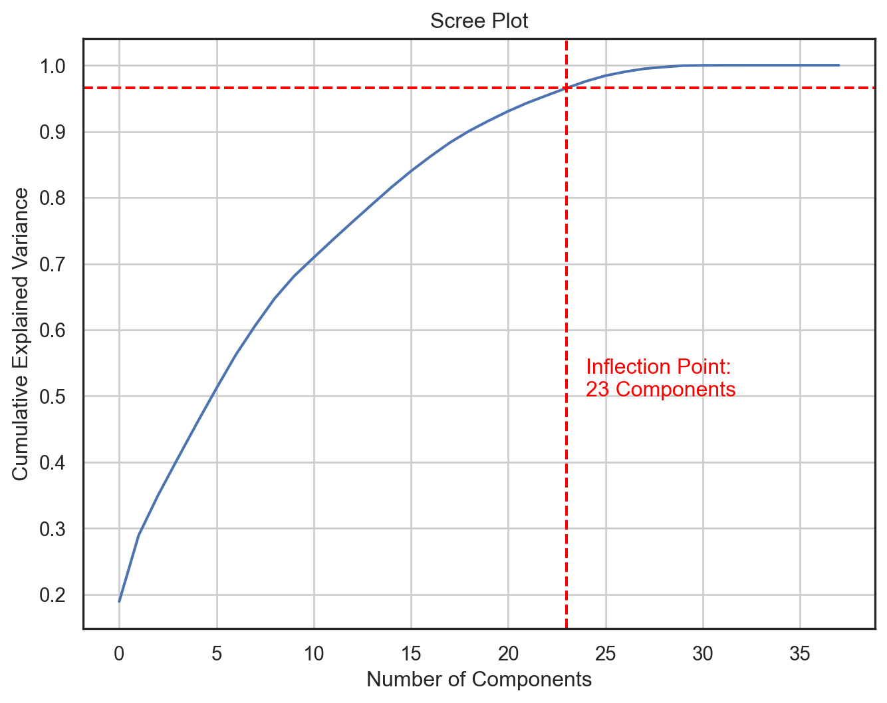
Correlations
Code
numerical_cols = loans.select_dtypes(include = ['int64', 'float64'])
corr_matrix = numerical_cols.corr()
threshold = 0.75 # This is an example threshold
highly_correlated_pairs = [(i, j) for i in corr_matrix.columns for j in corr_matrix.columns if (i != j) and (abs(corr_matrix[i][j]) > threshold)]
print("Highly correlated pairs:")
for pair in highly_correlated_pairs:
print(pair)Highly correlated pairs:
('total_credit_lines', 'open_credit_lines')
('total_credit_lines', 'num_satisfactory_accounts')
('total_credit_lines', 'num_total_cc_accounts')
('open_credit_lines', 'total_credit_lines')
('open_credit_lines', 'num_satisfactory_accounts')
('open_credit_lines', 'num_open_cc_accounts')
('num_historical_failed_to_pay', 'tax_liens')
('current_accounts_delinq', 'num_accounts_30d_past_due')
('num_satisfactory_accounts', 'total_credit_lines')
('num_satisfactory_accounts', 'open_credit_lines')
('num_satisfactory_accounts', 'num_open_cc_accounts')
('num_accounts_30d_past_due', 'current_accounts_delinq')
('num_active_debit_accounts', 'num_cc_carrying_balance')
('num_total_cc_accounts', 'total_credit_lines')
('num_total_cc_accounts', 'num_open_cc_accounts')
('num_open_cc_accounts', 'open_credit_lines')
('num_open_cc_accounts', 'num_satisfactory_accounts')
('num_open_cc_accounts', 'num_total_cc_accounts')
('num_open_cc_accounts', 'num_cc_carrying_balance')
('num_cc_carrying_balance', 'num_active_debit_accounts')
('num_cc_carrying_balance', 'num_open_cc_accounts')
('tax_liens', 'num_historical_failed_to_pay')
('loan_amount', 'installment')
('loan_amount', 'balance')
('installment', 'loan_amount')
('installment', 'balance')
('balance', 'loan_amount')
('balance', 'installment')
('paid_total', 'paid_principal')
('paid_principal', 'paid_total')columns_to_remove = [
'total_credit_lines', # Redundant with open_credit_lines and other credit line features
'num_satisfactory_accounts', # Likely a subset of other credit line features
'tax_liens', # If num_historical_failed_to_pay is more relevant
'current_accounts_delinq', # Redundant with num_accounts_30d_past_due
'num_total_cc_accounts', # Redundant with num_open_cc_accounts
'installment', # If loan_amount is more fundamental to the analysis
'balance', # If loan_amount provides a better perspective
'grade', # Sub_grade provides more detailed information
'paid_total', # If paid_principal provides a better perspective
]
loans.drop(columns = columns_to_remove)
loans.head()| emp_title | emp_length | state | homeownership | annual_income | verified_income | debt_to_income | delinq_2y | earliest_credit_line | inquiries_last_12m | total_credit_lines | open_credit_lines | total_credit_limit | total_credit_utilized | num_collections_last_12m | num_historical_failed_to_pay | current_accounts_delinq | total_collection_amount_ever | current_installment_accounts | accounts_opened_24m | months_since_last_credit_inquiry | num_satisfactory_accounts | num_accounts_120d_past_due | num_accounts_30d_past_due | num_active_debit_accounts | total_debit_limit | num_total_cc_accounts | num_open_cc_accounts | num_cc_carrying_balance | num_mort_accounts | account_never_delinq_percent | tax_liens | public_record_bankrupt | loan_purpose | application_type | loan_amount | term | interest_rate | installment | grade | sub_grade | issue_month | loan_status | initial_listing_status | disbursement_method | balance | paid_total | paid_principal | paid_interest | paid_late_fees | risk | |
|---|---|---|---|---|---|---|---|---|---|---|---|---|---|---|---|---|---|---|---|---|---|---|---|---|---|---|---|---|---|---|---|---|---|---|---|---|---|---|---|---|---|---|---|---|---|---|---|---|---|---|---|
| 0 | global config engineer | 3.0 | NJ | MORTGAGE | 90000.0 | Verified | 18.01 | 0 | 2001 | 6 | 28 | 10 | 70795 | 38767 | 0 | 0 | 0 | 1250 | 2 | 5 | 5.0 | 10 | 0.0 | 0 | 2 | 11100 | 14 | 8 | 6 | 1 | 92.9 | 0 | 0 | moving | individual | 28000 | 60 | 14.07 | 652.53 | C | C3 | Mar-2018 | Current | whole | Cash | 27015.86 | 1999.33 | 984.14 | 1015.19 | 0.0 | Medium Risk |
| 1 | warehouse office clerk | 10.0 | HI | RENT | 40000.0 | Not Verified | 5.04 | 0 | 1996 | 1 | 30 | 14 | 28800 | 4321 | 0 | 1 | 0 | 0 | 0 | 11 | 8.0 | 14 | 0.0 | 0 | 3 | 16500 | 24 | 14 | 4 | 0 | 100.0 | 0 | 1 | debt_consolidation | individual | 5000 | 36 | 12.61 | 167.54 | C | C1 | Feb-2018 | Current | whole | Cash | 4651.37 | 499.12 | 348.63 | 150.49 | 0.0 | Medium Risk |
| 2 | assembly | 3.0 | WI | RENT | 40000.0 | Source Verified | 21.15 | 0 | 2006 | 4 | 31 | 10 | 24193 | 16000 | 0 | 0 | 0 | 432 | 1 | 13 | 7.0 | 10 | 0.0 | 0 | 3 | 4300 | 14 | 8 | 6 | 0 | 93.5 | 0 | 0 | other | individual | 2000 | 36 | 17.09 | 71.40 | D | D1 | Feb-2018 | Current | fractional | Cash | 1824.63 | 281.80 | 175.37 | 106.43 | 0.0 | Medium Risk |
| 3 | customer service | 1.0 | PA | RENT | 30000.0 | Not Verified | 10.16 | 0 | 2007 | 0 | 4 | 4 | 25400 | 4997 | 0 | 1 | 0 | 0 | 1 | 1 | 15.0 | 4 | 0.0 | 0 | 2 | 19400 | 3 | 3 | 2 | 0 | 100.0 | 1 | 0 | debt_consolidation | individual | 21600 | 36 | 6.72 | 664.19 | A | A3 | Jan-2018 | Current | whole | Cash | 18853.26 | 3312.89 | 2746.74 | 566.15 | 0.0 | Low Risk |
| 4 | security supervisor | 10.0 | CA | RENT | 35000.0 | Verified | 57.96 | 0 | 2008 | 7 | 22 | 16 | 69839 | 52722 | 0 | 0 | 0 | 0 | 1 | 6 | 4.0 | 16 | 0.0 | 0 | 10 | 32700 | 20 | 15 | 13 | 0 | 100.0 | 0 | 0 | credit_card | joint | 23000 | 36 | 14.07 | 786.87 | C | C3 | Mar-2018 | Current | whole | Cash | 21430.15 | 2324.65 | 1569.85 | 754.80 | 0.0 | Medium Risk |
Spending our data 💰
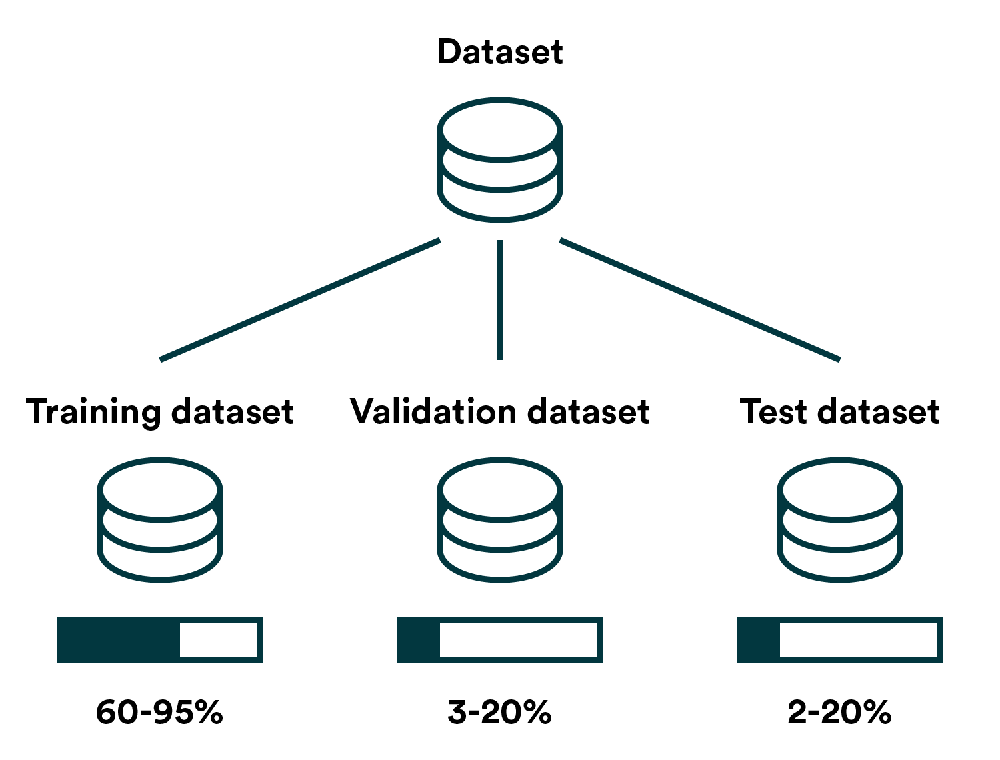
Data Preparation
# Encode categorical variables
categorical_columns = loans.select_dtypes(include = ['object', 'category']).columns.tolist()
# Encode categorical variables
label_encoders = {col: LabelEncoder() for col in categorical_columns}
for col in categorical_columns:
loans[col] = label_encoders[col].fit_transform(loans[col])
# Define features and target
X = loans.drop('risk', axis = 1)
y = loans['risk']
# Split the data
X_train, X_test, y_train, y_test = train_test_split(X, y, test_size = 0.2, random_state = 42)
# Reduce dimensionality to prevent overfitting
pca = PCA(n_components = 2)
X_train_pca = pca.fit_transform(X_train)
X_test_pca = pca.transform(X_test)Confusion matrix
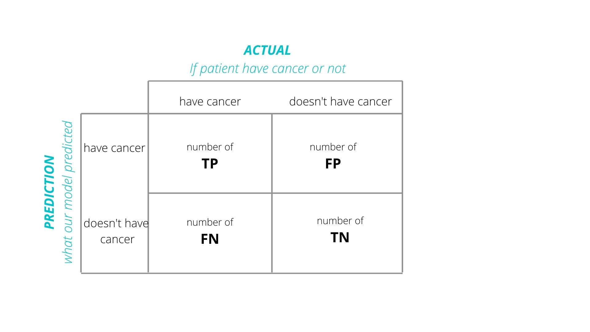
Aside: visualizing decision boundaries
def decisionplot(model, X, y, resolution=216):
# Split the data into features (X) and the class variable (y)
x_min, x_max = X.iloc[:, 0].min() - 1, X.iloc[:, 0].max() + 1
y_min, y_max = X.iloc[:, 1].min() - 1, X.iloc[:, 1].max() + 1
xx, yy = np.meshgrid(np.linspace(x_min, x_max, resolution),
np.linspace(y_min, y_max, resolution))
# Predict outcomes for each point on the grid
if isinstance(model, LinearDiscriminantAnalysis):
# For LDA, we need to use the decision_function method
Z = model.decision_function(np.c_[xx.ravel(), yy.ravel()])
else:
Z = model.predict(np.c_[xx.ravel(), yy.ravel()])
if isinstance(model, LinearDiscriminantAnalysis):
# Reshape LDA decision function output appropriately
Z = Z.reshape(-1, 1)
else:
Z = Z.reshape(xx.shape)
# Plot the actual data points
plt.scatter(X.iloc[:, 0], X.iloc[:, 1], c=y, edgecolors='k', s=20)
# Overlay the decision boundary
plt.contourf(xx, yy, Z, alpha = 0.5)
# Calculate the accuracy
predictions = model.predict(X)
acc = accuracy_score(y, predictions)
# Set labels for axes
plt.xlabel(X.columns[0])
plt.ylabel(X.columns[1])
plt.show()Logistic regression
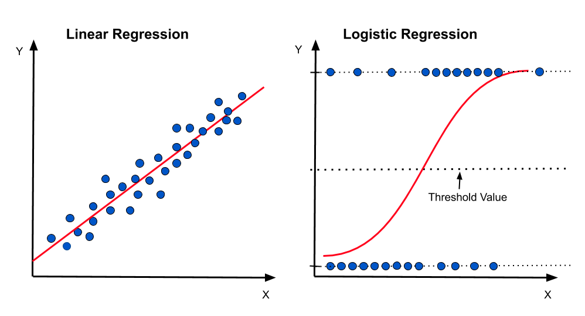
Used for Binary Classification: Ideal for predicting binary outcomes (e.g., yes/no decisions). But! Softmax regression can predict 2+ outcomes.
Estimates Probabilities: Computes the likelihood of class membership (between 0 and 1).
Sigmoid Function: Transforms linear predictions into probabilities using a logistic curve.
Coefficients and Odds Ratio: Coefficients estimate the impact on the odds of the outcome.
Maximum Likelihood Estimation: Optimizes the fit of the model to the data.
Interpretable: The model’s output is straightforward and easy to understand.
Linear Relationship Assumption: Assumes a linear relationship between predictors and the log-odds of the outcome.
Independent Observations Required: Each observation should be independent of others.
Logistic regression: applied
Linear discriminant analysis
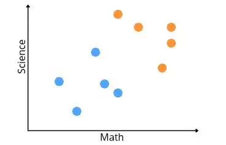
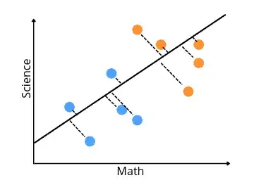
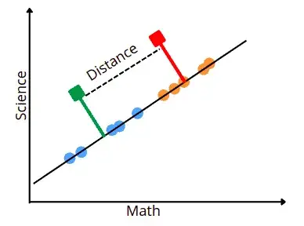
\(\mu_1\) - \(\mu_2\) / \(\sigma_1\) + \(\sigma_2\)
Classification: Primarily used for finding a linear combination of features that best separates two or more classes.
Dimensionality Reduction: Reduces the number of variables while preserving as much class discriminatory information as possible.
Assumptions: Assumes normally distributed data, equal class covariances, and independence of features.
Multiclass Classification: Effective in situations where there are more than two classes.
Result Interpretation: Provides linear discriminants that act as a decision rule for classification.
Linear discriminant analysis: applied
Code
acc = accuracy_score(y_test, predictions)
# Create a meshgrid for plotting
x_min, x_max = X_test_pca[:, 0].min() - 1, X_test_pca[:, 0].max() + 1
y_min, y_max = X_test_pca[:, 1].min() - 1, X_test_pca[:, 1].max() + 1
xx, yy = np.meshgrid(np.linspace(x_min, x_max, 100), np.linspace(y_min, y_max, 100))
# Predict on grid points using test data
Z = lda.predict(np.c_[xx.ravel(), yy.ravel()])
Z = Z.reshape(xx.shape) # Reshape to match grid shape
# Plot the decision boundary
plt.contourf(xx, yy, Z, alpha = 0.5)
# Overlay data points from the test set
plt.scatter(X_test_pca[:, 0], X_test_pca[:, 1], c=y_test, edgecolors = 'k', s = 20)
# Customize plot
plt.title(f"Decision Boundary; Training Accuracy: {acc:.2f}", fontsize = 13)
plt.xlabel("PCA 1")
plt.ylabel("PCA 2")
plt.show()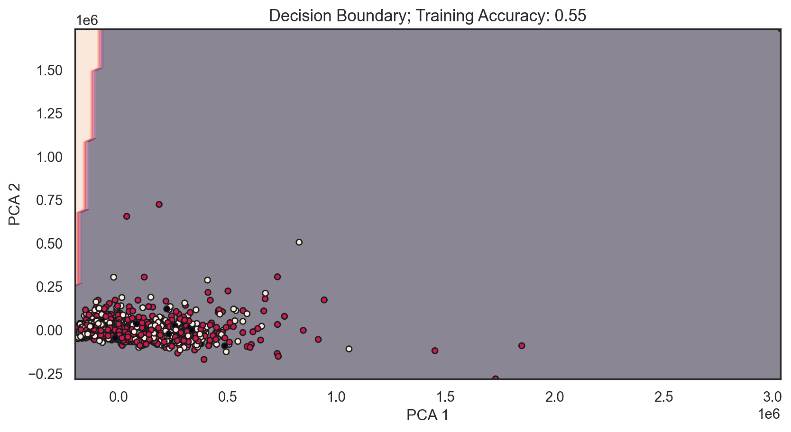
K-Nearest Neighbors (KNN)
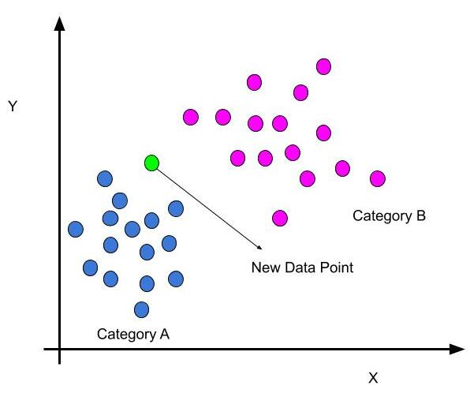
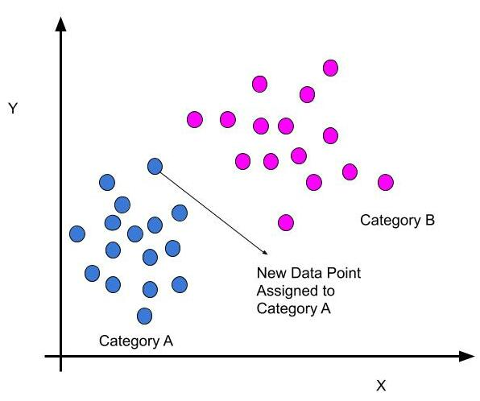
Instance-Based: Uses the entire training set for prediction.
Simple Algorithm: Classifies based on the majority class among ‘k’ closest neighbors.
Distance Metrics: Employs Euclidean or Manhattan distance for neighbor identification.
Parameter ‘k’: Critical to model performance; balancing is needed.
No Explicit Training: Leads to slower predictions with larger datasets.
Feature Scaling Needed: Performance depends on scaled features.
Small Dataset Efficiency: Ideal for small datasets, less so for large ones.
Versatile Use: Applicable for both classification and regression.
K-Nearest Neighbors (KNN): applied

Naive Bayes
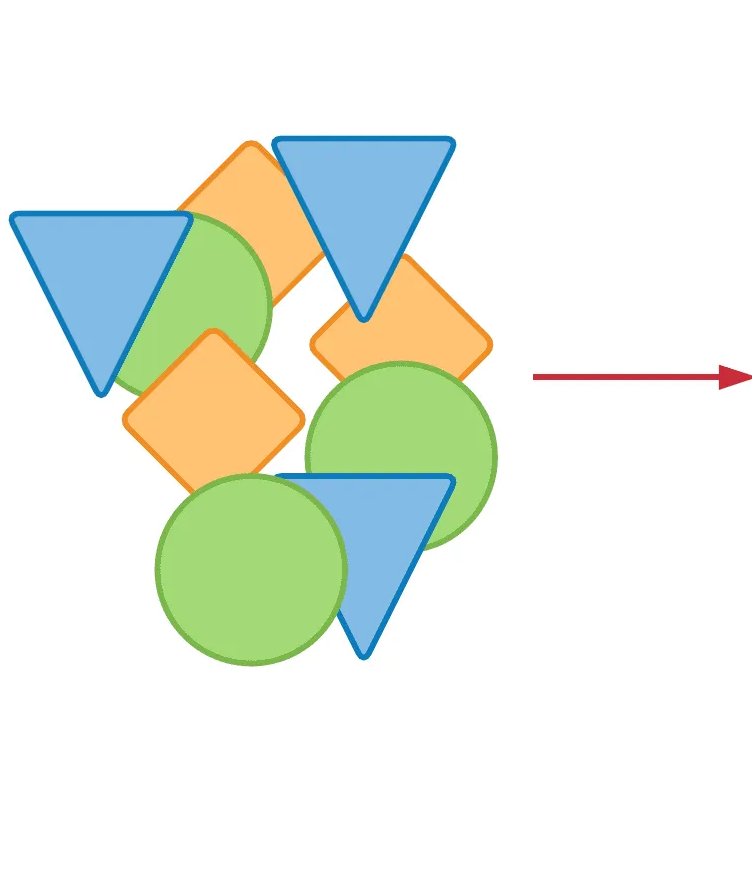
Baye’s Theorem
\[\begin{equation} P(A|B) = \frac{P(B|A) \cdot P(A)}{P(B)} \end{equation}\]
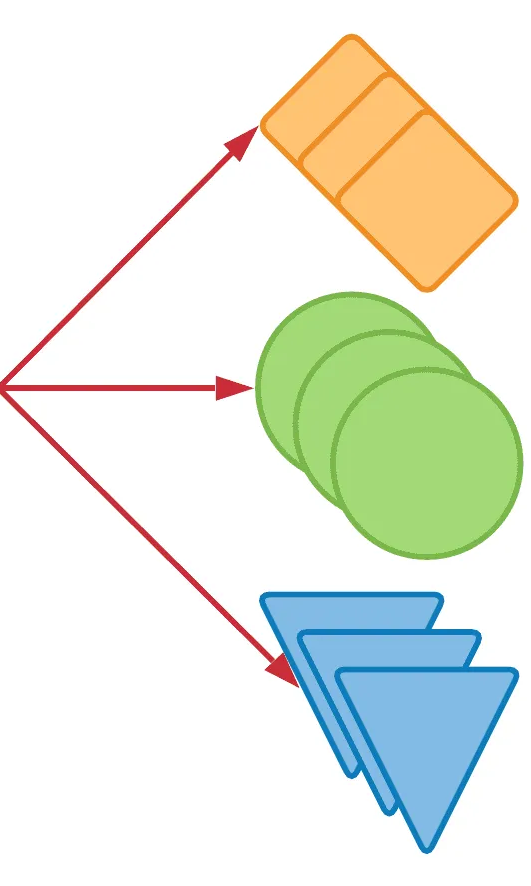
Probabilistic Classifier: Calculates the probability of data belonging to a class.
Independence Assumption: Assumes features are independent given the class, simplifying calculations.
Variants: Includes Multinomial and Gaussian Naive Bayes for different data types.
Applications: Commonly used in text classification, spam detection, and recommendation systems.
Fast Training: Quick training, suitable for large datasets.
Laplace Smoothing: Used to handle zero probabilities.
High-Dimensional Data: Performs well in high-dimensional data.
Interpretable: Provides interpretable results with class probabilities.
Sensitivity to Outliers: Sensitive to outliers and irrelevant features.
Complex Relationships: May not capture complex feature dependencies well.
Baseline Model: Useful as a baseline for more complex classifiers.
Naive Bayes: applied
Decision trees
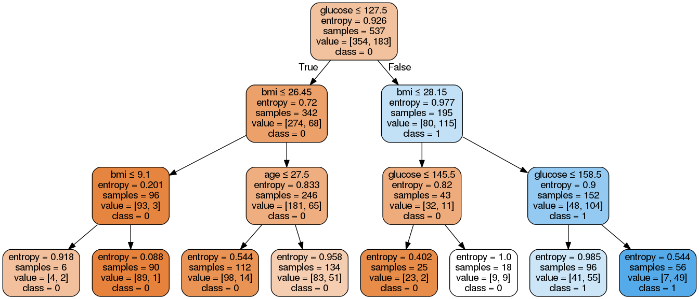
Hierarchical Structure: Decision trees have a hierarchical structure with nodes, branches, and leaves.
Splitting Criteria: They use criteria like Gini impurity or entropy to split data based on feature values.
Interpretability: Highly interpretable due to the visual tree structure.
Overfitting: Prone to overfitting, requiring techniques like pruning to mitigate.
Feature Importance: Provide feature importance scores for understanding variable impact.
Versatility: Applicable to various classification tasks with both categorical and numerical data.
Ensemble Methods: Often used as base models in ensemble methods for improved accuracy.
Computational Complexity: Can be computationally expensive for large datasets; optimized algorithms available.
Decision trees: applied
Random forest
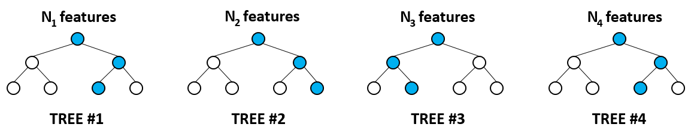
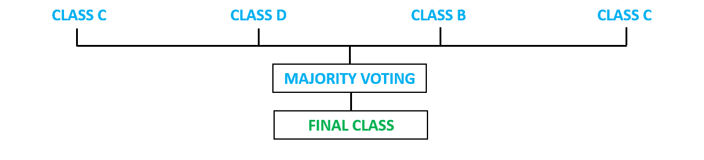
Ensemble Method: Combines multiple decision trees for better predictions.
Bagging: Uses bootstrapped data subsets for tree training.
Feature Randomization: Randomly selects features for each tree split.
Voting Mechanism: Combines tree outputs via majority voting.
Versatile: Works for classification and regression tasks.
Robust to Overfitting: Less prone to overfitting than single trees.
Out-of-Bag Error: Estimates generalization error using unused data.
Feature Importance: Measures the importance of input features.
Parallelization: Can be parallelized for faster training.
Robust to Noisy Data: Handles noisy data and outliers well.
Hyperparameter Tuning: Requires tuning for optimal performance.
Widely Adopted: Used in various domains for its effectiveness.
Random Forest: applied
Gradient Boosting (XGBoost)
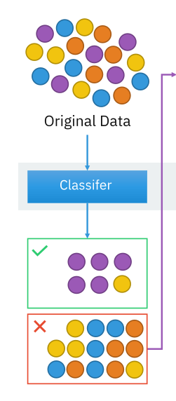
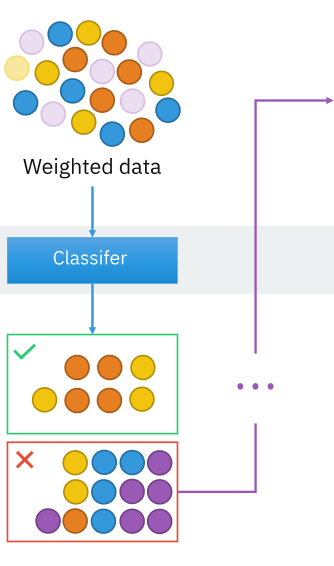
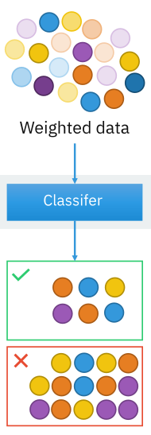
Gradient Boosting: algorithm for classification and regression tasks.
Ensemble Learning: It combines multiple decision trees to create a robust predictive model.
Sequential Trees: Builds decision trees sequentially to correct errors from previous ones.
Feature Importance: Provides feature importance scores for identifying influential features.
Handling Missing Data: Offers built-in support for managing missing data.
Parallel & Distributed: Efficiently parallelized and distributed for scalability.
Speed & Efficiency: Known for its speed due to tree pruning and histogram-based algorithms.
Custom Objectives: Allows defining custom objective functions for specific problems.
Applications: Used in predictive modeling, NLP, recommendation systems, and more.
Gradient Boost (XGBoost): applied
Neural Networks

Layers & Neurons: Interconnected nodes in layers.
Weights & Activation: Neurons use weights and activations.
Forward & Backward: Data flows in both directions.
Deep Architectures: Many hidden layers for complexity.
Training Data: Requires abundant labeled data.
Loss Functions: Measure prediction errors.
Backpropagation: Adjusts weights using errors.
Hyperparameters: Tuning for model performance.
Overfitting: Risk with complex models, mitigated by regularization.
GPU Acceleration: Faster training with GPUs.
Transfer Learning: Reusing pre-trained models.
Interpretability: Limited in complex models.
Applications: Image, NLP, autonomous systems.
Neural Networks: applied
# Convert NumPy arrays to PyTorch tensors
X_train_tensor = torch.tensor(X_train_pca, dtype=torch.float32)
y_train_bin = (y_train.to_numpy() > 0).astype(float)
y_train_tensor = torch.tensor(y_train_bin.reshape(-1, 1), dtype=torch.float32)
X_test_tensor = torch.tensor(X_test_pca, dtype=torch.float32)
# Define neural network
class SimpleNN(nn.Module):
def __init__(self, input_dim):
super(SimpleNN, self).__init__()
self.fc1 = nn.Linear(input_dim, 10)
self.fc2 = nn.Linear(10, 1)
def forward(self, x):
x = F.relu(self.fc1(x))
x = torch.sigmoid(self.fc2(x)) # for binary classification
return x
# Initialize model, loss function, optimizer
model = SimpleNN(X_train_pca.shape[1])
criterion = nn.BCELoss()
optimizer = torch.optim.Adam(model.parameters(), lr=0.001)
# Create DataLoader for batching
train_dataset = TensorDataset(X_train_tensor, y_train_tensor)
train_loader = DataLoader(train_dataset, batch_size=10, shuffle=True)
# Train model
for epoch in range(100):
for batch_X, batch_y in train_loader:
optimizer.zero_grad()
outputs = model(batch_X)
loss = criterion(outputs, batch_y)
loss.backward()
optimizer.step()
# Predict on test data
model.eval()
with torch.no_grad():
predictions = model(X_test_tensor).numpy()
# Post-process predictions
nn_predictions = np.round(predictions).flatten()
print("Neural Network Accuracy:", accuracy_score(y_test, nn_predictions))Neural Network Accuracy: 0.2465Conclusions: question
Can we predict high-risk credit individuals by their financial traits?
Not with the reduced dataset…
However…
What type of category is credit risk?
Feature engineering (ordinal)
loans['risk'] = loans['grade']
low_risk = ['A', 'B']
med_risk = ['C', 'D']
high_risk = ['E', 'F', 'G']
loans['risk'] = loans['grade'].apply(lambda x: 'Low Risk' if x in low_risk else ('Medium Risk' if x in med_risk else 'High Risk'))
risk_mapping = {'Low Risk': 1, 'Medium Risk': 2, 'High Risk': 3}
loans['risk'] = loans['risk'].map(risk_mapping)
loans.drop(columns = 'grade')| emp_title | emp_length | state | homeownership | annual_income | verified_income | debt_to_income | delinq_2y | earliest_credit_line | inquiries_last_12m | total_credit_lines | open_credit_lines | total_credit_limit | total_credit_utilized | num_collections_last_12m | num_historical_failed_to_pay | current_accounts_delinq | total_collection_amount_ever | current_installment_accounts | accounts_opened_24m | months_since_last_credit_inquiry | num_satisfactory_accounts | num_accounts_120d_past_due | num_accounts_30d_past_due | num_active_debit_accounts | total_debit_limit | num_total_cc_accounts | num_open_cc_accounts | num_cc_carrying_balance | num_mort_accounts | account_never_delinq_percent | tax_liens | public_record_bankrupt | loan_purpose | application_type | loan_amount | term | interest_rate | installment | sub_grade | issue_month | loan_status | initial_listing_status | disbursement_method | balance | paid_total | paid_principal | paid_interest | paid_late_fees | risk | |
|---|---|---|---|---|---|---|---|---|---|---|---|---|---|---|---|---|---|---|---|---|---|---|---|---|---|---|---|---|---|---|---|---|---|---|---|---|---|---|---|---|---|---|---|---|---|---|---|---|---|---|
| 0 | 1777 | 3.0 | 30 | 0 | 90000.0 | 2 | 18.01 | 0 | 2001 | 6 | 28 | 10 | 70795 | 38767 | 0 | 0 | 0 | 1250 | 2 | 5 | 5.0 | 10 | 0.0 | 0 | 2 | 11100 | 14 | 8 | 6 | 1 | 92.9 | 0 | 0 | 7 | 0 | 28000 | 60 | 14.07 | 652.53 | 12 | 2 | 1 | 1 | 0 | 27015.86 | 1999.33 | 984.14 | 1015.19 | 0.0 | 3 |
| 1 | 4676 | 10.0 | 11 | 2 | 40000.0 | 0 | 5.04 | 0 | 1996 | 1 | 30 | 14 | 28800 | 4321 | 0 | 1 | 0 | 0 | 0 | 11 | 8.0 | 14 | 0.0 | 0 | 3 | 16500 | 24 | 14 | 4 | 0 | 100.0 | 0 | 1 | 2 | 0 | 5000 | 36 | 12.61 | 167.54 | 10 | 0 | 1 | 1 | 0 | 4651.37 | 499.12 | 348.63 | 150.49 | 0.0 | 3 |
| 2 | 207 | 3.0 | 47 | 2 | 40000.0 | 1 | 21.15 | 0 | 2006 | 4 | 31 | 10 | 24193 | 16000 | 0 | 0 | 0 | 432 | 1 | 13 | 7.0 | 10 | 0.0 | 0 | 3 | 4300 | 14 | 8 | 6 | 0 | 93.5 | 0 | 0 | 8 | 0 | 2000 | 36 | 17.09 | 71.40 | 15 | 0 | 1 | 0 | 0 | 1824.63 | 281.80 | 175.37 | 106.43 | 0.0 | 3 |
| 3 | 1035 | 1.0 | 37 | 2 | 30000.0 | 0 | 10.16 | 0 | 2007 | 0 | 4 | 4 | 25400 | 4997 | 0 | 1 | 0 | 0 | 1 | 1 | 15.0 | 4 | 0.0 | 0 | 2 | 19400 | 3 | 3 | 2 | 0 | 100.0 | 1 | 0 | 2 | 0 | 21600 | 36 | 6.72 | 664.19 | 2 | 1 | 1 | 1 | 0 | 18853.26 | 3312.89 | 2746.74 | 566.15 | 0.0 | 3 |
| 4 | 3710 | 10.0 | 4 | 2 | 35000.0 | 2 | 57.96 | 0 | 2008 | 7 | 22 | 16 | 69839 | 52722 | 0 | 0 | 0 | 0 | 1 | 6 | 4.0 | 16 | 0.0 | 0 | 10 | 32700 | 20 | 15 | 13 | 0 | 100.0 | 0 | 0 | 1 | 1 | 23000 | 36 | 14.07 | 786.87 | 12 | 2 | 1 | 1 | 0 | 21430.15 | 2324.65 | 1569.85 | 754.80 | 0.0 | 3 |
| ... | ... | ... | ... | ... | ... | ... | ... | ... | ... | ... | ... | ... | ... | ... | ... | ... | ... | ... | ... | ... | ... | ... | ... | ... | ... | ... | ... | ... | ... | ... | ... | ... | ... | ... | ... | ... | ... | ... | ... | ... | ... | ... | ... | ... | ... | ... | ... | ... | ... | ... |
| 9995 | 2830 | 10.0 | 42 | 2 | 108000.0 | 1 | 22.28 | 0 | 2008 | 5 | 44 | 13 | 199195 | 77963 | 0 | 1 | 0 | 0 | 3 | 8 | 6.0 | 13 | 0.0 | 0 | 4 | 44600 | 22 | 9 | 4 | 1 | 100.0 | 0 | 1 | 8 | 0 | 24000 | 36 | 7.35 | 744.90 | 3 | 1 | 1 | 1 | 0 | 21586.34 | 2969.80 | 2413.66 | 556.14 | 0.0 | 3 |
| 9996 | 1194 | 8.0 | 37 | 0 | 121000.0 | 2 | 32.38 | 4 | 1994 | 1 | 28 | 15 | 382061 | 101571 | 0 | 0 | 0 | 0 | 3 | 0 | 1.0 | 15 | 0.0 | 0 | 5 | 28200 | 18 | 11 | 8 | 2 | 82.1 | 0 | 0 | 2 | 0 | 10000 | 36 | 19.03 | 366.72 | 17 | 0 | 1 | 1 | 0 | 9147.44 | 1456.31 | 852.56 | 603.75 | 0.0 | 3 |
| 9997 | 4484 | 10.0 | 6 | 0 | 67000.0 | 2 | 45.26 | 2 | 2004 | 0 | 18 | 11 | 346402 | 95421 | 0 | 0 | 0 | 0 | 3 | 4 | 16.0 | 11 | 0.0 | 0 | 5 | 14900 | 9 | 7 | 5 | 2 | 72.2 | 0 | 0 | 2 | 1 | 30000 | 36 | 23.88 | 1175.10 | 21 | 0 | 1 | 0 | 0 | 27617.65 | 4620.80 | 2382.35 | 2238.45 | 0.0 | 3 |
| 9998 | 2410 | 1.0 | 47 | 0 | 80000.0 | 1 | 11.99 | 0 | 1999 | 1 | 38 | 15 | 294475 | 27641 | 0 | 0 | 0 | 0 | 2 | 2 | 5.0 | 15 | 0.0 | 0 | 1 | 46000 | 15 | 9 | 2 | 6 | 100.0 | 0 | 0 | 8 | 0 | 24000 | 36 | 5.32 | 722.76 | 0 | 0 | 1 | 1 | 0 | 21518.12 | 2873.31 | 2481.88 | 391.43 | 0.0 | 3 |
| 9999 | 2769 | 3.0 | 6 | 2 | 66000.0 | 0 | 20.82 | 0 | 2005 | 0 | 15 | 11 | 91887 | 53413 | 0 | 0 | 0 | 0 | 5 | 4 | 18.0 | 11 | 0.0 | 0 | 5 | 36800 | 6 | 5 | 5 | 0 | 100.0 | 0 | 0 | 1 | 0 | 12800 | 36 | 10.91 | 418.52 | 8 | 0 | 1 | 1 | 0 | 11574.83 | 1658.56 | 1225.17 | 433.39 | 0.0 | 3 |
10000 rows × 50 columns
Ordinal logistic regression
Dependent Variable: It is used when the response variable is ordinal, meaning the categories have a natural order (e.g., ‘poor’ to ‘excellent’ ratings).
Proportional Odds Assumption: Assumes that the odds of being in a higher category versus all lower categories are the same across each threshold of the dependent variable.
Cumulative Probabilities: Models the probability of the response variable being in a certain category or a lower one, rather than modeling each category individually.
Coefficients Interpretation: Coefficients indicate the change in the log odds of being in a higher category for a one-unit increase in the predictor, holding other variables constant.
Model Diagnostics: Important to assess the proportional odds assumption and model fit using diagnostics like likelihood ratio tests or pseudo R-squared values.
Applications: Widely used in fields like social sciences and medical research for analyzing ordinal data.
Ordinal logistic regression: applied

K-Nearest Neighbors (KNN): applied


Decision trees: applied
Conclusions …cont
Similar performance as nominal models
…BUT Ordinal Logistic Regression performed best, and better than the nominal model.